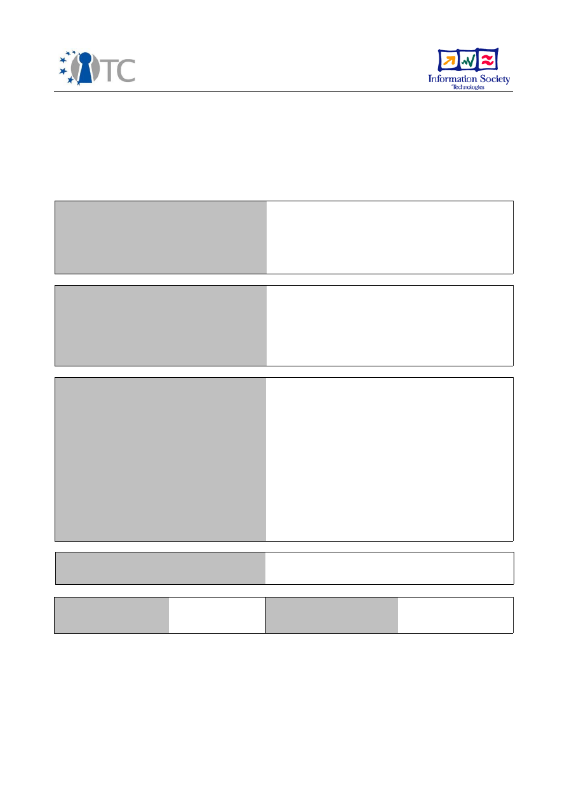
D3.3 Collected internal deliverables for year 3
Project number
IST-027635
Project acronym
Open_TC
Project title
Open Trusted Computing
Deliverable type
Report, Prototype
(see page 87/88 of Annex1)
Deliverable reference number
IST-027635/D3.3/1.0
Deliverable title
Collected internal deliverables for year 3
WP contributing to the deliverable
WP3
Due date
M38 (postponed to M42)
Actual submission date
03.06.09
Responsible Organisation
POLITO
Authors
Emanuele Cesena, Davide Vernizzi, Gianluca
Ramunno, Roberto Sassu (POL)
Abstract
Collection of internal deliverables of WP3 in
year 3
Keywords
OpenTC WP3
Dissemination level
Public
Revision
1.0
Instrument
IP
Start date of the
project
1
st
November 2005
Thematic Priority
IST
Duration
42 months
Collected internal deliverables for year 3
V 1.0
Introduction:
This Deliverable is a collection of the following internal WP3 Deliverables out of the
Sub-Workpackages with Nature R (Report) and P (Prototype) within the period of M25 -
M36:
●
D03c.3 – TLS DAA enhancement specification
●
D03c.6 – TLS DAA enhancement OpenSSL design
●
D03c.12 – OpenSSL engine TLS DAA enhancement
●
D03c.9 Enhancement of Key Management Adaptation (KMA), which also
includes:
○
D03c.10 Adapting IPsec configuration tools and IKE demon source
○
D03c.11 PKCS#11 source code and documentation
The source code and the binaries of these Deliverables are located on a FTP server.
The link and the credentials for accessing this FTP server are being sent separately via
email to both, the EC and the Reviewers.
If you need further information, please visit our website
www.opentc.net
or contact
the coordinator:
Technikon Forschungs-und Planungsgesellschaft mbH
Burgplatz 3a, 9500 Villach, AUSTRIA
Tel.+43 4242 23355 –0
Fax. +43 4242 23355 –77
Email
coordination@opentc.net
The information in this document is provided “as is”, and no guarantee
or warranty is given that the information is fit for any particular purpose.
The user thereof uses the information at its sole risk and liability.
Open_TC Deliverable 3.3
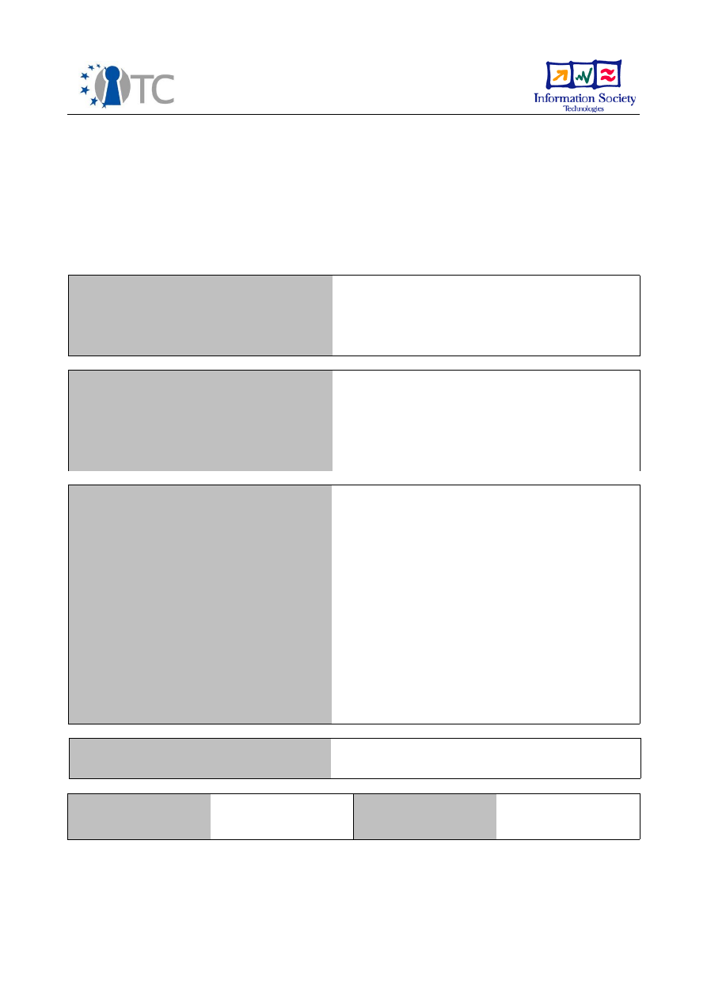
D03c.3 SSL/TLS DAA-enhancement
specification
Project number
IST-027635
Project acronym
Open_TC
Project title
Open Trusted Computing
Deliverable type
Internal deliverable
Deliverable reference number
IST-027635/D03c.3/FINAL | 1.20
Deliverable title
SSL/TLS DAA-enhancement specification
WP contributing to the deliverable
WP03c
Due date
Dec 2006 - M12
Actual submission date
May 15, 2009 (second revision)
Responsible Organisation
POL
Authors
Emanuele Cesena, Gianluca Ramunno,
Davide Vernizzi (editor)
Abstract
This deliverable specifies the enhancements
to TLS protocol in order to use DAA for group
authentication.
Keywords
OPEN_TC, TPM, TLS, DAA
Dissemination level
Public
Revision
FINAL | 1.20
Instrument
IP
Start date of the
project
1
st
November 2005
Thematic Priority
IST
Duration
42 months

SSL/TLS DAA-enhancement specification
FINAL | 1.20
Table of Contents
1 Introduction.................................................................................................................4
2 The Direct Anonymous Attestation (DAA) protocol.....................................................4
3 Using the DAA for authentication................................................................................5
3.1 Application scenario...............................................................................................5
3.2 Combining TLS and DAA protocols.........................................................................6
4 Enhancing TLS protocol (informative).........................................................................6
4.1 TLS protocol............................................................................................................6
4.2 Hello extensions.....................................................................................................6
4.3 Supplemental data message..................................................................................9
5 DAA-enhanced TLS (DAA-TLS)...................................................................................10
5.1 Overview..............................................................................................................10
5.2 Summary of DAA-TLS capabilities and protocol flow............................................11
5.3 Binding between TLS channel and DAA authentication........................................13
5.4 Verification of the authentication.........................................................................14
5.5 Definition of the hello extension DAAAuthExt.......................................................14
5.6 Definition of the supplemental data entry DAAAuthSupplDataEntry...................16
6 Specification of TCG TSS/TPM DAA profile for DAA-TLS.............................................18
6.1 Profile requirements and specification.................................................................18
6.2 Prerequisites for using TSS functions for DAA-TLS................................................19
6.3 Nonce and basename generation.........................................................................19
6.4 DAA signature.......................................................................................................20
6.5 Signature verification...........................................................................................21
6.6 Data encoding/decoding.......................................................................................22
6.6.1 Basic data types..............................................................................................22
6.6.2 Complex types.................................................................................................23
6.6.2.1 DAA Signature (normative).........................................................................23
7 Security considerations.............................................................................................24
7.1 Endorsement Key (EK) exposure..........................................................................24
7.2 Basename and DAA signature..............................................................................24
8 IANA considerations..................................................................................................25
9 Final considerations (IPsec and IKE/ISAKMP).............................................................25
10 List of abbreviations................................................................................................26
11 Referenced Documents...........................................................................................26
Open_TC Deliverable 03c.3
2/27

SSL/TLS DAA-enhancement specification
FINAL | 1.20
List of figures
Figure 1: Messages exchanged during the TLS handshake protocol...............................7
Figure 2: Supplemental data exchange in TLS handshake protocol................................9
Figure 3: TLS extended to support DAA authentication (DAA-TLS)...............................12
Figure 4: TCG TSS/TPM DAA profile for DAA-TLS: TLS handshake and TSS calls...........19
Open_TC Deliverable 03c.3
3/27

SSL/TLS DAA-enhancement specification
FINAL | 1.20
1 Introduction
Secure channels allow two or more entities to communicate securely over insecure
networks. These channels use cryptographic primitives to provide confidentiality,
integrity and authentication of network messages. Trusted Computing (TC) technology
allows to extend the network protection to the peers involved in the communication.
TC, in facts, allows a platform with TC-enabled hardware to provide cryptographic
proofs about its behavior. By using this information, the counterpart can be
guaranteed about the security of the message not only while it is transmitted, but also
after it is received on the TC-platform.
2 The Direct Anonymous Attestation (DAA) protocol
Direct Anonymous Attestation (DAA) ([6]) is a privacy-friendly protocol that was
designed to overcome the privacy issues of the Privacy CA (PCA). In particular, the
main problem related to the use of a Privacy CA, is that it is possible for the privacy CA
to disclose sensitive data that could allow a third party to link different remote
attestations made by the same platform and, therefore, breaking the platform's
privacy. DAA overcomes this problem using a zero-knowledge proof.
In this section is given an overview of the DAA protocol and described how this
protocol can be used to provide anonymous authentication.
The DAA scheme involves four principals, three mandatory and one optional:
●
TC-platform equipped with a TPM.
●
DAA issuer.
●
Verifier.
●
A revocation authority. This last entity is optional.
The purpose of the DAA is to convince the verifier that a signature received from the
TC-platform was made using a genuine TPM, without revealing the actual identity of
the platform (in TCG architecture the identity of a platform is represented by the
Endorsement Key (EK) of the TPM).
The DAA is composed of two main protocols: the Join protocol and the Sign protocol.
The Join protocol occurs between the platform and the issuer and results in the TC-
platform receiving a DAA credential, so it can authenticate to verifiers. In details, the
issuer checks that the platform is equipped with a genuine TPM and, if this is the case,
issues to the TPM the DAA credentials. This protocol occurs once for a TC-platform and
has to happen before it can meaningfully interact with verifiers.
The Sign protocol allows a verifier to decide if a signature received from a TC-platform
was made using a genuine TPM or not. Unlike with other protocols (e.g. those involving
the use of an AIK), the verifier does not need to see the actual DAA credential, but the
proof of the existence of the credentials is provided through a zero-knowledge proof.
In detail, the DAA signature is a group signature that provides the verifier with an
evidence that the platform belongs to the group of platforms that received the DAA
credentials from a particular issuer.
DAA provides both complete anonymity and pseudonymity. Complete anonymity
means that the verifier can only verify if the platform that generated the DAA
Open_TC Deliverable 03c.3
4/27

SSL/TLS DAA-enhancement specification
FINAL | 1.20
signature belongs to the group of platforms that received the DAA credentials from the
issuer. Therefore each issuer represents a group of platforms, but each platform can
belong to different groups through DAA credentials obtained from different issuers.
The pseudonymous option allows a verifier to link together different signatures made
by the same platform. Notably, the verifier can recognize the pseudonym under which
a particular platform made a signature and link it to previous signatures made by the
same pseudonym, but it is not possible for the verifier, to link the pseudonym with the
actual platform.
Furthermore, the DAA signature can selectively provide a zero-knowledge proof on a
subset of the attributes that belong to the DAA certificate; for instance, it is possible to
prove that the expiration date of a DAA credential has not been reached, without
revealing it.
Finally, the DAA protocol allows to use a trusted third party as a Revocation Authority
(RA). The RA can revoke the anonymity or the pseudonymity provided by the DAA
credentials under particular circumstances determined by a policy. When the RA is
used, the platform encrypts its identity using the public key of the RA; the verifier then
can forward the encrypted identity of the platform to the revocation authority that
reveals the identity of the platform if the circumstances determined by the policy
apply.
Note that in this version of the document, neither the attributes nor the revocation
authority are used.
3 Using the DAA for authentication
It is possible to use the DAA to authenticate a platform, and therefore to authenticate
its owner, while guaranteeing its privacy. In general, a TC-enabled platform receives
the DAA credentials from an issuer, and many different verifiers challenge the platform
to verify if it belongs to the group of platforms that received the DAA credentials from
that issuer. The TPM guarantees that the DAA credentials cannot be shared with other
platforms and actually belong to the platform, while the DAA protocol guarantees that
it is not possible to link one challenge to the actual identity of the platform, thus
preserving the privacy of the platform.
The DAA signature allows a verifier to authenticate the platform that made the
signature w.r.t. a group of platforms (i.e. those that received the credentials from a
particular issuer), and the platform has assurance that it is not possible to link such
authentication to its real identity.
3.1 Application scenario
A possible scenario for a DAA-based authentication for a service is the following: a
company wants to allow access to the internal network only to authorized platforms.
This requirement can be fulfilled using a TPM-enabled platform and the DAA protocol:
1. The company issues a DAA certificate to each laptop before giving it to the
employee.
2. The company verifies that only allowed platforms (i.e. those that received a DAA
certificate) access the network with a DAA challenge.
In this scenario, the company is assured that only certified laptops can access the
Open_TC Deliverable 03c.3
5/27

SSL/TLS DAA-enhancement specification
FINAL | 1.20
network, and the employees are guaranteed that the company can not link the
authentication to their specific platform. The company might also desire to link the
accesses to different services provided to the remote users. In this case the
pseudonymous option provided by DAA can meet the requirement.
3.2 Combining TLS and DAA protocols
An implementation of a protocol for anonymous authentication through the DAA
signature is possible by enhancing the TLS protocol (see [3]) to implement the
concepts described in section 5. Using the TLS protocol has many advantages: it is
widely supported, many open source implementations are available and it is possible
to extend the protocol without loosing backward compatibility.
The latter point in particular is helpful because allows to design a protocol that can be
used, when a TPM is available, to provide anonymous authentication, but can also
work on platforms without TC-enabled hardware, thus providing classical
authentication. Moreover, TLS also provides confidentiality and integrity of the
messages exchanged on the channel.
4 Enhancing TLS protocol (informative)
4.1 TLS protocol
The Transport Layer Security (TLS) protocol implements a secure channel, namely a
client/server communication guaranteeing authenticity, integrity and confidentiality of
the exchanged data. Two main and subsequent phases can be identified: during the
first one, a
handshake
protocol is run by peers to authenticate themselves to each
other and agree on a session key; then, once the handshake is completed, the
communication begins and the peers exchange messages over the established secure
channel.
In Figure 1 a diagram shows the messages exchanged by client and server during the
TLS handshake.
It is possible to extend the TLS handshake by defining:
1. extensions to the hello messages according to the framework specified in [4]
2. new data units carried over an additional handshake message, called
supplemental data and specified in [5], which can be exchanged between client
and the server in both directions
All definitions recalled in the following are expressed using the Presentation Language
specified and used in [3].
4.2 Hello extensions
The hello extensions consist of additional data that may be used to add functionalities
to TLS and are designed to be backward compatible. Indeed the extensions must be
negotiated: therefore TLS clients supporting the extensions can communicate with TLS
servers not supporting them and vice versa.
Open_TC Deliverable 03c.3
6/27
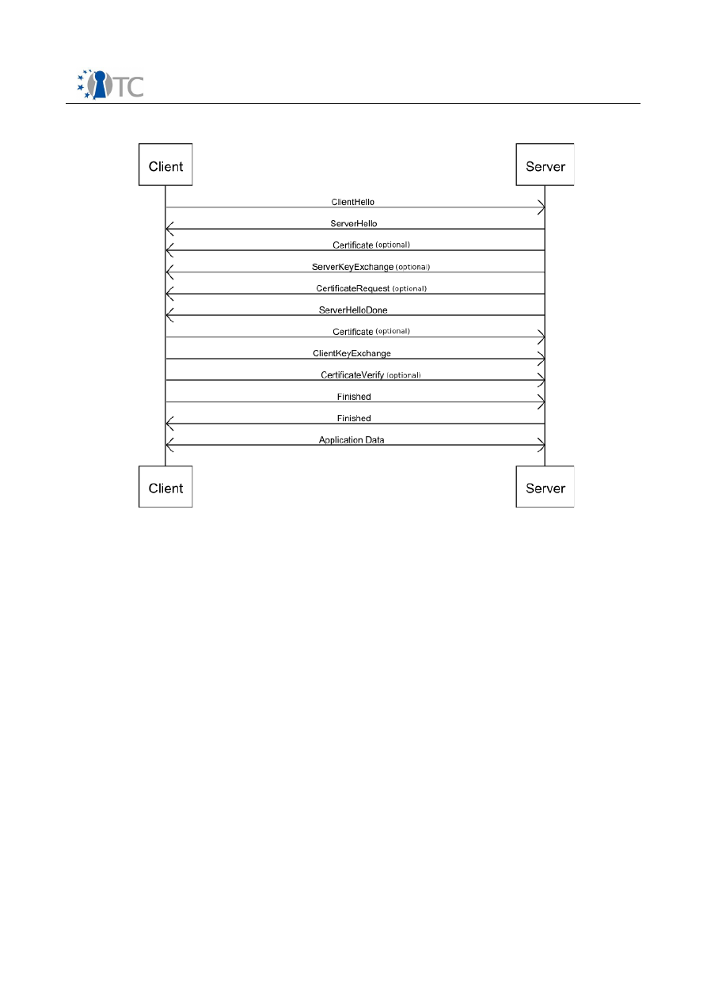
SSL/TLS DAA-enhancement specification
FINAL | 1.20
The extended client hello message definition is:
struct {
ProtocolVersion client_version;
Random random;
SessionID session_id;
CipherSuite cipher_suites<2..2^16-1>;
CompressionMethod compression_methods<1..2^8-1>;
Extension client_hello_extension_list<0..2^16-1>;
} ClientHello;
and, symmetrically, the extended server hello message definition is:
struct {
ProtocolVersion server_version;
Random random;
SessionID session_id;
CipherSuite cipher_suite;
CompressionMethod compression_method;
Extension server_hello_extension_list<0..2^16-1>;
} ServerHello;
Open_TC Deliverable 03c.3
7/27
Figure 1: Messages exchanged during the TLS handshake protocol

SSL/TLS DAA-enhancement specification
FINAL | 1.20
where
client_hello_extensions_list
and
server_hello_extension_list
represent the new field containing a list of extensions, while the other fields have the
same meaning as in the base TLS specification ([3]).
Each extension is defined as:
struct {
ExtensionType extension_type;
opaque extension_data<0..2^16-1>;
} Extension;
where
extension_type
is (the unique identifier of) the type of the extension and
extension_data
contains data specific for the particular extension type.
Clients and servers using the extensions must adhere to the following rules:
1. if the client wants to request the server for extended functionalities, it sends the
extended client hello message instead of the standard hello message
2. if the server supports the extended functionalities required by the client, it may
reply with an extended server hello that contains a subset of the extensions
sent by the client in order to signal to the latter which functionalities will be
provided
The extended server hello message can only be sent in response to a received
extended client hello message and cannot contain any extension that was not
previously requested by the client. The complete definition of the TLS extension
framework is specified in [4].
Each
Extension
must be defined by explicit specification. Five new extensions are
specified in [4].
Open_TC Deliverable 03c.3
8/27
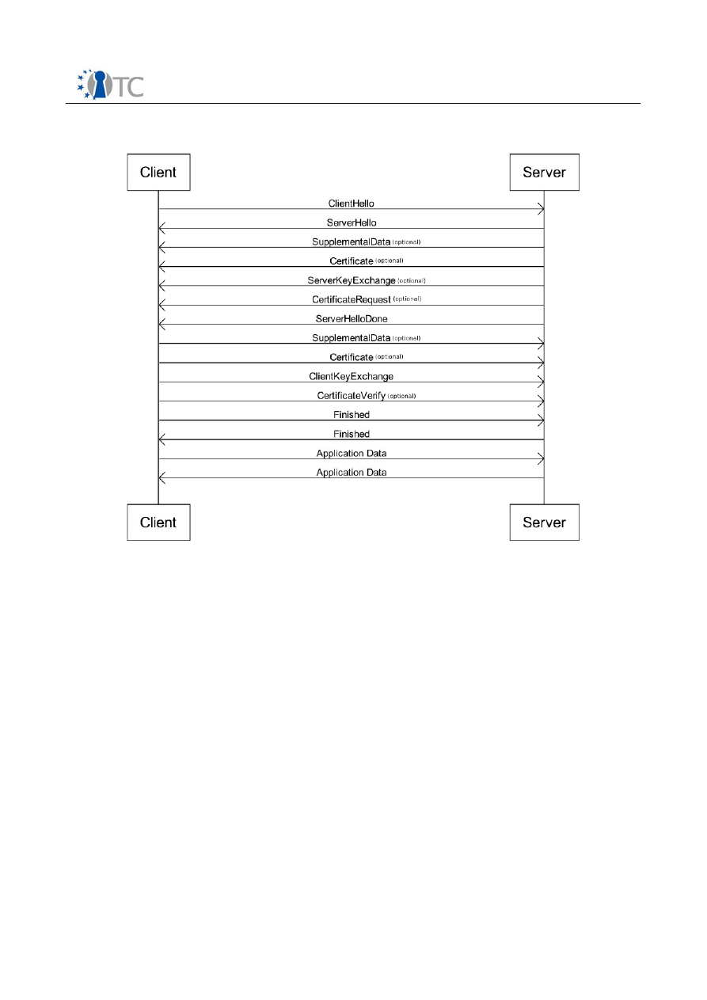
SSL/TLS DAA-enhancement specification
FINAL | 1.20
4.3 Supplemental data message
The supplemental data is an additional message of the TLS handshake, specified in [5],
to carry extra authentication and/or authorization data units for the application
establishing the secure channel.
Different data units, called supplemental data entries, can be transferred from server
to client and vice versa: however, for each direction all supplemental data entries must
be carried over a single message exchanged during the handshake, as shown in
Figure 2.
The supplemental data message is defined as:
struct {
SupplementalDataEntry supp_data<1..2^24-1>;
} SupplementalData;
where
supp_data
is a list of items defined as:
struct {
SupplementalDataType supp_data_type;
uint16 supp_data_length;
Open_TC Deliverable 03c.3
9/27
Figure 2: Supplemental data exchange in TLS handshake protocol

SSL/TLS DAA-enhancement specification
FINAL | 1.20
select(SupplementalDataType) { }
} SupplementalDataEntry;
enum {
(65535)
} SupplementalDataType;
Each
SupplementalDataEntry
is defined by a unique type (
supp_data_type
) and
includes the length (
supp_data_length
) and the value
(
select (SupplementalDataType) { }
).
If present, the
SupplementalData
message must contain at least one non empty
SupplementalDataEntry
which is then used by the application.
Each
SupplementalDataEntry
must be negotiated between client and server via
specific hello extension; receiving an unexpected
SupplementalDataEntry
must result
in a fatal error, and the receiver must close the connection.
Furthermore, supplemental data entries must not be evaluated during (and interfere
with) the TLS handshake by the protocol implementation but only at the end of the
handshake and by the applications.
Each
SupplementalDataEntry
must be defined by explicit specification. Supplemental
data entries can be sent by client and/or server according to their definition. The
supplemental data message must be sent by either party (client/server) to the other
one according to which data entries have to be carried in each direction.
5 DAA-enhanced TLS (DAA-TLS)
5.1 Overview
TLS supports different key exchange and authentication methods.
DH_anon
key
exchange implies non-authenticated (i.e. anonymous) TLS sessions. Any other key
exchange algorithm, instead, implies server authentication being mandatory and client
authentication being optional.
Enhancing TLS with DAA leads to additional authentication methods. In this document
the use of DAA is specified only for the client authentication and with
RSA
key
exchange method. Subsequent specifications may define further methods considering
DAA also for the server authentication and other key exchange methods supported by
TLS.
In this specification DAA is used to add a group authentication scheme for client, with
two variants: complete anonymity within the group or use of a pseudonym chosen by
the verifier to let it link different client authentications made by the same platform
with specific group credentials (i.e. with DAA credentials released by a specific issuer).
For brevity, in the following the former variant will be referred to as DAA
authentication while the latter as DAA authentication with pseudonymous (or also DAA
pseudonymous authentication).
Table 1 summarizes all possible authentication methods for a TLS implementation
adherent to this specification (i.e. supporting DAA-TLS).
Open_TC Deliverable 03c.3
10/27
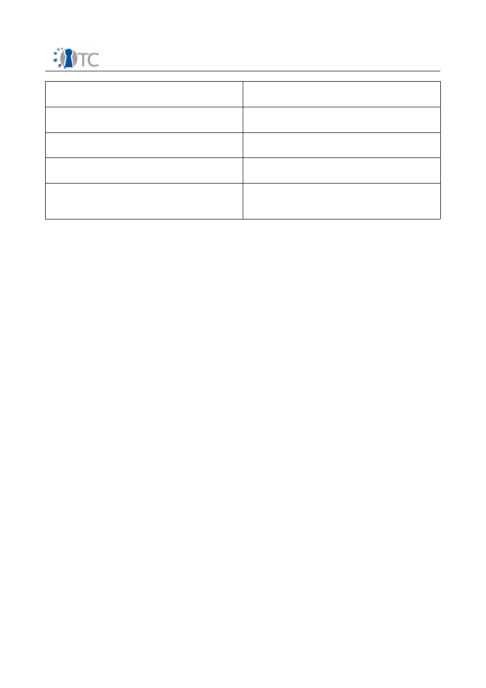
SSL/TLS DAA-enhancement specification
FINAL | 1.20
Complete anonymous TLS session
Standard TLS with
DH_anon
key exchange
method
Server authentication only
Standard TLS with all key exchange
methods but
DH_anon
Client and server authentication
Standard TLS with all key exchange
methods but
DH_anon
Group authentication for client and
standard RSA authentication for server
DAA-enhanced TLS with
RSA
key exchange
method
Group authentication with pseudonym for
client and standard RSA authentication for
server
DAA-enhanced TLS with
RSA
key exchange
method, pseudonym specified by verifier
Table 1: Authentication methods for DAA-TLS capable client and server
In this document the enhancement of TLS with DAA is specified through the definition
of a new hello extension and a new supplemental data entry, both expressed using the
Presentation Language specified and used in [3].
5.2 Summary of DAA-TLS capabilities and protocol flow
DAA is composed of two main protocols: Join where the platform obtains a DAA
credential from an issuer and Sign where the platform performs a DAA signature and a
verifier verifies it.
In this specification only the DAA Sign protocol is used to enhance TLS for client
authentication. The DAA Join protocol is out of scope and not described: it is assumed
as previously run to obtain the DAA credential required by DAA Sign.
The enhancement defined throughout this section (Section 5) is generic to support any
specification of DAA; in the next sections, instead, a binding to a particular DAA
specification and design (i.e. TCG TSS/TPM) is defined.
In this document, the revocation of DAA credentials and revocation checking, whilst
essential elements for authentication, are not considered as part of DAA-TLS and,
therefore, not specified, but left to the application.
The DAA Sign protocol involves a platform and a verifier; there roles are respectively
mapped onto client and server TLS roles. In order to preserve its privacy, the client
authenticates itself by performing a DAA signature verified by the server.
The protocol flow is:
1. The client starts the TLS handshake by sending the
ClientHello
message. The
latter MUST contain an extension to inform the server that the client is capable
of using DAA for authentication.
2. If the server agrees on using DAA for client authentication, it replies to the client
with the
ServerHello
message by sending back the same extension. In the
hello extension, the server also specifies the nonce needed for the DAA
signature; moreover, if the server wants the client to use DAA authentication
with pseudonymous, it MUST also specify the basename that the client MUST
use while performing the DAA signature. If the client does not accept to use the
Open_TC Deliverable 03c.3
11/27
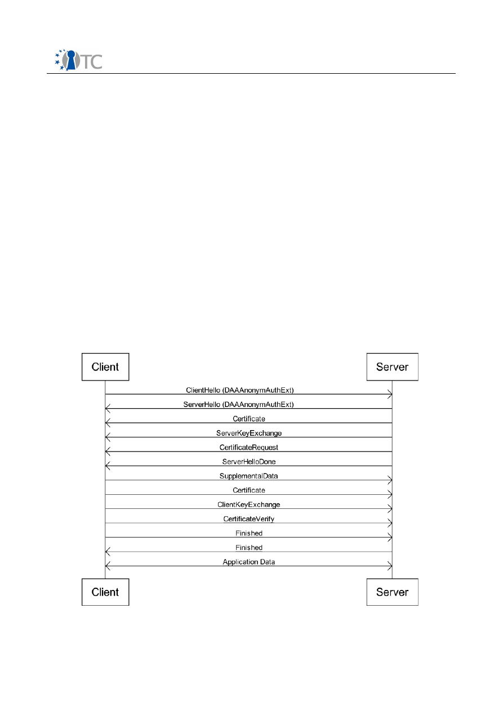
SSL/TLS DAA-enhancement specification
FINAL | 1.20
pseudonym, it MUST terminate the handshake. Otherwise the latter continues
and the DAA authentication for client with the related variant are then agreed
on.
3. The server MUST also request the client authentication by sending the
CertificateRequest
message. This is needed to bind the TLS session to the
DAA signature. See section 5.3 for further details.
4. The client performs the DAA signature over a self-signed client certificate and
sends it to the server using a
SupplementalDataEntry
carried over the
SupplementalData
message. It also contains all data necessary to verify the
DAA signature.
5. The TLS handshake protocol continues according to [3] until its completion.
6. To comply with [5], any action caused by the evaluation of the data carried by
SupplementalData
MUST be performed after the handshake is completed.
Therefore, before accepting any data from the channel, the server MUST
conclude the verification of the DAA signature over the client certificate. This
operation MUST NOT happen during the handshake, but MUST take place
immediately after the handshake is completed. If the verification fails, the
server MUST shut down the TLS channel; otherwise the client is successfully
authenticated and the data exchange over the secure channel can start.
The TLS protocol extended to support the DAA authentication of the client is shown in
Figure 3.
Open_TC Deliverable 03c.3
12/27
Figure 3: TLS extended to support DAA authentication (DAA-TLS)

SSL/TLS DAA-enhancement specification
FINAL | 1.20
5.3 Binding between TLS channel and DAA authentication
In order to complete the client authentication, it is required to provide the binding
between TLS session and DAA authentication. This is done by the client by DAA-signing
a client certificate. For the purposes of this specification, the client certificate must be
a self-signed X.509v3 certificate, DER-encoded, including all extensions required by
TLS specification [3]. In subsequent specifications, a format for DAA signature
algorithm for X.509 certificates may be defined in order to replace the self-signed
client certificate with another DAA-signed. This would imply, however, a revision of the
DAA-TLS protocol as defined in this document.
The binding is provided as follows:
1. The client MUST create a self-signed certificate with no indication about its
identity (e.g. with a random distinguished name) for each TLS handshake.
2. The TLS handshake enhanced with hello extensions and supplemental data must
proceed as described in section 5.1.
3. The server MUST require the client authentication during the handshake by
sending the
CertificateRequest
message. According to [3], the server can
provide a list of accepted certification authorities (CAs); in this case, the client
MUST choose a certificate issued by one of these CAs. Because the client self-
generates a new certificate for each TLS connection, the server MUST send the
CertificateRequest
message with the field
certificate_authorities
empty;
therefore, according to [3], the client MAY send any certificate.
4. The client must DAA-sign the certificate used for TLS client authentication. This
provides the binding between the TLS session and the DAA authentication and
complete the client group authentication. The DAA signature MUST be sent to
the server through the
SupplementalData
message while the self-signed client
certificate MUST be sent to the server through the
Certificate
message.
The DAA protocol MAY also be used to sign other data, in addition to the self-signed
client certificate used for the TLS authentication. This data, if present, depends on the
context of the application. The input of the DAA-signing function must be
SHA1 (TLS_Client_Certificate || AdditionalData)
where
SHA1
is the digest calculation using SHA-1 [10] algorithm,
TLS_Client_Certificate
is the self-signed certificate used for the TLS authentication
and DER-encoded,
||
is the concatenation operator and
AdditionalData
represents
any additional data the application wants to DAA-sign.
An example of possible
AdditionalData
to DAA-sign is an Attestation Identity Key
(AIK) which can be used for a remote attestation of the configuration of the platform;
in this case the AIK must be signed by the DAA to convince the verifier that the AIK
was generated and is used by a genuine TPM. This document neither defines the
encoding of
AdditionalData
nor how it is created, but this might be specified in future
documents.
If no additional data is present, the input of the DAA-signing function must be:
SHA1 (TLS_Client_Certificate)
Open_TC Deliverable 03c.3
13/27

SSL/TLS DAA-enhancement specification
FINAL | 1.20
Any additional data DAA-signed MUST be transported within the supplemental data
message so that it is possible for the verifier to recompute the signed digest.
5.4 Verification of the authentication
The server MUST verify the authentication of the client. This is done by combining the
different data exchanged during the handshake.
First, the server needs to check the correctness of the DAA signature. Besides, once
the DAA signature is verified, it is necessary to verify the binding between the TLS
session and the DAA authentication. In order to do this, the server MUST verify that the
digest signed by the client corresponds to the digest calculated over the data
exchanged during the TLS handshake. This is done by repeating on the server side the
operations previously done on the client side: concatenating the self-signed certificate
received from the client through the
Certificate
message with the additional data, if
present, received from the client through the
SupplementalData
message and
computing the digest over these composed data.
Since the
SupplementalData
message is sent from client to server before the
Certificate
message, the described verification can be done only after receiving the
latter message. Moreover, according to [5], for security reasons the data exchanged as
supplemental data MUST NOT have any effect on the handshake and MUST be
evaluated only after its completion. Therefore the complete verification of the
authentication MUST be performed only after the handshake is completed and the
server MUST NOT accept any data from the TLS channel before the verification is
finished and successful. If the verification fails the server MUST shut down the TLS
channel.
5.5 Definition of the hello extension DAAAuthExt
This document specifies the
DAAAuthExt
hello extension according to [4]. This
extension indicates the intention to use the DAA authentication of the TLS client. When
sent by the latter, it means that the client supports the DAA authentication and wants
to use it for authenticating itself; when it is sent by the server (only as response to the
client), it means that the server agrees on using DAA authentication for the client.
This extension is defined as:
enum {
DAAAuthExt (XX)
} ExtensionType;
struct {
ExtensionType extension_type;
opaque extension_data<0..2^16-1>;
} Extension;
where the type (
XX
) of the extension must be assigned by the IANA through the IETF
Consensus process (see Section 8 for details). The
extension_data
is defined as:
struct {
uint8
daa_tls_version;
Open_TC Deliverable 03c.3
14/27

SSL/TLS DAA-enhancement specification
FINAL | 1.20
DAAAuthParam
daa_auth_param <0..2^7-1>;
} DAAAuthExt;
struct {
uint8
daa_auth_param_type;
opaque daa_auth_param_data <0..2^8-1>;
} DAAAuthParam;
where
daa_tls_version
specifies the version of the DAA-enhancement of TLS and
indicates the set of the
DAAAuthParam
to exchange and in which sequence as well as
the
DAAAuthSupplDataEntry
within the
SupplementalDataEntry
. A DAA-enhancement
conforming to this specification is identified by the value 1. Each parameter
DAAAuthParam
is defined by a type
daa_auth_param_type
and a payload
daa_auth_param_data
and must appear at most once in the list:
enum {
daa_error (0),
daa_binding_version (1),
daa_nonce (2),
daa_basename (3),
(255)
} daa_auth_param_type;
struct {
uint8
daa_auth_param_type;
select (daa_auth_param_type) {
case daa_error:
DAAError;
case daa_binding_version: DAABindingVersion;
case daa_nonce:
DAANonce;
case daa_basename:
DAABasename;
}
} DAAAuthParam;
struct {
uint8 daa_error_code;
} DAAError;
struct {
uint8 daa_binding_version;
} DAABindingVersion;
struct {
uint8 daa_nonce_length;
opaque daa_nonce <0..2^8-1>;
} DAANonce;
Open_TC Deliverable 03c.3
15/27

SSL/TLS DAA-enhancement specification
FINAL | 1.20
struct {
uint8 daa_basename_length;
opaque daa_basename <0..2^8-1>;
} DAABasename;
The semantic of the different parameters which can be carried by
daa_auth_param_data
is defined as follows:
●
DAAError
indicates an error related to the DAA extension occurred on the peer.
This specification defines the following error codes:
enum {
daa_error_disabled (1),
daa_error_binding_version_not_supported (2),
(255)
} error_code;
with the following semantic:
1.
daa_error_disabled
means the server does not accept the DAA extension
for the current session (note that the server ignores the received DAA
extension if it does not support it at all, but SHOULD reply with the DAA
extension if it supports it, but for any reason does not want to accept it).
2.
daa_error_binding_version_not_supported
means the server does not
support the binding version requested by the client.
●
DAABindingVersion
indicates a specific binding (i.e. profile) for which includes a
standardized specification of DAA (like the one proposed by the TCG) and the
specific relations with the DAA enhancement, including the data encoding and
optionally software interfaces to be used.
●
DAANonce
is a DAA's own parameter, the nonce that the client must use during
the DAA signature. This parameter must be always sent by the server (i.e. the
DAA verifier).
●
DAABasename
is a DAA's own parameter, the basename that must be used
during the DAA signature. If the server wants the client to have a
pseudonymous, then this parameter must be present in the
DAAAuthExt
server
hello extension. If the server wants the client to be completely anonymous, then
the server must not send the basename in its
DAAAuthExt
hello extension: at
the signature time the client must then use a randomly generated basename;
the client must not ever send the basename in its
DAAAuthExt
hello extension.
5.6 Definition of the supplemental data entry
DAAAuthSupplDataEntry
This document specifies the
DAAAuthSupplDataEntry
supplemental data entry,
exchanged within the supplemental data message, according to [5].
The supplemental data entry must transport all data needed by the server to verify the
DAA signature performed by the client; therefore, if negotiated, it must only be sent by
client to server and never in the opposite direction.
The structure of the supplemental data entry for DAA authentication is defined as:
Open_TC Deliverable 03c.3
16/27

SSL/TLS DAA-enhancement specification
FINAL | 1.20
enum {
DAA_auth_suppl_data_entry (XX)
} SupplementalDataType;
struct {
SupplementalDataType supp_data_type;
uint16 supp_data_length;
select(SupplementalDataType) {
case DAA_auth_suppl_data_entry: DAAAuthSupplDataEntry;
}
} SupplementalDataEntry;
where the type (
XX
) of the supplemental data entry must be assigned according to [5]
(see Section 8 for details). The payload of the supplemental data entry,
DAAAuthSupplDataEntry
, is defined as:
struct {
DAAAuthSupplDataEntryType
daa_suppl_data_entry_type;
uint16
daa_suppl_data_entry_length;
select(DAAAuthSupplDataEntryType) { }
} DAAAuthSupplDataEntry;
where
daa_suppl_data_entry_length
indicates the length of the data and
daa_suppl_data_entry_type
indicates the type of the data and is defined as:
enum {
daa_signature (0),
daa_additional_signed_data (1),
(255)
} DAAAuthSupplDataEntryType;
struct {
DAAAuthSupplDataEntryType
daa_suppl_data_entry_type;
uint16
daa_suppl_data_entry_length;
select(DAAAuthSupplDataEntryType) {
case daa_signature: DAASignature;
case daa_additional_signed_data: DAAAdditionalSignedData;
}
} DAAAuthSupplDataEntry;
struct {
opaque daa_signature <0..2^16-4>;
} DAASignature;
struct {
opaque daa_additional_signed_data <0..2^16-4>;
} DAAAdditionalSignedData;
where:
Open_TC Deliverable 03c.3
17/27

SSL/TLS DAA-enhancement specification
FINAL | 1.20
●
DAASignature
contains the DAA signature whose encoding depends on the
value of
DAABindingVersion
and it is specified accordingly;
●
DAAAdditionalSignedData
contains the additional signed data whose encoding
depends on the value of
DAABindingVersion
and it is specified accordingly.
6 Specification of TCG TSS/TPM DAA profile for DAA-TLS
To have a complete specification for DAA-TLS it is necessary to define a DAA profile,
i.e. a specific design and data format for DAA; therefore each profile must refer to a
specific version of DAA protocol, standardized through a specification. The profile is
build upon such base specification and must define the (sub)set of features defined in
the base specification to use for DAA-TLS, data encoding/decoding, interactions with
APIs (if any), and any other aspect relevant to have a complete and interoperable
specification for DAA-TLS. Depending on the features selected from the base
specification, when defining a new DAA profile, it might be necessary to add new types
for
DAAAuthParam
and
DAAAuthSupplDataEntry
respectively, thus leading to a new
version of DAA-TLS.
In this section a DAA profile based on TCG TSS [2] and TPM [1] specifications is defined
for the DAA-enhanced TLS protocol specified in Section 5. This profile is identified by
the value 1 to assign to
DAABindingVersion
carried by a
DAAAuthParam
.
6.1 Profile requirements and specification
This profile specifies that all functions and data structures related to the attributes of
DAA credentials and the Anonymity Revocation Authority (ARA) defined by TSS
specification [2] MUST NOT be used with DAA-TLS. Future versions of this DAA profile
may specify the use of such features.
This profile requires a TCG-enabled platform for the TLS client (assuming the
platform
DAA role) equipped with a TPM 1.2 [1] and a TCG Software Stack (TSS) version 1.2
Errata A [2], while the TLS server (assuming the
verifier
DAA role) MUST only have
installed the TSS with the same version as the client.
This profile defines a list of the TSS functions required for DAA-TLS; for each one, the
function prototype and a summary are included.
This profile also defines the data encoding/decoding rules.
Both the DAA-TLS handshake messages and the interactions (i.e. the function calls)
with the TSP Interface exposed by TSS are shown in the combined diagram of Figure 4.
Open_TC Deliverable 03c.3
18/27
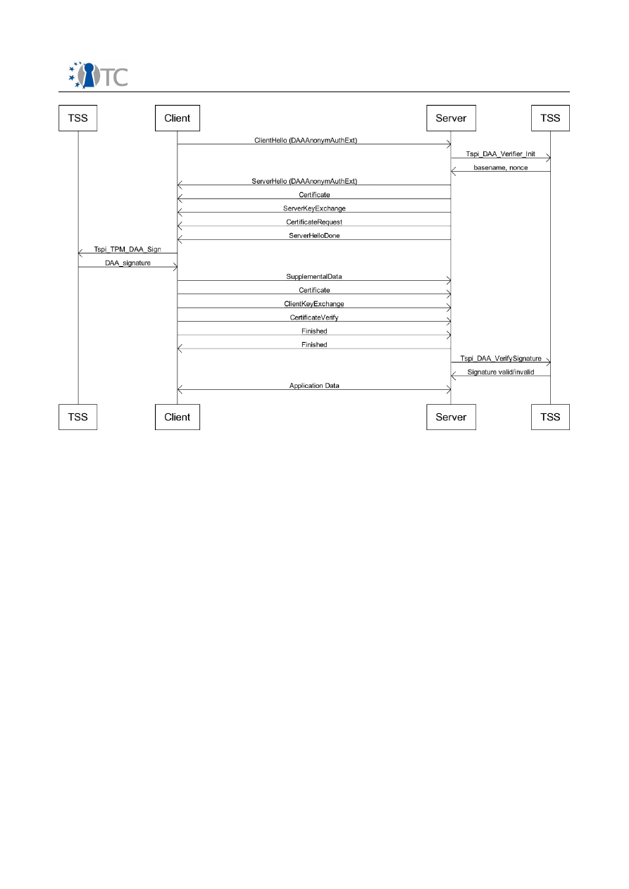
SSL/TLS DAA-enhancement specification
FINAL | 1.20
6.2 Prerequisites for using TSS functions for DAA-TLS
The TSP Interface (TSPI) provided by TSS exposes objects whose instances can be
referenced through handles. Therefore before using an object it is necessary to create
it and obtain the related handle. This can be done using specific functions provided by
TSPI. This profile does not specify which functions must be used: refer to the TSS
specification [2]. For this DAA profile, the necessary objects are:
●
TPM object that allows to use the chip functionalities
●
An object that contains information about the DAA issuer
●
DAA credentials
Furthermore DAA-TLS requires that the platform (i.e. the TLS client) receives DAA
credentials from a DAA issuer. This aspect is not covered in this document and it is
supposed that such credentials are available on the client before the DAA-TLS
handshake begins.
6.3 Nonce and basename generation
The DAA verifier's nonce and the basename MUST be generated by the server and sent
to the client via server hello extension; they must obtained by calling the TSS function
TSS_RESULT Tspi_DAA_Verifier_Init
(
Open_TC Deliverable 03c.3
19/27
Figure 4: TCG TSS/TPM DAA profile for DAA-TLS: TLS handshake and TSS calls

SSL/TLS DAA-enhancement specification
FINAL | 1.20
TSS_HDAA_CREDENTIAL
hDAACredential,
// in
UINT32*
nonceVerifierLength, // out
BYTE**
nonceVerifier,
// out
UINT32*
baseNameLength,
// out
BYTE**
baseName
// out
);
where the first parameter is the handle of the DAA credential; the other parameters
constitute the output of the function and represent respectively the size of the nonce,
the nonce, the size of the basename and the basename.
The nonce MUST be sent to the client as
Nonce
as element of the list of
DAAAuthParam
carried over the
DAAAuthExt
server hello extension.
If the basename is not returned by the function (i.e.
*baseNameLength
is set to 0 and
**baseName
to NULL), then the
Basename
MUST NOT be present as element of the list
of
DAAAuthParam
carried over the
DAAAuthExt
server hello extension.
6.4 DAA signature
The client MUST generate the DAA signature over the self-signed TLS client certificate
and optionally over additional data; the signature MUST be sent to the server via
supplemental data entry. The signature is generated by calling the TSS function
TSS_RESULT Tspi_TPM_DAA_Sign
(
TSS_HTPM
hTPM,
// in
TSS_HDAA_CREDENTIAL
hDAACredential,
// in
TSS_HDAA_ARA_KEY
hARAKey,
// in
TSS_HHASH
hARACondition,
// in
TSS_DAA_SELECTED_ATTRIB*
revealAttributes,
// in
UINT32
verifierNonceLength,
// in
BYTE*
verifierNonce,
// in
UINT32
verifierBaseNameLength,
// in
BYTE*
verifierBaseName,
// in
TSS_HOBJECT
signData,
// in
TSS_DAA_SIGNATURE**
daaSignature
// out
);
where the parameters are:
●
hTPM
is the handle of the TPM object.
●
hDAACredential
is the handle of the object holding the DAA credential.
●
hARAKey
is the handle of the Anonymity Revocation Authority (ARA) object. If it
is NULL, then ARA is not used. This profile requires this parameter set to NULL.
●
hARACondition
is the handle of the object indicating the conditions under which
ARA should reveal the pseudonym. This MUST be NULL if
hARAKey
is NULL. This
profile requires this parameter set to NULL.
●
revealAttributes
represents the attributes the credential owner wants to
reveal to the DAA verifier. This profile requires this parameter set to NULL.
●
verifierBaseName
and
verifierBaseNameLength
are respectively the
Open_TC Deliverable 03c.3
20/27

SSL/TLS DAA-enhancement specification
FINAL | 1.20
basename and its length. If
Basename
was not present as element of the list of
DAAAuthParam
, then
verifierBaseName
MUST be set to NULL and
verifierBaseNameLength
MUST be set to 0; else the basename MUST be set to
the value received by the client as
Basename
element of the list of
DAAAuthParam
carried over the
DAAAuthExt
server hello extension.
●
verifierNonce
and
verifierNonceLength
are respectively the nonce and its
length. The nonce MUST be set to the value received by the client as
Nonce
element of the list of
DAAAuthParam
carried over the
DAAAuthExt
server hello
extension.
●
signData
is the handle of the object containing data to be DAA-signed to bind
the TLS session to the DAA authentication; the type of the handle MUST be
TSS_HHASH
; the data carried by the object MUST be the digest calculated using
SHA-1 algorithm over the self-signed TLS client certificate (DER-encoded) and, if
present, additional data. The details of this calculation are specified in section
5.3.
●
daaSignature
is the output of the function, i.e. the DAA signature performed by
TSS/TPM with the credential handled by
hDAACredential
, over
SignData
using
the nonce received from the server and the basename either received from the
server or randomly generated by the client itself at the signature time.
d
aaSignature
MUST be sent to the server as
DAASignature
element of the list
of
DAAAuthSupplDataEntry
carried over the
SupplementalDataEntry
. The
daaSignature
MUST be encoded in DER format, as detailed in Section 6.6.2.1.
6.5 Signature verification
The server MUST verify the DAA signature received from client through the
supplemental data. The signature is verified by calling the TSS function
TSS_RESULT Tspi_DAA_VerifySignature
(
TSS_HDAA_CREDENTIAL
hDAACredential,
// in
TSS_HDAA_ISSUER_KEY
hIssuerKey,
// in
TSS_HDAA_ARA_KEY
hARAKey,
// in
TSS_HHASH
hARACondition,
// in
UINT32
attributesLength,
// in
UINT32
attributesLength2,
// in
BYTE**
attributes,
// in
UINT32
verifierNonceLength,
// in
BYTE*
verifierNonce,
// in
UINT32
verifierBaseNameLength,
// in
BYTE*
verifierBaseName,
// in
TSS_HOBJECT
signData,
// in
TSS_DAA_SIGNATURE*
daaSignature,
// in
TSS_BOOL*
isCorrect
// out
);
where the parameters are:
●
hDAACredential
is the handle of the object holding the DAA credential.
●
hIssuerKey
is the handle of the object holding the issuer public key.
Open_TC Deliverable 03c.3
21/27

SSL/TLS DAA-enhancement specification
FINAL | 1.20
●
hARAKey
is the handle of the Anonymity Revocation Authority (ARA) object. If it
is NULL, then ARA is not used. This profile requires this parameter set to NULL.
●
hARACondition
is the handle of the object indicating the conditions under which
ARA should reveal the pseudonym. This MUST be NULL if
hARAKey
is NULL. This
profile requires this parameter set to NULL.
●
attributesLength
,
attributesLength2
and
attributes
are respectively the
number of attributes revealed by the owner of the DAA credential, the size in
bytes of each attribute and the list of the revealed attributes. This profile
requires the first two parameters set to 0 and the last one set to NULL
●
verifierBaseName
and
verifierBaseNameLength
are respectively the
basename and its length used for the signature. If the function
Tspi_DAA_VerifyInit
previously called by the server returned a basename,
then
verifierBaseName
and
verifierBaseNameLength
must be set to
corresponding values returned by
Tspi_DAA_VerifyInit
. Instead, if the latter
returned NULL, then
verifierBaseName
and
verifierBaseNameLength
must be
set respectively to NULL and 0.
●
verifierNonce
and
verifierNonceLength
are respectively the nonce and its
length used for the signature and must be set to the corresponding values
returned by the function
Tspi_DAA_VerifyInit
previously called by the server.
●
signData
is the handle of the object containing data DAA-signed by the client to
bind the TLS session to the DAA authentication. The type of the handle MUST be
TSS_HHASH
; this object MUST be created by computing the SHA-1 digest over the
TLS client certificate (DER-encoded) and, if present, additional data. The details
of this calculation are specified in section 5.3.
●
daaSignature
is the actual signature to be verified, received by the client as
DAASignature
element of the list of
DAAAuthSupplDataEntry
carried over the
SupplementalDataEntry
. The
DAASignature
MUST be decoded from DER
format, as detailed in Section 6.6.2.1.
●
isCorrect
is the function output and indicates if the verification of the DAA
signature was successful.
6.6 Data encoding/decoding
6.6.1 Basic data types
According to [2], Section 4.3.4.29.10, all DAA-related data structures used as
input/output to/from TSS are encoded with the big endian (or network order byte)
format, with the Most Significant Byte at the far left of a multi-byte data unit (e.g.
buffer or word) and the Least Significant Byte at the far right. Since data structures
can contain other embedded structures but are, at the end, made up of elementary
data, also the latter are encoded with the big endian format.
According to [3], Section 4, all data types defined using the Presentation Language for
TLS (like
DAAAuthExt
hello extension and supplemental data entry) and holding multi-
byte values are encoded with the big endian (or network order byte) format.
Therefore converting elementary data as buffers or words from/to TSS encoding
to/from TLS encoding does not require any adaptation of the order byte but only, if
Open_TC Deliverable 03c.3
22/27

SSL/TLS DAA-enhancement specification
FINAL | 1.20
necessary, the adjustment of the length in bytes.
6.6.2 Complex types
6.6.2.1 DAA Signature (normative)
The DAA Signature, sent by the server as
DAASignature
element of the list of
DAAAuthSupplDataEntry
MUST be BER-encoded according to the ASN.1 definition of
the Portable Data specified in the following. This definition is required in this document
because in Section 3.23 of [2] there is lack of Portable Data definition for DAA
Signature.
Each member of the TSS structure must be individually re-encoded to BER and vice-
versa. If the member is not an elementary data, it MUST be recursively expanded until
all elementary data are exposed: then they can be re-encoded as the corresponding
members for the target encoding rules.
With respect to the DAA Signature structure as defined in Section 3.12 of [2], in the
following definition the unnecessary fields are not present (including those related to
the credential attributes, which are not supported in this profile):
DaaSignature ::= SEQUENCE
{
versionInfo
TssVersion,
zeta
INTEGER,
-- z
capitalT
INTEGER,
-- T
challenge
INTEGER, -- c
nonceTpm
INTEGER, -- nT
sV
INTEGER,
-- sV
sF0
INTEGER,
-- sF0
sF1
INTEGER,
-- sF1
sE
INTEGER,
-- sE
nonceVerifier
INTEGER,
-- nV
}
TssVersion ::= SEQUENCE
{
major
INTEGER,
minor
INTEGER,
revMajor
INTEGER,
revMinor
INTEGER
}
Open_TC Deliverable 03c.3
23/27

SSL/TLS DAA-enhancement specification
FINAL | 1.20
7 Security considerations
7.1 Endorsement Key (EK) exposure
TCG design ([1,2]) of DAA protocol gives the verifier assurance about the genuineness
of the TPM making DAA signatures. By issuing the DAA credentials, the issuer
guarantees that the TPM is genuine.
To enforce this behavior, once the issuer verified the credentials (e.g. EK certificate)
provided by the platform requesting a DAA credential, the issuer creates the latter and
encrypts it with the public part of the Endorsement Key (EK) of the TPM requesting the
credential. This procedure guarantees that only the TPM owning the private part of the
Endorsement Key can decrypt, install and use the received DAA credential.
This procedure has the drawback that the issuer gets to know the public part of the EK:
being unique to every TPM, the EK can be used as a identifier to track TPM operations
that involve the EK (i.e. requesting other DAA credentials or an AIK certificate). For this
reason, the issuer must be a trusted third party that guarantees to the verifier that the
genuineness of the TPM is checked and to the platform the sensitive data (i.e. the
public part of the EK) are kept secure.
While this is not a problem in the reference scenario (where the company is the
issuer), it may become a problem in more open scenarios; in these latter cases, the
platform must carefully choose the DAA issuer.
7.2 Basename and DAA signature
In some scenarios, the basename or the DAA signature may be considered sensitive
data. For instance, a man in the middle can forge the basename by modifying the
server hello message. In this case it can persuade the client to make a DAA signature
over a chosen basename. If the basename was chosen to be fixed, it is possible for the
attacker to track successive DAA signatures of the same platform over the same
basename.
The TLS protocol allows both the client and the server to detect the attack, but only
after the DAA signature was made. This attack can be detected when the finished
messages are exchanged: these messages contain the hash of all the messages
exchanged during the handshake; if the attacker modified the server hello, the server
will compute a hash different from the hash computed by the client, leading to the
discover of the attack.
Furthermore, by listening to the channel in the case of a pseudonymous
authentication, an eavesdropper could be able to link together different DAA
signatures generated by the same platform. Listening on the channel leads the
attacker to know both the basename and the DAA signature; in the case of
pseudonymity, these two data are enough to link different signatures made by the
same platform. Differently from the previous attack, this attack can not be detected by
the client nor the server and, hence, it puts at risk the privacy of the client.
For these reasons in some scenarios, the data exchanged within the supplemental
data message must be protected. [5] asserts that such protection must be provided
through the use of a double handshake. The first handshake is a regular one that only
aims to the creation of a secure channel. Next, within the secure channel a second
Open_TC Deliverable 03c.3
24/27

SSL/TLS DAA-enhancement specification
FINAL | 1.20
handshake happens; this latter handshake actually carries the hello extensions and the
supplemental data necessary for the anonymous authentication.
Note that in the case of a double handshake, the first handshake must be done in a
way that exposes no information about the peer that must be authenticated
anonymously using the DAA during the second handshake.
8 IANA considerations
The hello extensions and the supplemental data entries are defined by their types. The
hello extensions types MUST be assigned by the IANA through a IETF consensus
procedure, while the supplemental data specification allows the use of private types
for the supplemental data entries.
Because each supplemental data entry MUST be negotiated using the hello extensions
mechanism, it is not actually possible to use the private types for the supplemental
data entry defined in this document.
For this reason this document does not defines the types of the hello extension nor the
type of the supplemental data entry.
9 Final considerations (IPsec and IKE/ISAKMP)
The IKE/ISAKMP protocols are part of the IPsec protocols family and are used to
authenticate the peers, to negotiate the security services and the keys.
As for TLS protocol, DAA can be used to enhance the Internet Key Exchange protocol
(IKEv1/ISAKMP and IKEv2) to add a group authentication scheme to preserve the
platform privacy while using the security protocols of the IPsec family.
Open_TC Deliverable 03c.3
25/27
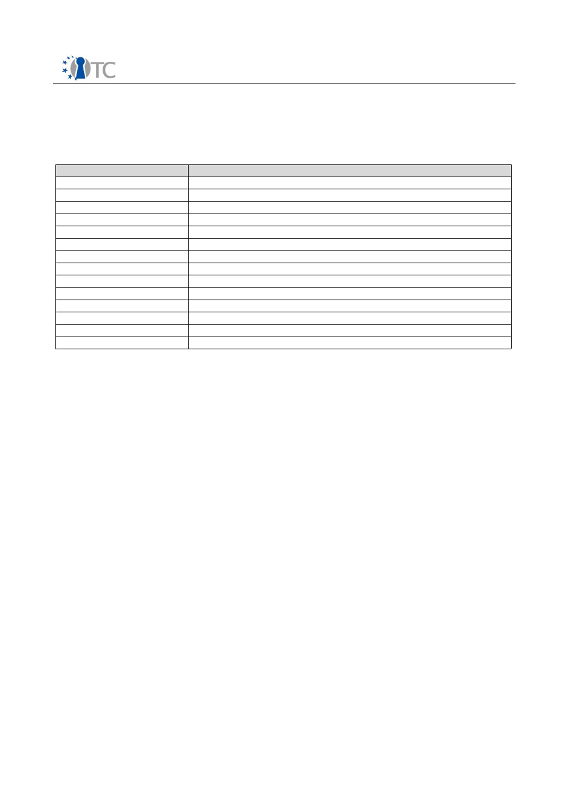
SSL/TLS DAA-enhancement specification
FINAL | 1.20
10 List of abbreviations
Listing of term definitions and abbreviations used in this document (IT expressions and
terms from the application domain).
Abbreviation
Explanation
AIK
Attestation Identity Key
ARA
Anonymity Revocation Authority
ASN.1
Abstract Syntax Notation 1
BER
Basic Encoding Rules
CA
Certification Authority
DAA
Direct Anonymous Attestation
DER
Distinguished Encoding Rules
EK
Endorsement Key
PCA
Privacy CA
SHA-1
Secure Hash Algorithm 1
TCG
Trusted Computing Group
TLS
Transport Layer Security
TPM
Trusted Platform Module
TSS
TCG Software Stack
11 Referenced Documents
/1/ TCG TPM Main Specification (parts 1,2,3)
July 9, 2007,
Version 1.2 Level 2 Revision 103
/2/ TCG Software Stack (TSS) Specification
March 7, 2007,
Version 1.2, Level 1, Errata A
/3/ IETF RFC 4346, The Transport Layer Security (TLS) Protocol Version 1.1
April, 2006
/4/ IETF RFC 4366, Transport Layer Security (TLS) Extensions
April, 2006
/5/ IETF RFC 4680, TLS Handshake Message for Supplemental Data
September, 2006
/6/ Direct Anonymous Attestation
Ernie Brickell, Jan Camenisch, Liqun Chen
CCS '04: 11th ACM conference on Computer and Communications Security
2004
/7/ ITU-T Rec. X.208, Specification of Abstract Syntax Notation One (ASN.1)
1988
/8/ ITU-T Recommendation X.690, Information Technology – ASN.1 encoding rules:
Open_TC Deliverable 03c.3
26/27

SSL/TLS DAA-enhancement specification
FINAL | 1.20
Specification of Basic Encoding Rules (BER), Canonical Encoding Rules (CER) and
Distinguished Encoding Rules (DER)
1997
/9/ ITU-T Recommendation X.509, Information technology – Open Systems
Interconnection – The Directory: Public-key and attribute certificate frameworks
/10/ IETF RFC 3174, US Secure Hash Algorithm 1 (SHA1)
September, 2001
Open_TC Deliverable 03c.3
27/27
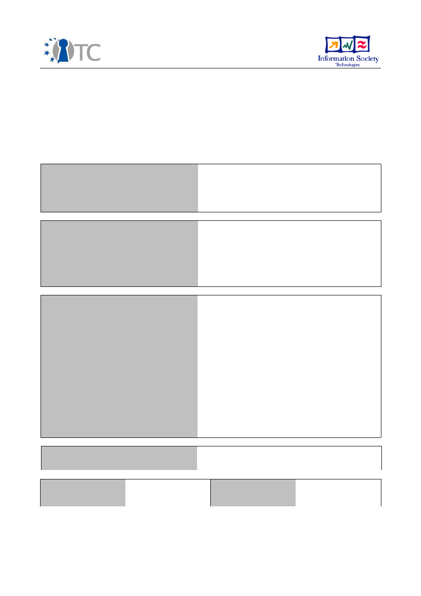
D03c.6 OpenSSL engine/DAA enhancement
design specification
Project number
IST-027635
Project acronym
Open_TC
Project title
Open Trusted Computing
Deliverable type
Internal deliverable
Deliverable reference number
IST-027635/D03c.6/FINAL | 2.00
Deliverable title
OpenSSL engine/DAA enhancement design
specification
WP contributing to the deliverable
WP03c
Due date
Oct 2007 - M24
Actual submission date
May 15, 2009 (major revision)
Responsible Organisation
POL
Authors
Emanuele Cesena, Davide Vernizzi, Gianluca
Ramunno
Abstract
This deliverable describes which
modifications must be done to OpenSSL in
order to support the anonymous
authentication made through the DAA
protocol.
Keywords
OPEN_TC, TPM, TLS, OpenSSL, DAA
Dissemination level
Public
Revision
FINAL | 2.00
Instrument
IP
Start date of the
project
1
st
November 2005
Thematic Priority
IST
Duration
42 months

OpenSSL engine/DAA enhancement design specification
FINAL | 2.00
Table of Contents
1 Introduction.................................................................................................................5
2 Architecture overview.................................................................................................5
3 TLS Hello Extensions and Supplemental Data.............................................................8
3.1 Architecture............................................................................................................8
3.1.1 Overview............................................................................................................8
3.1.2 Data Structures................................................................................................10
3.1.3 Workflow..........................................................................................................11
3.2 Application Programming Interface......................................................................13
3.2.1 Interface..........................................................................................................13
3.2.2 Application Interface........................................................................................19
3.3 Examples..............................................................................................................20
3.3.1 Hello World!.....................................................................................................20
3.3.2 Supplemental Data..........................................................................................22
4 Direct Anonymous Attestation..................................................................................24
4.1 Architecture..........................................................................................................24
4.1.1 Overview..........................................................................................................24
4.1.2 Data Structures................................................................................................25
4.1.3 Workflow..........................................................................................................27
4.2 Application Programming Interface......................................................................29
4.2.1 Application Interface........................................................................................29
4.3 Examples..............................................................................................................32
5 TLS DAA-Enhancement.............................................................................................33
5.1 Architecture..........................................................................................................33
5.1.1 Overview..........................................................................................................33
5.1.2 Data Structures................................................................................................34
5.1.3 Implementation Details....................................................................................34
5.1.3.1 Core.............................................................................................................34
5.1.4 Workflow..........................................................................................................35
5.1.5 Other Features.................................................................................................37
5.1.5.1 Support to TLS Sessions Resumption..........................................................37
5.1.5.2 Legacy Mode...............................................................................................37
5.2 Application Programming Interface......................................................................38
5.2.1 Application Interface........................................................................................38
5.3 Example...............................................................................................................39
5.3.1 Common Modifications.....................................................................................39
5.3.2 Modifications on the Client..............................................................................40
5.3.3 Modifications on the Server.............................................................................40
5.3.4 Running the commands...................................................................................41
6 Implementation of the Specification of TCG TSS/TPM DAA Profile for DAA-TLS.........42
6.1 Architecture..........................................................................................................42
6.1.1 Overview..........................................................................................................42
6.1.2 Implementation Details....................................................................................43
6.1.2.1 DAA_METHOD..............................................................................................44
6.1.3 Workflow..........................................................................................................46
6.2 Examples..............................................................................................................48
7 List of abbreviations..................................................................................................49
8 Referenced Documents.............................................................................................49
Open_TC Deliverable D03c.6
2/61

OpenSSL engine/DAA enhancement design specification
FINAL | 2.00
9 Appendix. Code Documentation................................................................................51
9.1 General TLS Extensions framework......................................................................51
9.1.1 Patch................................................................................................................51
9.1.2 Core.................................................................................................................53
9.1.3 Interface..........................................................................................................54
9.1.4 Application Interface........................................................................................54
9.2 Direct Anonymous Attestation..............................................................................54
9.2.1 Implementation................................................................................................54
9.2.2 Method Interface..............................................................................................58
9.2.3 Application Interface........................................................................................60
9.3 TLS DAA-Enhancement.........................................................................................60
9.3.1 Core.................................................................................................................60
9.3.2 Application Interface........................................................................................60
9.4 Engine TPM-DAA...................................................................................................60
9.4.1 TSS Binding Utilities.........................................................................................60
9.4.2 DAA_METHOD..................................................................................................61
Open_TC Deliverable D03c.6
3/61

OpenSSL engine/DAA enhancement design specification
FINAL | 2.00
List of figures
Figure 1: System Architecture Overview.........................................................................6
Figure 2: TLS Hello Extensions and Supplemental Data Overview..................................9
Figure 3: TLS Hello Extensions and Supplemental Data Data Structure........................10
Figure 4: TLS Hello Extensions and Supplemental Data Workflow................................12
Figure 5: Direct Anonymous Attestation Architecture Overview...................................24
Figure 6: Direct Anonymous Attestation Data Structure...............................................26
Figure 7: Direct Anonymous Attestation Sign Workflow................................................28
Figure 8: Direct Anonymous Attestation Verify Workflow..............................................29
Figure 9: TLS DAA-Enhancement Architecture Overview..............................................33
Figure 10: TLS DAA-Enhancement Workflow.................................................................36
Figure 11: Implementation of the specification of TCG TSS/TPM DAA profile for DAA-TLS
Overview.......................................................................................................................42
Figure 12: TCG TSS/TPM DAA Profile for DAA-TLS Workflow..........................................47
Open_TC Deliverable D03c.6
4/61

OpenSSL engine/DAA enhancement design specification
FINAL | 2.00
1 Introduction
Secure channels allow two or more entities to communicate securely over insecure
networks using cryptographic primitives to provide confidentiality, integrity and
authentication of network messages. Trusted Computing (TC) technology extends the
network protection to the peers involved in the communication. TC, in facts, allows a
platform with TC-enabled hardware to provide cryptographic proofs about its behavior.
Using these information, the counterpart can be guaranteed about the security of the
message not only while it is transmitted, but also after it is received on the TC-
platform.
Among the primitives available to a TC-platform, Direct Anonymous Attestation (DAA)
[7] is a privacy-friendly protocol that was designed to overcome the privacy issues of
the privacy CA. In particular, the main problem related with the use of a privacy CA, is
that it is possible for the privacy CA to disclose sensitive data that could allow a third
party to link different remote attestation made by the same platform and, therefore,
breaking the platform's privacy. DAA overcomes this problem using a zero-knowledge
proof.
In [1], a TLS DAA-Enhancement is proposed to exploit DAA as a mechanism to achieve
(client) anonymous authentication. Furthermore, based on the Trusted Platform
Module (TPM) and Trusted Software Stack (TSS), a TCG TSS/TPM profile is specified to
exploit the DAA-related functions available in the TC technology. This document
describes an implementation of the TLS DAA-Enhancement, including the TCG TSS/TPM
profile.
2 Architecture overview
The implementation of SSL/TLS DAA-enhancement as specified in [1] is organized as a
set of components that act at different layers, beginning from the lower cryptographic
level, up to the TLS protocol enhancement level. The design through components is
motivated by:
●
code modularity: smaller components with a defined interface allow applications
to select only the required features, avoiding unnecessary growth of their code.
●
future reuse: components may be shared among other applications or higher
layer components that exploit the provided capabilities.
●
support for real-world applications: both DAA-aware and legacy applications
may exploit the TLS DAA-enhancement to take advantage of the (client)
anonymous authentication.
●
security-oriented design: code modularity and reuse, as well as best practice
and policy for configuring applications, result in an added value with respect to
the security provided by the code. Furthermore it is possible to expect that
lower layer components may be integrated in the mainstream libraries, thus
bringing the code to be publicly shared and evaluated.
OpenSSL supports engines as a way to provide alternative implementations for a
cryptographic primitive, usually to exploit cryptographic hardware accelerators.
Engines are used to provide two different implementations of the DAA protocol: the
first one exploits the TPM/TSS capabilities, the latter is pure software and implements
a newer version of the protocol [9].
Open_TC Deliverable D03c.6
5/61
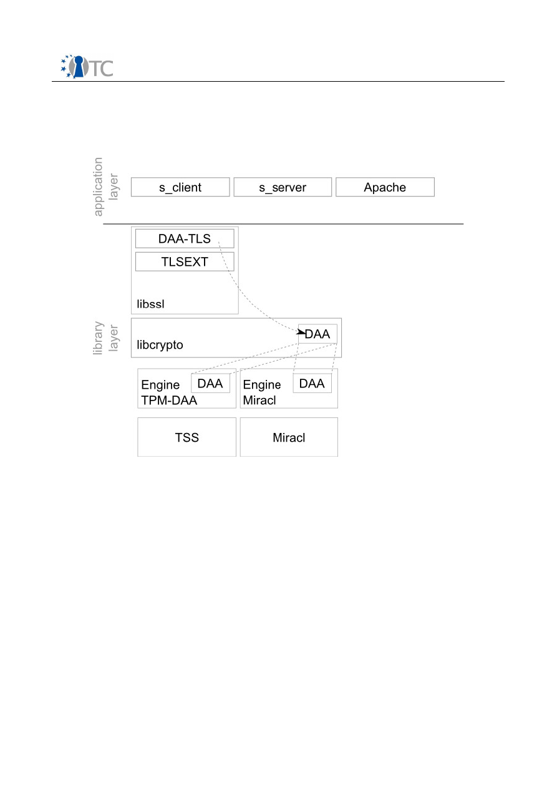
OpenSSL engine/DAA enhancement design specification
FINAL | 2.00
The whole implementation has been done and tested with OpenSSL v0.9.9, snapshot
20081204.
Figure 1 presents the overall architecture.
In more detail:
●
TLS Hello Extensions and Supplemental Data (TLSEXT)
is a framework for
supporting generic TLS Hello Extensions (RFC 4366) [5] and Supplemental Data
(RFC 4680) [6] into OpenSSL's
libssl
. Both TLS Hello Extensions and
Supplemental Data are needed for the TLS DAA-enhancement. The framework is
intended to help developers who want to add support for new TLS Extensions
into OpenSSL. This is detailed in Section 3.
●
Direct Anonymous Attestation (DAA)
is an interface to implement the Sign
and Verify algorithms of Direct Anonymous Attestation within the OpenSSL
libcrypto
. According to the original design of DAA, the interface considers the
Sign algorithm as a two-parties protocol between the Host and the TPM. The
interface is designed to provide DAA support in any context
libcrypto
is
available, not only for the TLS DAA-enhancement. A default implementation is
included; the use of engines allows to override the default implementation. This
is detailed in Section 4.
●
TLS DAA-Enhancement (DAA-TLS)
is an implementation of the TLS DAA-
Enhancement Specification [1] to enhance OpenSSL's
libssl
. It is build upon
Open_TC Deliverable D03c.6
6/61
Figure 1: System Architecture Overview

OpenSSL engine/DAA enhancement design specification
FINAL | 2.00
TLSEXT and uses primitives offered by DAA. It also provides an interface for
applications that wants to take advantage of the (client) anonymous
authentication. Furthermore, a special compile-time option allows building it in
legacy mode, that allows unmodified applications to exploit the TLS DAA-
Enhancement as well. This is detailed in Section 5.
●
Engine Implementing the Specification of TCG TSS/TPM DAA Profile
(Engine TPM-DAA)
is an OpenSSL engine that implements the TCG Profile of
the TLS DAA-enhancement, according to [1]. It requires a Trusted Software
Stack capable of supporting the DAA protocol. As DAA-TLS is implemented
within OpenSSL, the engine manages conversion between OpenSSL data
structures and TSS' ones. This is detailed in Section 6.
●
Engine Implementing the Asymmetric Pairing-based DAA (Engine
Miracl)
is an OpenSSL engine that implements a purely software version of
DAA, according to [9]. This version is based on asymmetric pairing over elliptic
curves and the engine exploits the Miracl library [10] as a software
cryptographic accelerator to compute pairing. This engine is not described in
more detail within this document, but it is included in the architecture to give a
more comprehensive overview. Furthermore, it is part of the demonstrator of
the TLS DAA-enhancement.
●
Application layer
is the collection of software that demonstrates the use of the
TLS DAA-enhancement. Modified versions of OpenSSL tools
s_client
and
s_server
are able to communicate with DAA-TLS through its interface (e.g. set
platform/issuer credentials). An unmodified version of Apache web server with
mod_ssl demonstrates the possibility to use the framework with legacy
applications. The application layer is not described in more detail within this
document, but it is included in the architecture to give a more comprehensive
overview. Furthermore, it is part of the demonstrator of the TLS DAA-
enhancement.
Open_TC Deliverable D03c.6
7/61

OpenSSL engine/DAA enhancement design specification
FINAL | 2.00
3 TLS Hello Extensions and Supplemental Data
3.1 Architecture
This is a framework for supporting generic TLS Hello Extensions (RFC 4366) [5] and
Supplemental Data (RFC 4680) [6]. It is intended to help developers who want to add
support for new TLS Extensions into OpenSSL.
The framework allows to embed new TLS Extensions into the OpenSSL
libssl
; this
feature becomes especially useful when it is required to exploit the framework with
legacy applications not designed to support the TLS Extensions. Furthermore it is
designed to let the developers define a new TLS Extension, dynamically load, create
and handle it at application layer; in this last case, it is possible to support applications
that were designed to support the TLS Extensions natively.
The framework treats every TLS Extension as an object, with data to be exchanged
during the handshake and methods that implement the extension logic. Supplemental
Data are part of such objects, to adhere with RFC 4680:
Information provided in a supplemental data object MUST be intended to
be used exclusively by applications and protocols above the TLS
protocol layer. Any such data MUST NOT need to be processed by the TLS
protocol.
By having this unified view for extensions, it is easy to support once fr all some of the
requirements imposed by RFCs, for instance RFC 4366:
●
There MUST NOT be more than one extension of the same type.
●
In the event that a client requests additional functionality
using the extended client hello, and this functionality is not
supplied by the server, the client MAY abort the handshake.
3.1.1 Overview
The code is organized in four main modules, as shown in Figure 2.
Open_TC Deliverable D03c.6
8/61
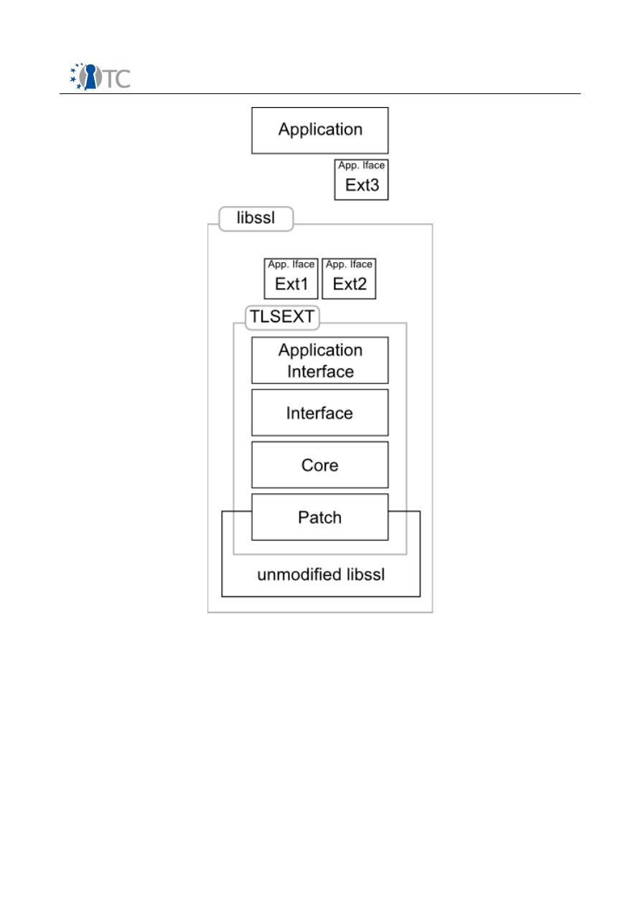
OpenSSL engine/DAA enhancement design specification
FINAL | 2.00
●
Patch.
The lower layer contains the changes to the existing code of the
unmodified
libssl
necessary to handle TLS Extensions and support the new
SupplementalData handshake message.
For simplicity, the patch to the existent code is limited to single function calls,
which carry out all the necessary computation.
OpenSSL allows to disable all the TLS Extensions at compilation time by defining
the macro
OPENSSL_NO_TLSEXT
. This framework extends this concept supporting
the macro
OPENSSL_NO_TLSEXT_GENERAL
which disables the framework at
compilation time. Moreover, the macro
OPENSSL_NO_TLSEXT
automatically forces
OPENSSL_NO_TLSEXT_GENERAL
.
●
Core.
The middle layer contains the data structures and the core functionality.
Open_TC Deliverable D03c.6
9/61
Figure 2: TLS Hello Extensions and
Supplemental Data Overview
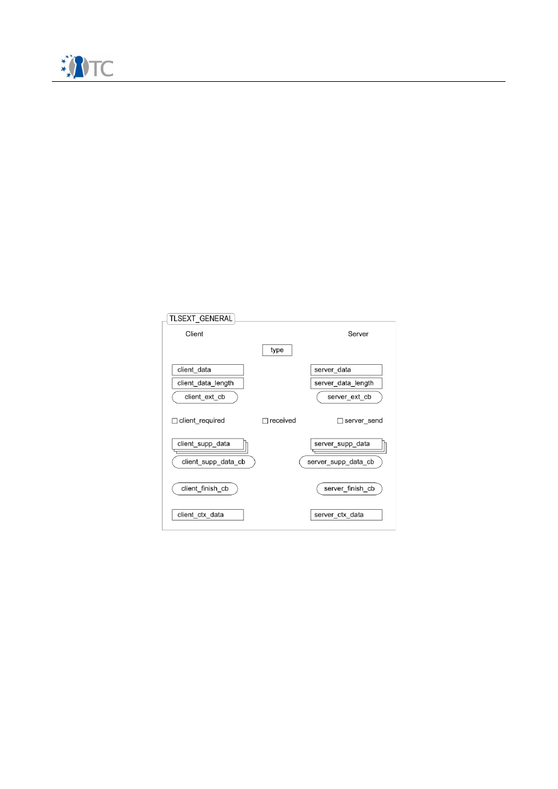
OpenSSL engine/DAA enhancement design specification
FINAL | 2.00
●
Interface.
The upper layer consists in the interface available to programmers to
write new TLS Extensions (see Section
3.3
).
●
Application Interface.
This module contains portions of the Interface that are
common to all the TLS Extension and are useful for the application: for instance
this code offers the possibility for the client to require the use of an extension,
or abort the handshake if the server ignores it). Even if this code is common to
all the TLS Extension, it SHOULD NOT be directly accessed by applications, but it
SHOULD be wrapped by any extension which provide such functionalities to the
application layer.
3.1.2
Data Structures
The OpenSSL
SSL
object is extended with a
STACK_OF TLSEXT_GENERAL
.
A
TLSEXT_GENERAL
is an object that contains data related to a TLS Extension (in the
meaning of the general framework) as well as callback functions to implement the
logic of the extension.
Figure 3 gives an overall idea.
The object has two parts, quite symmetric: one for the Client data and one for the
Server.
For what concerns data, the two parts will contains data to be sent or received
depending on the object is instantiated on the client or server side.
In more detail:
●
type
is the type of the extension (it must be the same on client and server).
●
client_data
is the payload the client will send (and the server will receive)
through the TLS Hello Extension (ClientHello handshake message).
●
client_data_length
is the length of the payload.
Open_TC Deliverable D03c.6
10/61
Figure 3: TLS Hello Extensions and
Supplemental Data Data Structure

OpenSSL engine/DAA enhancement design specification
FINAL | 2.00
●
client_supp_data
is a stack of
SUPP_DATA_ENTRY
objects, each describing in
TLV (type-length-value) format a supplemental data entry related to this
extension. The client sends (and the server receives) this data through the
SupplementalData handshake message.
The same (but symmetric) is for server data.
Callback functions (
client_ext_cb()
,
client_supp_data_cb()
,
client_finish_cb()
, respectively for the server) are used to implement the logic of
the TLS Extension. These are automatically invoked by the framework at the proper
time (see Section 3.1.3 for more details) and they are only handled on the side the
object is instantiated, i.e. client's callback functions are handled when the object is
instantiated on the client while server's callback functions are only handled on the
server.
Similarly, the context data (
client_ctx_data
, respectively
server_ctx_data
) to
exchange information from/to the callbacks, SHOULD be used only on the correct side.
Finally, there are three flags:
●
client_required
tells if the client has to abort in case the server ignores the
extension.
●
server_send
tells if the server should send this extension (see Section 3.1.3 for
more details).
●
received
tells if the extension has been received. It is for internal use, both to
check for duplicates and to have a list of the negotiated extensions.
3.1.3
Workflow
The workflow of the framework with respect to the TLS Handshake is depicted in Figure
4.
Open_TC Deliverable D03c.6
11/61
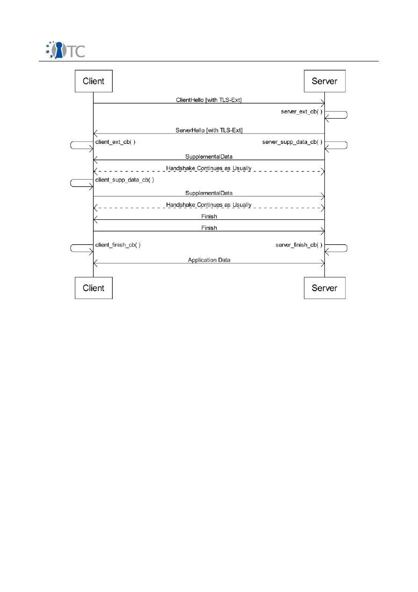
OpenSSL engine/DAA enhancement design specification
FINAL | 2.00
1. If the Client registers a
TLSEXT_GENERAL
object, then it is sent as part of the TLS
Hello Extension within the ClientHello handshake message.
The Server, on the contrary, is supposed to register all the
TLSEXT_GENERAL
objects it wants to handle
2. When the Server receives the ClientHello, it parses the TLS Hello Extensions and
- if any is handled by the framework - it invokes the related
server_ext_cb()
.
This callback is in charge of taking the decision to reply or not to the extension,
by setting the flag
server_send
.
3. The Server replies with the ServerHello message containing the accepted TLS
Hello Extensions, for which the Client invokes the
client_ext_cb()
.
4. The Client verifies that every extension with
client_required
flag set to true
has been received. If not, it aborts the handshake.
5. For each extension requiring supplemental data on server side, the server calls
the
server_supp_data_cb()
callback function which is in charge of creating the
supplemental data payload. This data is pushed within the
server_supp_data
stack. Finally, if the
server_supp_data
stack is not empty, the server
SupplementalData handshake message is sent.
6. The handshake continues until the ServerDone message.
7. For each extension requiring supplemental data on client side, the client calls
the
client_supp_data_cb()
callback function which is in charge of creating the
Open_TC Deliverable D03c.6
12/61
Figure 4: TLS Hello Extensions and Supplemental Data Workflow

OpenSSL engine/DAA enhancement design specification
FINAL | 2.00
supplemental data payload. This data is pushed within the
client_supp_data
stack. Finally, if the
client_supp_data
stack is not empty, the client
SupplementalData handshake message is sent.
8. The handshake continues until its conclusion.
9. After the handshake is terminated the Client (respectively the Server), invokes
the
client_finish_cb()
(respectively the
server_finish_cb()
), for each
negotiated extension. These callback functions are in charge of evaluating the
supplemental data received.
3.2 Application Programming Interface
3.2.1 Interface
These functions are needed by the developers that want to write new TLS Extensions.
TLSEXT_GENERAL* SSL_TLSEXT_GENERAL_new (int
type
)
Creates a new extension of type
type
.
Parameters:
type
extension type (SHOULD be defined by IANA)
Returns:
the extension created
SUPP_DATA_ENTRY* SSL_TLSEXT_GENERAL_client_supp_data_new (TLSEXT_GENERAL
*
ext
, int
type
)
Creates a new supplemental data entry of type
type
and pushes it in the
Client
stack of a TLSEXT_GENERAL object
ext
.
Parameters:
ext
TLSEXT_GENERAL object containing the Supplemental Data stack
type
extension type (SHOULD be defined by IANA)
Returns:
the supplemental data entry created
SUPP_DATA_ENTRY* SSL_TLSEXT_GENERAL_server_supp_data_new (TLSEXT_GENERAL
*
ext
, int
type
)
Creates a new supplemental data entry of type
type
and pushes it in the
Server
stack of a TLSEXT_GENERAL object
ext
.
Parameters:
ext
TLSEXT_GENERAL object containing the Supplemental Data stack
type
extension type (SHOULD be defined by IANA)
Returns:
the supplemental data entry created
int SSL_TLSEXT_GENERAL_init_cb (TLSEXT_GENERAL *
ext
, void *
cb_ptr
)
Sets the init callback function for a given extension.
The callback function will be executed at the moment of the initialization of the
Open_TC Deliverable D03c.6
13/61

OpenSSL engine/DAA enhancement design specification
FINAL | 2.00
extension.
Parameters:
ext
extension to associate with the callback
cb_ptr
pointer to the callback function
Returns:
0 success
-1 error
TLSEXT_GENERAL* SSL_TLSEXT_GENERAL_init (SSL *
s
, TLSEXT_GENERAL *
ext
)
Initialization function that makes basic checks common to all the extension.
The server extensions are enabled by default, while the client extensions are
not. It SHOULD be called by the constructor of each extension.
Parameters:
ext
extension to initialize
s
a pointer to a SSL object
Returns:
the extension success
NULL error
TLSEXT_GENERAL* SSL_CTX_tlsext_get_extension (SSL_CTX *
ctx
, int
type
)
Returns a pointer to an extension
Parameters:
ctx
a pointer to a SSL_CTX object
type
the type of the extension to be returned
Returns:
the extension success
NULL error
int SSL_TLSEXT_GENERAL_client_data (TLSEXT_GENERAL *
ext
, unsigned int
length
, unsigned char *
data
)
Sets the client data to send within the extension
ext
(Client Hello).
Parameters:
ext
extension to set. It SHOULD be initialized with
SSL_TLSEXT_GENERAL_new()
length
lenght of
data
data
data to transmit within the extension
Returns:
0 success
-1 error
int SSL_TLSEXT_GENERAL_client_supp_data (TLSEXT_GENERAL *
ext
, int
type
, unsigned int
length
, unsigned char *
data
)
Open_TC Deliverable D03c.6
14/61

OpenSSL engine/DAA enhancement design specification
FINAL | 2.00
Sets a client supplemental data entry related to the extension
ext
.
The supplemental data entry MUST be created with
SSL_TLSEXT_GENERAL_client_supp_data_new()
before setting its payload. It
will be transmitted within the Supplemental Data handshake message.
Parameters:
ext
extension to set the supplemental data entry into
type
the type of the supplemental data entry. It MUST be registered before with
SSL_TLSEXT_GENERAL_client_supp_data_new()
length
lenght of
data
data
data to transmit within the supplemental data
Returns:
0 success
-1 error
int SSL_TLSEXT_GENERAL_client_ctx_set (TLSEXT_GENERAL *
ext
, void *
ctx_data
)
Sets the context data available to the client within the callback functions.
The context data can be used to exchange data from/to the application and
libssl
and is usually used within callback functions.
Parameters:
ext
extension to set. It SHOULD be initialized with
SSL_TLSEXT_GENERAL_new()
ctx_data
pointer to the context data. SHOULD be casted to
(void *)
Returns:
0 success
-1 error
void* SSL_TLSEXT_GENERAL_client_ctx_get (TLSEXT_GENERAL *
ext
)
Returns the context data available to the client.
The context data can be used to exchange data from/to the application and
libssl
and is usually used within callback functions. The result need to be
casted to the proper type.
Parameters:
ext
extension to get from
Returns:
the context data. It SHOULD be casted to the proper type
NULL
error
int SSL_TLSEXT_GENERAL_client_ext_cb (TLSEXT_GENERAL *
ext
, void *
cb_ptr
)
Sets the callback function the client will use to handle the TLS Extension
ext
(received within the Server Hello).
The callback is called immediately after receiving the Server Hello, thus before
Open_TC Deliverable D03c.6
15/61

OpenSSL engine/DAA enhancement design specification
FINAL | 2.00
receiving any further message from the server. See
ssl_parse_serverhello_tlsext_general()
for more details.
The callback MUST have prototype:
void callback(SSL *, TLSEXT_GENERAL *);
and MAY use context data to communication with the application.
Parameters:
ext
extension to set. It SHOULD be initialized with
SSL_TLSEXT_GENERAL_new()
cb_ptr
pointer to the callback function
Returns:
0 success
-1 error
int SSL_TLSEXT_GENERAL_client_supp_data_cb (TLSEXT_GENERAL *
ext
, void
*
cb_ptr
)
Sets the callback function the client will use to create the supplemental data
entry to send within the client's Supplemental Data message.
The callback is called immediately before sending the Supplemental Data
message and allows to access any data received from the server (e.g.
supplemental data or certificate).
The callback MUST have prototype:
void callback(SSL *, TLSEXT_GENERAL *);
and MAY use context data to communication with the application.
Parameters:
ext
extension to set. It SHOULD be initialized with
SSL_TLSEXT_GENERAL_new()
cb_ptr
pointer to the callback function
Returns:
0 success
-1 error
int SSL_TLSEXT_GENERAL_client_finish_cb (TLSEXT_GENERAL *
ext
, void *
cb_ptr
)
Sets the callback function the client will use to handle the supplemental data
received from the server.
The callback is called at the end of the handshake, according to RFC 4680:
Information provided in a supplemental data object MUST be intended
to be used exclusively by applications and protocols above the TLS
protocol layer. Any such data MUST NOT need to be processed by the
TLS protocol.
The callback MUST have prototype:
Open_TC Deliverable D03c.6
16/61

OpenSSL engine/DAA enhancement design specification
FINAL | 2.00
void callback(SSL *, TLSEXT_GENERAL *);
and MAY use context data to communication with the application.
Parameters:
ext
extension to set. It SHOULD be initialized with
SSL_TLSEXT_GENERAL_new()
cb_ptr
pointer to the callback function
Returns:
0 success
-1 error
int SSL_TLSEXT_GENERAL_server_data (TLSEXT_GENERAL *
ext
, unsigned int
length
, unsigned char *
data
)
Sets the server data to send within the extension
ext
(Server Hello).
Parameters:
ext
extension to set. It SHOULD be initialized with
SSL_TLSEXT_GENERAL_new()
length
lenght of
data
data
data to transmit within the extension
Returns:
0 success
-1 error
int SSL_TLSEXT_GENERAL_server_supp_data (TLSEXT_GENERAL *
ext
, int
type
, unsigned int
length
, unsigned char *
data
)
Sets a server supplemental data entry related to the extension
ext
.
The supplemental data entry MUST be created with
SSL_TLSEXT_GENERAL_server_supp_data_new()
before setting its payload. It
will be transmitted within the Supplemental Data handshake message.
Parameters:
ext
extension to set the supplemental data entry into
type
the type of the supplemental data entry. It MUST be registered before with
SSL_TLSEXT_GENERAL_server_supp_data_new()
length
lenght of
data
data
data to transmit within the supplemental data
Returns:
0 success
-1 error
int SSL_TLSEXT_GENERAL_server_ctx_set (TLSEXT_GENERAL *
ext
, void *
ctx_data
)
Sets the context data available to the server within the callback functions. The
context data can be used to exchange data from/to the application and
libssl
and is usually used within callback functions.
Open_TC Deliverable D03c.6
17/61

OpenSSL engine/DAA enhancement design specification
FINAL | 2.00
Parameters:
ext
extension to set. It SHOULD be initialized with
SSL_TLSEXT_GENERAL_new()
ctx_data
pointer to the context data. SHOULD be casted to
(void *)
Returns:
0 success
-1 error
void* SSL_TLSEXT_GENERAL_server_ctx_get (TLSEXT_GENERAL *
ext
)
Returns the context data available to the server. The context data can be used
to exchange data from/to the application and
libssl
and is usually used within
callback functions. The result need to be casted to the proper type.
Parameters:
ext
extension to get from.
Returns:
the context data. It SHOULD be casted to the proper type
NULL
error
int SSL_TLSEXT_GENERAL_server_ext_cb (TLSEXT_GENERAL *
ext
, void *
cb_ptr
)
Sets the callback function the server will use to handle the TLS Extension
ext
(received within the Client Hello).
The callback is called immediately after receiving the Client Hello, thus before
sending the Server Hello. It is used to process the data received from the client
and to create the response to send within the Server Hello. See
ssl_parse_clienthello_tlsext_general()
for more details.
The callback MUST have prototype:
void callback(SSL *, TLSEXT_GENERAL *);
and MAY use context data to communication with the application.
Parameters:
ext
extension to set. It SHOULD be initialized with
SSL_TLSEXT_GENERAL_new()
cb_ptr
pointer to the callback function
Returns:
0 success
-1 error
int SSL_TLSEXT_GENERAL_server_supp_data_cb (TLSEXT_GENERAL *
ext
, void
*
cb_ptr
)
Sets the callback function the server will use to create the supplemental data
entry to send within the server's Supplemental Data message.
The callback is called immediately before sending the Supplemental Data
message.
The callback MUST have prototype:
Open_TC Deliverable D03c.6
18/61

OpenSSL engine/DAA enhancement design specification
FINAL | 2.00
void callback(SSL *, TLSEXT_GENERAL *);
and MAY use context data to communication with the application.
Parameters:
ext
extension to set. It SHOULD be initialized with
SSL_TLSEXT_GENERAL_new()
cb_ptr
pointer to the callback function
Returns:
0 success
-1 error
int SSL_TLSEXT_GENERAL_server_finish_cb (TLSEXT_GENERAL *
ext
, void *
cb_ptr
)
Sets the callback function the server will use to handle the supplemental data
received from the client.
The callback is called at the end of the handshake, according to RFC 4680:
Information provided in a supplemental data object MUST be intended
to be used exclusibely by applications and protocols above the TLS
protocol layer. Any such data MUST NOT need to be processed by the
TLS protocol.
The callback MUST have prototype:
void callback(SSL *, TLSEXT_GENERAL *);
and MAY use context data to communication with the application.
Parameters:
ext
extension to set. It SHOULD be initialized with
SSL_TLSEXT_GENERAL_new()
cb_ptr
pointer to the callback function
Returns:
0 success
-1 error
3.2.2 Application Interface
These functions are used by developers that write applications that use TLS Extensions
already defined.
int SSL_TLSEXT_GENERAL_server_send (TLSEXT_GENERAL *
ext
)
Instructs the server to respond with the extension
ext
.
It MUST be called only if the client sent the extension
ext
, so usually by the
server_ext_callback
.
This fuction is part of the Application Interface, however it SHOULD only be used
in a TLS Extension implementation. In any case it SHOULD at least be wrapped
by the TLS Extension.
Open_TC Deliverable D03c.6
19/61

OpenSSL engine/DAA enhancement design specification
FINAL | 2.00
Parameters:
ext
extension to set. It SHOULD be initialized with
SSL_TLSEXT_GENERAL_new()
Returns:
0 success
-1 error
int SSL_TLSEXT_GENERAL_client_required (TLSEXT_GENERAL *
ext
)
Forces the client to abort the handshake if the server does not reply with the
extension
ext
.
This function is part of the Application Interface, so it SHOULD be wrapped by
the TLS Extension implementation.
Parameters:
ext
extension to set. It SHOULD be initialized with
SSL_TLSEXT_GENERAL_new()
Returns:
0 success
-1 error
void SSL_CTX_tlsext_set_enabled (SSL_CTX *
ctx
, int
type
)
Enables an extension.
Parameters:
ctx
a pointer to a SSL_CTX object
type
the type of the extension to be enabled
void SSL_CTX_tlsext_set_disabled (SSL_CTX *
ctx
, int
type
)
Disables an extension.
Parameters:
ctx
a pointer to a SSL_CTX object
type
the type of the extension to be disabled
3.3 Examples
This section shows how to write an extension using the General TLS Extension; in order
to understand this example, it is required to be familiar with programming with
OpenSSL. Two programs are needed: one to implement the logic Client-side, one
Server-side. Both requires an initialization function for the TLS Extension and optionally
some of the available callback functions. As mentioned in Section 3.1, this Extension
can be embedded into
libssl
or directly specified by the application. The latter
scenario is the more appropriated for this example.
Before starting to implement the "Hello world!" extensions, it is worth of noting that
extension implemented by exploiting the General TLS Extension framework still are
part of the
libssl
and MUST still be standardized by IANA.
3.3.1 Hello World!
The first example is a simple TLS Extension in the sense of RFC 4366 (i.e. without
Open_TC Deliverable D03c.6
20/61

OpenSSL engine/DAA enhancement design specification
FINAL | 2.00
supplemental data).
The initialization function on Client side is:
void SSL_TLSEXT_TEST_client_init(SSL * s) {
TLSEXT_GENERAL * e;
e = SSL_TLSEXT_GENERAL_new(s, 65000);
SSL_TLSEXT_GENERAL_client_data(e, 6, "Hello\0");
SSL_TLSEXT_GENERAL_client_ext_cb(e, ssl_tlsext_test_client_ext_cb);
}
It creates an extension of type 65000, with payload "Hello", and registers a callback
function
ssl_tlsext_test_client_ext_cb()
.
Such initialization function has to be invoked between the creation of the
SSL
object
and the connection opening.
The callback function is a simple debug function, which prints out the data received
from the server:
void ssl_tlsext_test_client_ext_cb(SSL * s, TLSEXT_GENERAL * e) {
/* prints the extension received */
fprintf(stderr, "TEST: %d\n", e->type);
fprintf(stderr, "TEST: %d\n", e->server_data_length);
fprintf(stderr, "TEST: %s\n", e->server_data);
}
This callback function will be executed immediately after the Client receives the
ServerHello message, with the related TLS Extension.
The main difference between the Client and Server implementation is that the Client
sets the payload to be send through the TLS Extension within the initialization function,
while the Server does it in the
server_ext_cb()
. The reason for this different behavior
is that the payload sent by the Server may depend on the payload sent by the Client.
For simplicity the following example does not take into account the payload sent by
the Client when creating the payload on the Server side.
On Server side, the initialization function only describes the extension and registers
the
server_ext_cb()
:
void SSL_TLSEXT_TEST_server_init(SSL * s) {
TLSEXT_GENERAL * e;
e = SSL_TLSEXT_GENERAL_new(s, 65000);
SSL_TLSEXT_GENERAL_server_ext_cb(e, ssl_tlsext_test_server_ext_cb);
}
The following callback function prints out the data received from the Client, sets the
payload to be send and enables the TLS Extension by calling the
SSL_TLSEXT_GENERAL_server_send()
Interface function:
void ssl_tlsext_test_server_ext_cb(SSL * s, TLSEXT_GENERAL * e) {
/* prints the extension received */
fprintf(stderr, "TEST: %d\n", e->type);
fprintf(stderr, "TEST: %d\n", e->client_data_length);
Open_TC Deliverable D03c.6
21/61

OpenSSL engine/DAA enhancement design specification
FINAL | 2.00
fprintf(stderr, "TEST: %s\n", e->client_data);
/* generates the response */
SSL_TLSEXT_GENERAL_server_data(e, 7, "World!\0");
SSL_TLSEXT_GENERAL_server_send(e);
}
This callback function will be executed immediately after the Server receives the
ClientHello message, with the related TLS Extension.
3.3.2 Supplemental Data
In this second example supplemental data are added: it is assumed that only the
Server has to send supplemental data (in particular two supplemental data entries).
Note that both the Client and the Server MUST define the extension, including in the
definition the number and type of related supplemental data entries (which is assumed
to be fixed and standardized).
On Client side the initialization function is modified by describing the supplemental
data entries (even if it is the Server who will send them) and registering a finish
callback function to handle the data received:
void SSL_TLSEXT_TEST_client_init(SSL * s) {
TLSEXT_GENERAL * e;
e = SSL_TLSEXT_GENERAL_new(s, 65000);
SSL_TLSEXT_GENERAL_client_data(e, 8, "test-c1\0");
SSL_TLSEXT_GENERAL_client_ext_cb(e, ssl_tlsext_test_client_ext_cb);
/* the server will send supplemental data */
SSL_TLSEXT_GENERAL_server_supp_data_new(e, 65100);
SSL_TLSEXT_GENERAL_server_supp_data_new(e, 65101);
SSL_TLSEXT_GENERAL_client_finish_cb(e,
ssl_tlsext_test_client_finish_cb);
}
Again, a simple debug callback function is used:
void ssl_tlsext_test_client_finish_cb(SSL * s, TLSEXT_GENERAL * e) {
int i;
SUPP_DATA_ENTRY * sd;
if (e->server_supp_data) {
for (i=0; i<sk_SUPP_DATA_ENTRY_num(e->server_supp_data); i++) {
sd = sk_SUPP_DATA_ENTRY_value(e->server_supp_data, i);
fprintf(stderr, "TEST > SD %d (%d) %s\n",
sd->type, sd->length, sd->data);
}
}
}
where
sk_SUPP_DATA_ENTRY_num()
and
sk_SUPP_DATA_ENTRY_value()
are standard
functions of the OpenSSL
STACK_OF
interface.
Open_TC Deliverable D03c.6
22/61

OpenSSL engine/DAA enhancement design specification
FINAL | 2.00
On Server side, the initialization function is modified to add the supplemental data
entries and register a callback function to fill their payload:
void SSL_TLSEXT_TEST_server_init(SSL * s) {
TLSEXT_GENERAL * e;
e = SSL_TLSEXT_GENERAL_new(s, 65000);
SSL_TLSEXT_GENERAL_server_ext_cb(e, ssl_tlsext_test_server_ext_cb);
/* the server will send supplemental data */
SSL_TLSEXT_GENERAL_server_supp_data_new(e, 65100);
SSL_TLSEXT_GENERAL_server_supp_data_new(e, 65101);
SSL_TLSEXT_GENERAL_server_supp_data_cb(e,
ssl_tlsext_test_server_supp_data_cb);
}
And finally the Server's callback that fills the content of the supplemental data entries
(it might access all data exchanged previously) is:
void ssl_tlsext_test_server_supp_data_cb(SSL * s, TLSEXT_GENERAL * e){
SSL_TLSEXT_GENERAL_server_supp_data(e, 65100, 10, "test-Ssd0\0");
SSL_TLSEXT_GENERAL_server_supp_data(e, 65101, 10, "test-Ssd1\0");
}
Open_TC Deliverable D03c.6
23/61
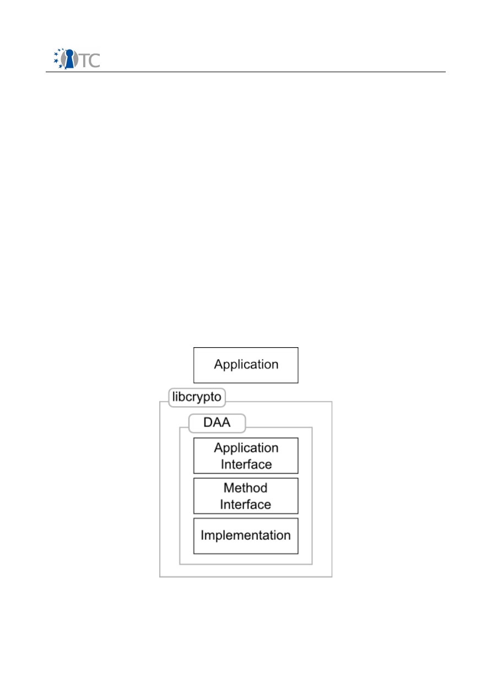
OpenSSL engine/DAA enhancement design specification
FINAL | 2.00
4 Direct Anonymous Attestation
4.1 Architecture
This is an interface to implement the Direct Anonymous Attestation (DAA) protocol
[7,8,9] within OpenSSL
libcrypto
.
DAA is composed by many different cryptographic algorithms: Setup, Join, Sign, Verify,
Link and Rogue Tagging. Currently only the Sign and Verify algorithms are supported
and, according to the original design of DAA, the Sign algorithm is considered as a two-
parties protocol between the Host and the TPM. This is a common point between all
versions of DAA in literature.
The interface is designed to be as general as possible in order to support all DAA
versions: RSA-based or Pairing-based DAA, with or without an actual (hardware) TPM.
The current version provides a default dummy implementation together with the
interface. Such dummy version does not implement a complete DAA protocol, but its
sole purpose is to demonstrate its functionality without the need of any other software
than OpenSSL. A proper DAA protocol will replace the dummy implementation in future
versions. The use of OpenSSL engines allows overriding the default implementation.
4.1.1 Overview
The code is organized in three main modules, as shown in Figure 5.
In more details:
Open_TC Deliverable D03c.6
24/61
Figure 5: Direct Anonymous
Attestation Architecture Overview

OpenSSL engine/DAA enhancement design specification
FINAL | 2.00
●
Implementations
contains:
■
The specific implementation of the cryptographic primitives.
■
The specific implementation of functions to manage related data types
(e.g. signature, credentials).
According to OpenSSL design, the primitives are put together in a single object
called DAA method (refer to the
DAA_METHOD
structure, described in Section
4.1.2).
Currently, a single default implementation is available.
OpenSSL engines overwrite this layer.
●
Method Interface
is a low level interface that hides the view on the
DAA_METHOD
behind a higher level object represented by the
DAA
structure (refer
to Section 4.1.2 for more details). This interface allows to:
■
Get and set the default DAA method to be used when creating new
DAA
structures.
■
Select and use a specific DAA method for a given
DAA
structure.
■
Access the method primitives from the
DAA
structure.
■
According to OpenSSL design, at this layer input/output of functions are
internal data structures.
This interface should not directly used by an Application, but provides a first
layer of separation between the Implementation layer where a structure
DAA_METHOD
is instantiated and the Application Interface layer where functions
need to access the method.
●
Application Interface
is the interface available to the applications. It provides
functions to:
■
Created/destroy a
DAA
structure.
■
Access/modify properties of the
DAA
structure.
■
Invoke cryptographic primitives of the referenced method. According to
OpenSSL design, at this layer input/output of functions are buffers
(notably, in this context, digests and signatures) and there is not visibility
of the internal data structures used to make computation.
Further details are given in Section 4.2.
4.1.2 Data Structures
Four main data structures are involved in the DAA interface. The relationship among
them is depicted in Figure 6.
Open_TC Deliverable D03c.6
25/61
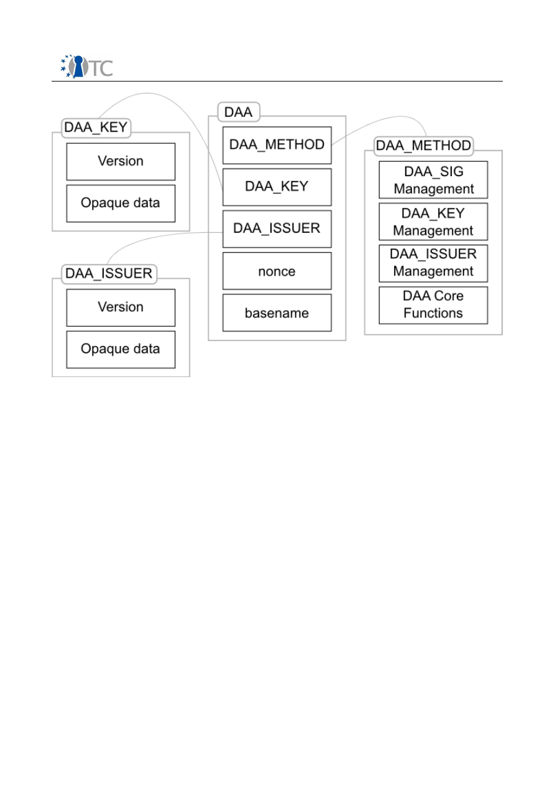
OpenSSL engine/DAA enhancement design specification
FINAL | 2.00
In more details:
●
DAA
is the main data structure, available at Application Interface layer. It
contains references to other structures and to two buffers to store the Verifier's
nonce and basename.
●
DAA_METHOD
contains pointers to functions that represent the implementation of
the DAA algorithms, which mainly consists of:
■
DAA Core Functions
: the cryptographic primitives, detailed in Section
4.1.3.
■
DAA_ISSUER
Management
: constructor/destructor and serialization
functions for the
DAA_ISSUER
structure (Issuer credentials).
■
DAA_KEY
Management
: constructor/destructor and serialization functions
for the
DAA_KEY
structure (Platform credentials).
■
DAA_SIG
Management
: constructor/destructor and serialization functions
for the
DAA_SIG
structure (DAA signature).
●
DAA_KEY
represents the Platform credentials, necessary to compute a DAA
signature. This structure is a wrapper to a specific key type, which depends on
the actual implementation provided by the DAA method.
●
DAA_ISSUER
represents the Issuer credentials, necessary to verify the
correctness of a DAA signature. This structure is a wrapper to a specific type,
which depends on the actual implementation provided by the DAA method.
In order to maintain consistency inside a DAA structure, all data structure contain a
Open_TC Deliverable D03c.6
26/61
Figure 6: Direct Anonymous Attestation Data Structure

OpenSSL engine/DAA enhancement design specification
FINAL | 2.00
version
field (not shown for simplicity in the figure). A proper implementation of a
DAA method SHOULD process only data structures with its same version.
Currently, this implementation defines the following versions:
●
The original RSA-based DAA described in [7] (purely software implementation,
currently not implemented).
●
The TCG TSS/TPM DAA profile that exploits the RSA-based version of DAA and is
specified in [1] (with actual TPM support, implemented through the engine
described in Section 6).
●
The symmetric pairing-based version of DAA described in [8] (purely software
implementation, currently not implemented).
●
The asymmetric pairing-based version of DAA described in [9] (purely software
implementation, currently implemented through the Miracl engine mentioned in
Section 2).
In addition to the previously described structures, a
DAA_SIG
structure is defined (not
shown in Figure 6 for simplicity). Similarly to
DAA_KEY
and
DAA_ISSUER
, it is a wrapper
to a specific signature type, which depends on the actual implementation provided by
the DAA method. As already mentioned, the
DAA_SIG
structure is hidden at Application
Interface layer, by encoding/decoding it into buffers. For this reason no further details
are presented in the following.
4.1.3 Workflow
This section describes in more details the cryptographic primitives related to DAA and
the workflow from the Application Interface down to the actual Implementation layer.
●
Verifier Init
. The Verifier generates a nonce and sets a basename. The
Application Interface layer function
DAA_sign_verifier_init()
directly
accesses the Implementation layer primitive
sign_verifier_init()
of the
method. Since both nonce and basename are buffers, there is no need for the
intermediate Method Interface layer.
●
Sign
. The User/platform computes a DAA signature on a message digest. The
workflow is summarized in Figure 7. This implementation reflects the original
design of DAA where the User/platform is divided into Host and TPM; note that in
this context TPM does not refer to the hardware TCG's TPM, but it is used to
isolate the critical component from the rest of the platform.
Open_TC Deliverable D03c.6
27/61
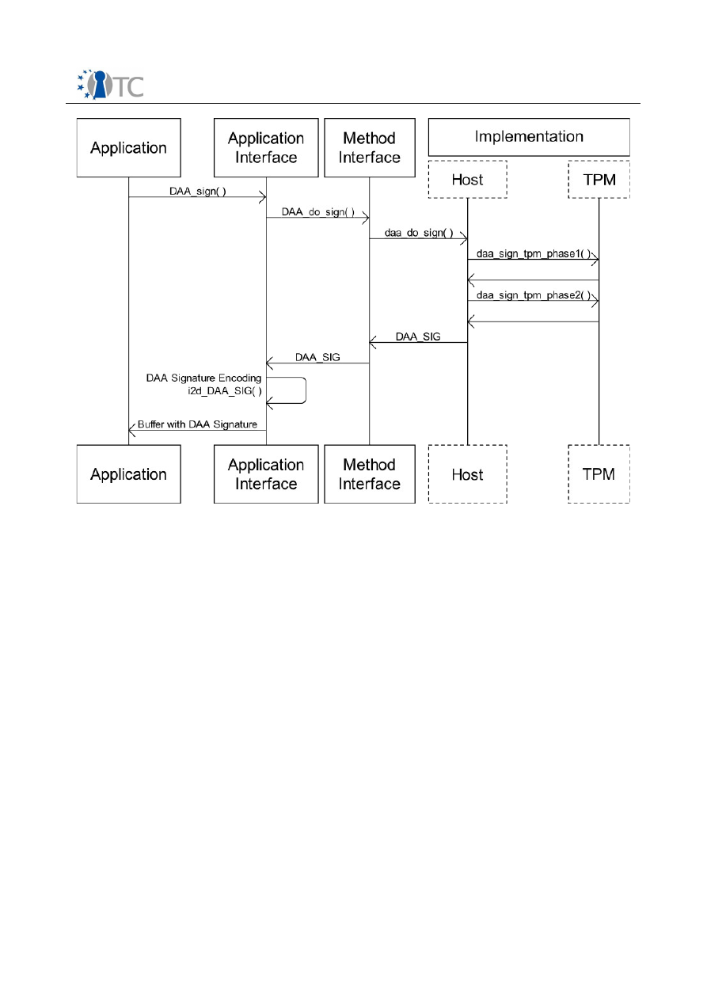
OpenSSL engine/DAA enhancement design specification
FINAL | 2.00
1.The Application Interface layer function
DAA_sign()
invokes the Method
Interface layer function
DAA_do_sign()
.
2.The Method Interface layer function
DAA_do_sign()
invokes the
Implementation layer primitive
daa_do_sign()
of the method.
3.
daa_do_sign()
actually computes the DAA signature. In order to reflect the
original design in the DAA definition,
daa_do_sign()
is expected to call
the primitives
daa_sign_tpm_phase1()
and
daa_sign_tpm_phase2()
which perform the computation on the TPM side. Note that an actual
implementation may avoid the definition of the two TPM primitives.
4.
daa_do_sign()
returns a
DAA_SIG
structure.
5.
DAA_do_sign()
forwards the
DAA_SIG
structure to the caller.
6.At Application Interface layer,
DAA_sign()
converts the
DAA_SIG
structure
in a buffer, calling the function
i2d_DAA_SIG()
(which relies on a primitive
at Implementation layer, not shown for simplicity in the picture).
7.Finally,
DAA_sign()
returns the DAA signature as a buffer to the calling
application.
●
Verify
. The Verifier checks the correctness of a DAA signature. The worklow is
summarized in Figure 8.
Open_TC Deliverable D03c.6
28/61
Figure 7: Direct Anonymous Attestation Sign Workflow
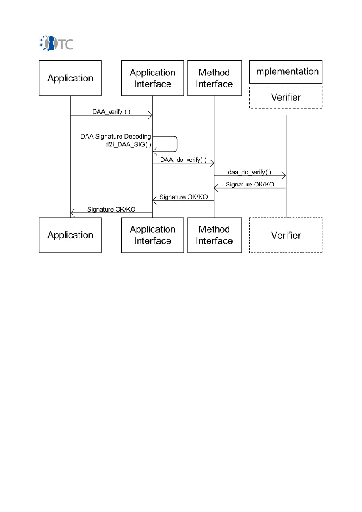
OpenSSL engine/DAA enhancement design specification
FINAL | 2.00
1.The Application Interface layer function
DAA_verify()
receives in input a
buffer containing the DAA signature. First it deserializes the signature into
a
DAA_SIG
structure, invoking
d2i_DAA_SIG()
(which relies on a primitive
at Implementation layer, not shown for simplicity in the picture).
2.
DAA_verify()
continues by invoking the Method Interface layer function
DAA_do_verify()
, that accepts in input the
DAA_SIG
structure.
3.The Method Interface layer function
DAA_do_verify()
invokes the
Implementation layer primitive
daa_do_verify()
of the method.
4.
daa_do_verify()
returns either success or failure.
5.
DAA_do_sign()
forwards the response to the caller.
6.Finally,
DAA_verify()
returns either success or failure to the calling
application.
4.2 Application Programming Interface
4.2.1 Application Interface
These functions are used by developers that write applications that use DAA as
cryptographic protocol.
DAA* DAA_new (void)
DAA structure constructor.
Open_TC Deliverable D03c.6
29/61
Figure 8: Direct Anonymous Attestation Verify Workflow

OpenSSL engine/DAA enhancement design specification
FINAL | 2.00
Generates a new DAA structure relying on the Method Interface layer function
DAA_new_method()
. It invokes
DAA_new_method()
with a NULL engine, which
means the function actually returns a DAA structure with method
DAA_get_default_method()
and engine ENGINE_get_default_DAA().
Loading an engine (e.g. with standard -engine option of OpenSSL commands)
overwrite the default method and engine, hence the result of this function is a
DAA structure which is based on the loaded engine.
Returns:
Pointer to the new DAA structure
void DAA_free (DAA *
daa
)
DAA structure destructor.
Destroys a DAA structure, by calling internal DAA_KEY and DAA_ISSUER free.
Parameters:
daa
Pointer to the DAA structure
int DAA_get_version (const DAA *
daa
)
Returns the binding version of the supplied DAA structure.
Parameters:
daa
Pointer to the DAA structure
Returns:
The DAA binding version
int DAA_set_nonce (unsigned int
nonce_len
, unsigned char *
nonce
, DAA
*
daa
)
Sets the Verifier's nonce into the supplied DAA structure.
Parameters:
nonce_len
Length of the buffer containing the Verifier's nonce
nonce
Buffer containing the Verifier's nonce
daa
Pointer to the DAA structure
Returns:
1 in case of success
-1 in case of error
int DAA_set_basename (unsigned int
basename_len
, unsigned char *
basename
, DAA *
daa
)
Sets the Verifier's basename into the supplied DAA structure.
Parameters:
basename_len
Length of the buffer containing the Verifier's basename
basename
Buffer containing the Verifier's basename
daa
Pointer to the DAA structure
Returns:
1 in case of success
Open_TC Deliverable D03c.6
30/61

OpenSSL engine/DAA enhancement design specification
FINAL | 2.00
-1 in case of error
int DAA_SIG_size (const DAA *
daa
)
Returns the size (in bytes) of a DAA signature for the supplied DAA structure.
Returns an upper bound to the DAA_SIG size. Useful to allocate a buffer that will
contains a signature, without knowing in advantage what the signature will be.
Parameters:
daa
Pointer to the DAA structure
Returns:
The required size for a buffer to store a DAA_SIG structure
int DAA_sign_verifier_init (unsigned int *
nonce_len
, unsigned char **
nonce
, unsigned int *
basename_len
, unsigned char **
basename
, DAA
*
daa
)
Returns the Verifier's nonce and basename and sets them within the supplied
DAA structure.
Parameters:
nonce_len
Pointer to a int, where the length of the Verifier's nonce buffer is
returned
nonce
Pointer to a buffer, where the Verifier's nonce is returned
basename_len
Pointer to a int, where the length of the Verifier's basename
buffer is returned
basename
Pointer to a buffer, where the Verifier's basename is returned
daa
Pointer to the DAA structure containing a reference to the DAA method
Returns:
Pointer to the DAA_SIG structure created
NULL if an error occurred
int DAA_sign (int
type
, const unsigned char *
dgst
, int
dgst_len
,
unsigned char *
sig
, unsigned int *
sig_len
, DAA *
daa
)
Computes the DAA signature (buffer) of the given hash value using the DAA
method supplied and returns the created signature.
Parameters:
type
This parameter is ignored
dgst
Buffer containing the hash value
dgst_len
Length of the hash value buffer
sig
Pointer to a buffer, where the DAA signature is returned
sig_len
Pointer to a int, where the length of the DAA signature buffer is returned
daa
Pointer to the DAA structure containing a reference to the DAA method
Returns:
1 in case of success
0 in case of error
Open_TC Deliverable D03c.6
31/61

OpenSSL engine/DAA enhancement design specification
FINAL | 2.00
int DAA_verify (int
type
, const unsigned char *
dgst
, int
dgst_len
,
const unsigned char *
sigbuf
, int
sigbuf_len
, DAA *
daa
)
Verifies that the supplied signature (buffer) is a valid DAA signature of the
supplied hash value using the supplied DAA method.
Parameters:
type
This parameter is ignored
dgst
Buffer containing the hash value
dgst_len
Length of the hash value buffer
sigbuf
Buffer containing a serialized DAA signature
sigbuf_len
Length of the DAA signature buffer
daa
Pointer to the DAA structure containing a reference to the DAA method
Returns:
1 if the signature is correct
0 if the signature is incorrect
-1 in case of error
4.3 Examples
Section 5.1.3 provides details about the use of the DAA protocol in a TLS Extension.
Such details can be used as an example showing the usage of the DAA protocol in
OpenSSL.
Open_TC Deliverable D03c.6
32/61
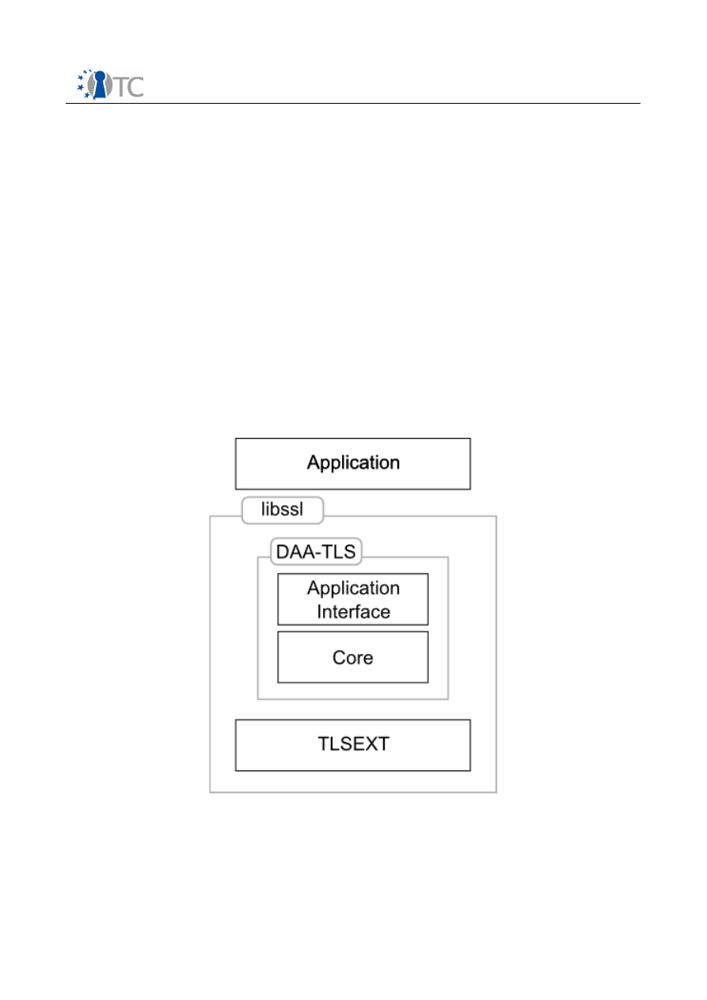
OpenSSL engine/DAA enhancement design specification
FINAL | 2.00
5 TLS DAA-Enhancement
5.1 Architecture
The TLS DAA-Enhancement (DAA-TLS) is a TLS Enhancement that implements the
(client) anonymous authentication according to [1], and using the TLSEXT general
framework (Section 3) and the DAA primitives (Section 4).
The TLSEXT general framework is used to transport a DAA-TLS Extension which carries
the required messages between client and server. The DAA cryptographic primitives
are used as group signature for authenticating the user anonymously.
DAA-TLS is designed to rely on the underlying DAA implementation and hence to
support all the DAA versions provided: RSA-based or Pairing-based DAA, with or
without an actual (hardware) TPM.
This code is designed to be part of the OpenSSL
libssl
library and it is compiled in it.
5.1.1 Overview
The code is organized in two main modules as shown in Figure 9.
In more details:
●
Core
contains the core functions required by DAA-TLS. In particular among the
core functions there are the initialization function needed to activate the hello
Open_TC Deliverable D03c.6
33/61
Figure 9: TLS DAA-Enhancement
Architecture Overview

OpenSSL engine/DAA enhancement design specification
FINAL | 2.00
extension, the callback functions for creating and managing the exchanged data
and the final callback function to verify the DAA signature.
●
Application Interface
is a module that allows the application to manage the
behavior of the DAA-TLS Extension. Further details are given in Section 5.2.
5.1.2 Data Structures
The TLS DAA-Enhancement saves the data needed during the TLS handshake in a data
structure called
ssl_tlsext_daa_ctx_st
. This structure contains the following data:
struct ssl_tlsext_daa_ctx_st {
DAA *daa;
unsigned int key_len;
unsigned char *key_buf;
unsigned int issuer_key_len;
unsigned char *issuer_key_buf;
};
In more details:
●
daa
is a pointer to the
DAA
structure described in Section 4.1.2.
●
key_buf
is a buffer of
key_buf_len
bytes that contains the DAA key.
●
issuer_key_buf
is a buffer of
issuer_key_buf_len
bytes that contains the DAA
Issuer public key.
This structure is created during the initialization of the DAA-TLS Extension and is
managed by specific functions (refer to Section 5.1.3 for more details).
Section 5.3 presents an example of how to use this data structure to implement an
Application that supports DAA-TLS.
5.1.3 Implementation Details
5.1.3.1 Core
This section shows how the TLS Extensions is structured and gives details about the
internals.
TLSEXT_GENERAL* SSL_TLSEXT_DAA_new ()
Creates a new DAA extension.
It is called by the ssl_tlsext_general_create_list() which is executed during the
creation of the SSL_CTX object.
It sets
ssl_tlsext_daa_init()
as init callback function.
void ssl_tlsext_daa_client_supp_data_cb (SSL *
s
, TLSEXT_GENERAL *
e
)
Callback function for creating the supplemental data entry on the client.
It parses the data received from the server through the TLS Hello Extension that
contains the nonce and the basename.
Furthermore it retrieves the digest of the X509 certificate used for the client
authentication.
It uses the nonce, the basename and the digest of the X509 certificate for
Open_TC Deliverable D03c.6
34/61

OpenSSL engine/DAA enhancement design specification
FINAL | 2.00
making the DAA signature.
Parameters:
s
a pointer to the SSL object
e
a pointer to the DAA extension
int ssl_tlsext_daa_server_ext_cb (SSL *
s
, TLSEXT_GENERAL *
e
)
Callback function for receiving the TLS Hello Extension on the server.
It decides if the server must accept the DAA authentication or not. If the server
accepts it, then it creates a TLS Hello extension to send within the server hello in
response to the client request. If the DAA signature is refused, the server
creates an extension that contains an error code and send it back.
Furthermore it sets the callbacks needed to handle the supplemental data
message that will carry the DAA signature
Parameters:
s
a pointer to the SSL object
e
a pointer to the DAA extension
int ssl_tlsext_daa_server_finish_cb (SSL *
s
, TLSEXT_GENERAL *
e
)
Callback function for managing the supplemental data message on the server.
This is executed at the end of the handshake.
If the DAA signature verification fails, then the USER_CANCELLED error is
returned.
Parameters:
s
a pointer to the SSL object
e
a pointer to the DAA extension
5.1.4 Workflow
Figure 10 gives an overview of the TLS DAA-Enhancement workflow. More details are
given in the following.
Open_TC Deliverable D03c.6
35/61
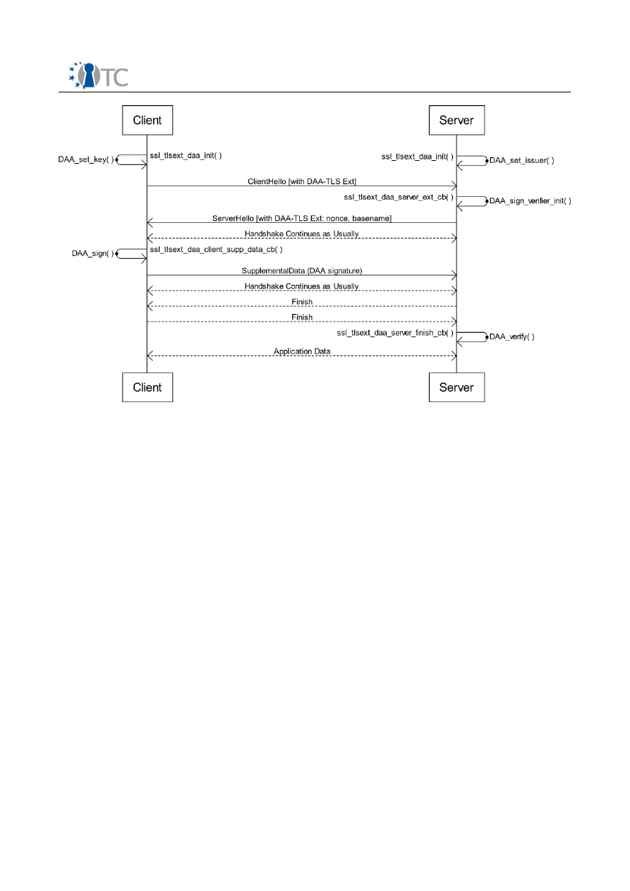
OpenSSL engine/DAA enhancement design specification
FINAL | 2.00
1. The DAA-TLS Extension is created and initialized on both sides through
ssl_tlsext_daa_init()
(see Section 6.1.2 for more details). During this
operation, the client loads the DAA Platform credentials, while the server loads
the Issuer credentials. These data will be used later on to make the DAA
signature and to verify it.
2. The client begins the TLS handshake by sending a ClientHello with the DAA-TLS
Extension indicating that it wants to use the anonymous authentication. Within
the extension payload, the client sends the supported version.
3. If the server supports the DAA-TLS anonymous authentication, the
ssl_tlsext_daa_server_cb()
callback is called. This callback decides if the
server accepts to use the DAA anonymous authentication.
If the server accepts the use of DAA-TLS, it calls the
DAA_sign_verifier_init()
function. The
DAA_sign_verifier_init()
is part
of the DAA Application Interface (refer to Section 4.1.3 for details). Furthermore,
since DAA-TLS requires a client authentication with a self-signed certificate
(refer to [1]), the callback function disables the verification of the client
certificate in OpenSSL by modifying the
verify_mode
field of the
SSL
object.
4. The server always replies with the ServerHello with the DAA-TLS Extension, both
in case of acceptance or rejection.
If the server accepts, the extension contains the Verifier's nonce and basename
that must be used in the signature computation.
According to [1], if the server does not accept the use of DAA-TLS, the extension
contains an error code.
5. The TLS handshake continues as usually until the client needs to send the
SupplementalData message that carries the DAA signature (recall that,
Open_TC Deliverable D03c.6
36/61
Figure 10: TLS DAA-Enhancement Workflow

OpenSSL engine/DAA enhancement design specification
FINAL | 2.00
according to [1], only Client Supplemental Data are required).
6. In order to prepare the data to be sent in the SupplementalData message, the
client executes the
ssl_tlsext_daa_client_supp_data_cb()
. This callback
function calls the
DAA_sign()
in order to compute the DAA signature. The
DAA_sign()
is part of the DAA Application Interface (refer to Section 4.1.3 for
details). According to [1], the data signed corresponds to the digest of the X509
certificate used for the TLS client authentication. The callback function retrieves
the certificate from the
SSL
object and uses the OpenSSL
X509_digest()
function to compute the digest.
7. The TLS handshake continues as usually until the server and the client exchange
the Finish message.
8. After the Finish message is exchanged, the server can verify the DAA signature.
This is accomplished by the
ssl_tlsext_daa_server_finish_cb()
. This
callback function verifies the signature using the
DAA_sign_verify()
function.
The
DAA_sign_verify()
is part of the DAA Application Interface (refer to
Section 4.1.3 for details). The callback function retrieves the digest of the
certificate used for the client authentication from the session data contained in
the
SSL
object.
9. When the handshake is completed, the client and the server can exchange the
application data.
5.1.5 Other Features
In this section some additional features of the current implementation are described.
5.1.5.1 Support to TLS Sessions Resumption
The current implementation supports TLS session resumption and is compatible with
the OpenSSL implementation of the SessionTicket TLS Extension for session
resumption without server-side state (RFC 4507).
If a client wants to resume a previous TLS session, it makes explicit request during the
ClientHello message. If the server agrees the session resumption, then the handshake
jumps to the Finish messages. From the perspective of the DAA-TLS Extension, no
computation is done at all.
This ClientHello message MAY still contain a DAA-TLS Extension, whose purpose is to
dictate that, in case the server will refuse session resumption, the client wish to open a
new TLS session with DAA enhancement.
5.1.5.2 Legacy Mode
The current implementation allows, at compile time, to turn the DAA enhanced
libssl
into legacy mode.
Legacy mode means that the DAA extension can be used even by unmodified
applications, that link the DAA enhanced
libssl
. This is an experimental feature,
which only works in Unix-like environment and has been tested with Apache+mod_ssl.
The legacy mode works as follows:
●
On client side, the DAA-TLS Extension is activated by default.
Open_TC Deliverable D03c.6
37/61

OpenSSL engine/DAA enhancement design specification
FINAL | 2.00
●
On client side, the DAA Platform credentials are assumed to be stored in a file
specified in a system variable called
DAA_LEGACY_CRED
. If such variable is not
defined, the default location
/usr/local/daatoolkit/etc/daa/daa_cred.bin
is used
.
●
On server side, the DAA Issuer credentials are assumed to be stored in a file
specified in a system variable called
DAA_LEGACY_ISSUER
. If such variable is not
defined, the default location
/usr/local/daatoolkit/etc/daa/daa_issuer.bin
is used.
The application MUST support and load a (self-signed) client certificate.
In addition it MAY load a DAA capable engine.
5.2 Application Programming Interface
5.2.1 Application Interface
These functions are used by the developers that write applications that use TLS-DAA.
TLSEXT_GENERAL* ssl_tlsext_daa_init (SSL *
s
, TLSEXT_GENERAL *
ext
)
Initializes a DAA extension
The initialization calls the SSL_TLSEXT_GENERAL_init. Then it verifies whether
the extension is created on the client or on the server and sets the callback
functions accordingly.
Parameters:
s
a pointer to the SSL object
ext
a pointer to the DAA extension to be initialized
void SSL_CTX_tlsext_daa_set_enabled (SSL_CTX *
ctx
)
Enable the DAA extension.
This is a wrapper for the
SSL_CTX_tlsext_set_enabled()
where the type is
fixed to TLSEXT_TYPE_daa.
Parameters:
ctx
a pointer to a SSL_CTX object
void SSL_CTX_tlsext_daa_set_disabled (SSL_CTX *
ctx
)
Disable the DAA extension.
This is a wrapper for the
SSL_CTX_tlsext_set_enabled()
where the type is
fixed to TLSEXT_TYPE_daa.
Parameters:
ctx
a pointer to a SSL_CTX object
void SSL_CTX_tlsext_daa_client_set_key (SSL_CTX *
ctx
, unsigned int
len
, unsigned char *
buf
)
Sets on the client the DAA credential for signing.
This is used by the application to set the DAA credential in the SSL_CTX object.
This must happen before the SSL object is created.
Parameters:
Open_TC Deliverable D03c.6
38/61

OpenSSL engine/DAA enhancement design specification
FINAL | 2.00
ctx
a pointer to a SSL_CTX object
len
size of
buf
buf
DAA credential
void SSL_CTX_tlsext_daa_client_set_issuer_key (SSL_CTX *
ctx
, unsigned
int
len
, unsigned char *
buf
)
Sets on the client the DAA Issuer public key.
This is used by the application to set the DAA credential in the SSL_CTX object.
This must happen before the SSL object is created.
Parameters:
ctx
a pointer to a SSL_CTX object
len
size of
buf
buf
DAA Issuer public key
void SSL_CTX_tlsext_daa_server_set_issuer_key (SSL_CTX *
ctx
, unsigned
int
len
, unsigned char *
buf
)
Sets on the server the DAA Issuer public key.
This is used by the application to set the DAA credential in the SSL_CTX object.
This must happen before the SSL object is created.
Parameters:
ctx
a pointer to a SSL_CTX object
len
size of
buf
buf
DAA Issuer public key
5.3 Example
This example is based on the commands
s_client
and
s_server
provided by
OpenSSL. This section shows how to modify the code of the commands in order to
support the DAA-TLS protocol without relying on the legacy mode.
This example is based on the DAA-TLS Extension described in this section, but the
skeleton and the basic concepts can be used with any extension defined in OpenSSL.
The modifications are minimal and only affect the initialization phase where the
parameters of the connection are decided. After the parameters are set up, the code
for creating the TLS channel remains unchanged and the application manages the
connection as without the DAA-TLS Extension.
5.3.1 Common Modifications
Both client and server must include the header file of the extension DAA-TLS.
The following line must be added at the beginning of the code:
#include <openssl/t1_daa.h>
According to OpenSSL design, an application should create a
SSL_CTX
structure, set
default values for the SSL/TLS connection it wishes to open, then it creates the
SSL
Open_TC Deliverable D03c.6
39/61

OpenSSL engine/DAA enhancement design specification
FINAL | 2.00
structure from the previously generated context.
In general, an application will have the following skeleton:
ctx = SSL_CTX_new();
/* Functions that set flags and options in the SSL_CTX */
ssl = SSL_new(ctx);
The DAA-TLS Extension offers some API functions that allow to modify its behavior.
These functions set data, flags and options in the context data of the extension. The
SSL_new()
function will use such data to initialize the DAA-TLS Extension.
In the following it is assumed that
ctx
is the
SSL_CTX
structure created through the
SSL_CTX_new()
function and all proposed modifications are located in the code before
the creation of the
SSL
structure.
5.3.2 Modifications on the Client
The client must enable the support for the DAA-TLS Extension. A switch passed in input
on the command line enables the DAA-TLS Extension. This switch also specifies the file
that contains the DAA key.
Currently,
s_client
supports a command line option
-daa
, which enables the DAA-TLS
Extension and expects the name of a file containing the platform credentials as
parameter.
Within the code, the option
-daa
triggers the following events: setting the value of the
integer value
daa
to 1, and loading the content of the specified file into a buffer
buf
of
length
len
.
The DAA-TLS Extension is then enabled using the following function:
if (daa) {
SSL_CTX_tlsext_daa_set_enabled(ctx);
}
After the extension is enabled, it is possible to set the DAA Platform credentials using
the function
SSL_CTX_tlsext_daa_client_set_key(ctx, len, buf);
where
buf
is a buffer of
len
bytes that contains the DAA Platform credentials .
5.3.3 Modifications on the Server
The server does not need to enable the support for the DAA-TLS Extension since the
library enables by default the extensions on the server.
Currently,
s_server
supports a command line option
-daa_issuer
to specify the name
of a file containing the DAA Issuer credentials as the following parameter. Within the
code, this parameter forces to load the issuer credential from the specified file into a
buffer
buf
of length
len
.
Open_TC Deliverable D03c.6
40/61

OpenSSL engine/DAA enhancement design specification
FINAL | 2.00
After the
SSL_CTX
object was created, it is possible to set the DAA Issuer credentials as
shown in the following:
ctx = SSL_CTX_new();
SSL_CTX_tlsext_daa_server_set_issuer_key(ctx, len, buf);
where
buf
is a buffer of
len
bytes that contains the DAA Issuer key.
In addition,
s_server
supports a command line option
-no_daa
to disable the DAA-TLS
Extension. Within the code, this parameter sets to 1 the value of an integer variable
no_daa
. It is then possible to disable the DAA-TLS Extension using the function:
if (no_daa) {
SSL_CTX_tlsext_daa_set_disabled(ctx);
}
5.3.4 Running the commands
Before running the commands, the DAA credential must be generated. Since this
example relies on the dummy implementation, it is sufficient to used empty files for,
both, the DAA Issuer credentials and the DAA Platform credentials.
The command line for a server that supports the DAA-TLS is:
./openssl s_server
-daa_issuer /usr/local/daatoolkit/etc/daa/daa_issuer.bin
where the option
-daa_issuer
is used to specify the name of a file containing the
Issuer credentials (
/usr/local/daatoolkit/etc/daa/daa_issuer.bin
in the example
above).
The command line for a client that supports the DAA-TLS is:
./openssl s_client -tls1 -cert client.pem
-daa /usr/local/daatoolkit/etc/daa/daa_cred.bin
where
-tls1
forces the use of TLS channel (SSL does not support extensions),
-cert
specifies a client (self-signed) certificate to use during the handshake
-daa
enables the
DAA-TLS Extension and loads the platform credentials from the specified file
(
/usr/local/daatoolkit/etc/daa/daa_cred.bin
in the example above).
It is also possible to run OpenSSL s_server with the DAA-TLS disabled:
./openssl s_server -no_daa
In this case the server will not respond to DAA-TLS Extension requests.
Open_TC Deliverable D03c.6
41/61
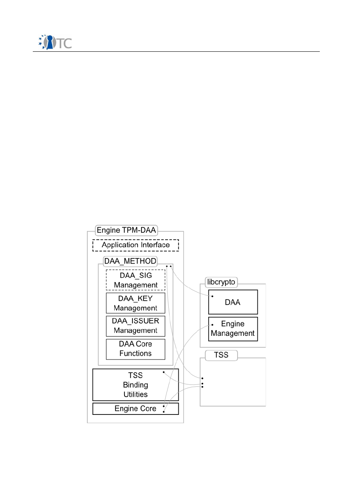
OpenSSL engine/DAA enhancement design specification
FINAL | 2.00
6 Implementation of the Specification of TCG TSS/TPM
DAA Profile for DAA-TLS
6.1 Architecture
The majority of the code presented in this section is implemented in an OpenSSL
engine which overloads the functions offered by OpenSSL in the default DAA
implementation.
For actually making and verifying the DAA signature the engine makes use of the
functions offered by a Trusted Software Stack (TSS).
Next to the engine, also OpenSSL
libcrypto
DAA-enhanced and a Trusted Software
Stack (TSS) are required. Furthermore, the OpenSSL
libssl
enhanced with the
framework for general extension is required in order to correctly run protocol between
client and server.
6.1.1 Overview
Figure 11 shows how the OpenSSL engine is internally organized and how it interacts
with OpenSSL
libcrypto
and the TSS. Refer to Section 6.1.2 for more details.
Open_TC Deliverable D03c.6
42/61
Figure 11: Implementation of the specification of TCG
TSS/TPM DAA profile for DAA-TLS Overview

OpenSSL engine/DAA enhancement design specification
FINAL | 2.00
In more details:
●
Engine Core
. This module layer contains all functions required by OpenSSL and
needed to manage the engine. These functions are, for instance, used to create
and initialize the engine or to destroy it.
●
TSS Binding Utilities
. This module allows the engine to share data with the
Trusted Software Stack. These functions are used to translate the representation
of internal data structures (e.g. DAA signature) from OpenSSL to TSS and vice
versa.
●
DAA_METHOD
. This overrides the default DAA method provided by OpenSSL.
This method contains:
■
DAA Core Functions
. This module implements the code to make and
verify the DAA signature. This code relies on the TSS to make the actual
signature and verification and it is called by the TLS Extension that
implements the protocol. More details are given in Section 6.1.2.
■
DAA_KEY Management
. This module is in charge of loading the
DAA_KEY structure (platform credentials), needed to compute signatures.
According to the design described in Section 4.1.2, the application loads
the key in a buffer. This module expects the buffer containing the data
encoded according to the TSS specification [3]; hence, the engine passes
the keys to the TSS which decodes and loads them into the appropriate
internal data structure.
■
DAA_ISSUER Management
. This module is in charge of loading the
DAA_ISSUER structure (Issuer credentials), needed to verify signatures.
According to the design described in Section 4.1.2, the application loads
the Issuer credentials in a buffer. This module expects the buffer
containing the data encoded according to the TSS specification [3];
hence, the engine passes the keys to the TSS which decodes and loads
them into the appropriate internal data structure.
■
DAA_SIG Management
. This module manages the DAA signatures. It
allows to create and destroy a signature and to encode and decode it in
and from network format. Since TSS specification [3] does not describe
how to encode the DAA signature, this module relies on the DER-encoding
provided by OpenSSL.
●
Application Interface
. This layer allows the engine to offer a control interface
to the application. Currently, it is not used by this engine, but it is described for
a more complete overview. It could be used in a future implementation for
operations such as setting the TPM owner's password.
Beside the engine, also other components are required:
●
libcrypto
is a version of OpenSSL libcrypto library that supports the DAA
cryptographic primitives as described in Section 4.
●
TSS
is a library that implements the functions of the Trusted Software Stack as
described in [3].
6.1.2 Implementation Details
Open_TC Deliverable D03c.6
43/61

OpenSSL engine/DAA enhancement design specification
FINAL | 2.00
6.1.2.1 DAA_METHOD
This sections shows how the engine for implementing the specification of TCG TSS/TPM
DAA Profile for DAA-TLS is structured. Furthermore this section provides some details
about the TSS functions that are called by the engine.
int daatcg_sign_verifier_init (int *
nonce_len
, unsigned char **
nonce
,
int *
basename_len
, unsigned char **
basename
, DAA *
daa
)
The DAA Verifier initializes her nonce and basename.
The basename can be NULL (and its length 0), which means that no Verifier's
basename is needed.
Relies on the TSS function Tspi_DAA_Verifier_Init(), then converts Verifier's
nonce and basename into the internal DAA structure.
Parameters:
nonce_len
Pointer to the nonce length
nonce
Pointer to the nonce buffer
basename_len
Pointer to the basename length
basename
Pointer to the basename buffer
daa
DAA structure reference
Returns:
0 in case of success
1 in case of error
DAA_SIG* daatcg_do_sign (const unsigned char *
dgst
, int
dgst_len
,
DAA *
daa
)
Computes a DAA signature on a given digest.
Converts the digest to a TSS_OBJECT_TYPE_HASH, then calls the TSS function
Tspi_TPM_DAA_Sign(), finally convert the resulting signature to the internal
OpenSSL format.
Parameters:
dgst
Digest to be signed
dgst_len
Length of the digest
daa
DAA structure reference
Returns:
DAA signature on dgst (in OpenSSL format)
NULL in case of error
int daatcg_do_verify (const unsigned char *
dgst
, int
dgst_len
, const
DAA_SIG *
sig
, DAA *
daa
)
Verifies a DAA signature.
Converts the digest to a TSS_OBJECT_TYPE_HASH, then calls the TSS function
Tspi_DAA_VerifySignature().
Parameters:
Open_TC Deliverable D03c.6
44/61

OpenSSL engine/DAA enhancement design specification
FINAL | 2.00
dgst
Digest to be signed
dgst_len
Length of the digest
sig
DAA signature
daa
DAA structure reference
Returns:
1 f the signature is correct
0 if the verification failed
DAA_KEY* daatcg_key_new (void)
DAA_KEY (platform credential) constructor.
Relies on the TSS function Tspi_Context_CreateObject().
Returns:
a new DAA_KEY (platform credential) structure.
void daatcg_key_free (DAA_KEY *
daa
)
DAA_KEY (platform credential) destructor.
Does not free memory allocated by the TSS: this is automatically done when the
TSS context is closed.
Parameters:
daa
the DAA_KEY (platform credential) structure.
DAA_KEY* d2i_daatcg_key (DAA_KEY **
a
, const unsigned char **
in
,
long
len
)
DAA_KEY (platform credential) deserialization: read a DAA_KEY from a buffer.
Relies on the TSS function Tspi_SetAttribData(). The buffer contains credential
serialized according to the TSS Specifications.
Parameters:
a
Pointer to the DAA_KEY (platform credential) structure.
in
Pointer to the buffer.
len
Buffer length.
Returns:
the DAA_KEY (platform credential) structure.
int i2d_daatcg_key (const DAA_KEY *
a
, unsigned char **
out
)
DAA_KEY (platform credential) serialization: converts a DAA_KEY to a buffer.
Not implemented. Actually not needed by the TLS-DAA Extension.
Parameters:
a
the DAA_KEY (platform credential) structure.
out
Pointer to the buffer.
Returns:
the buffer length.
Open_TC Deliverable D03c.6
45/61

OpenSSL engine/DAA enhancement design specification
FINAL | 2.00
DAA_ISSUER* daatcg_issuer_new (void)
DAA_ISSUER (issuer credential) constructor.
Relies on the TSS function Tspi_Context_CreateObject().
Returns:
a new DAA_ISSUER (issuer credential) structure.
void daatcg_issuer_free (DAA_ISSUER *
daa
)
DAA_ISSUER (issuer credential) destructor.
Does not free memory allocated by the TSS: this is automatically done when the
TSS context is closed.
Parameters:
daa
the DAA_ISSUER (issuer credential) structure.
DAA_ISSUER* d2i_daatcg_issuer (DAA_ISSUER **
a
, const unsigned char **
in
, long
len
)
DAA_ISSUER (issuer credential) deserialization: reads a DAA_ISSUER from a
buffer.
Relies on the TSS function Tspi_SetAttribData(). The buffer contains credential
serialized according to the TSS Specifications.
Parameters:
a
Pointer to the DAA_ISSUER (issuer credential) structure.
in
Pointer to the buffer.
len
Buffer length.
Returns:
the DAA_ISSUER (issuer credential) structure.
int i2d_daatcg_issuer (const DAA_ISSUER *
a
, unsigned char **
out
)
DAA_ISSUER (issuer credential) serialization: converts a DAA_ISSUER to a buffer.
Not implemented. Actually not needed by the TLS-DAA Extension.
Parameters:
a
the DAA_ISSUER (issuer credential) structure.
out
Pointer to the buffer.
Returns:
the buffer length.
6.1.3 Workflow
The workflow of the usage of the engine for implementing the specification of TCG
TSS/TPM DAA Profile for DAA-TLS is depicted in Figure 12.
Open_TC Deliverable D03c.6
46/61
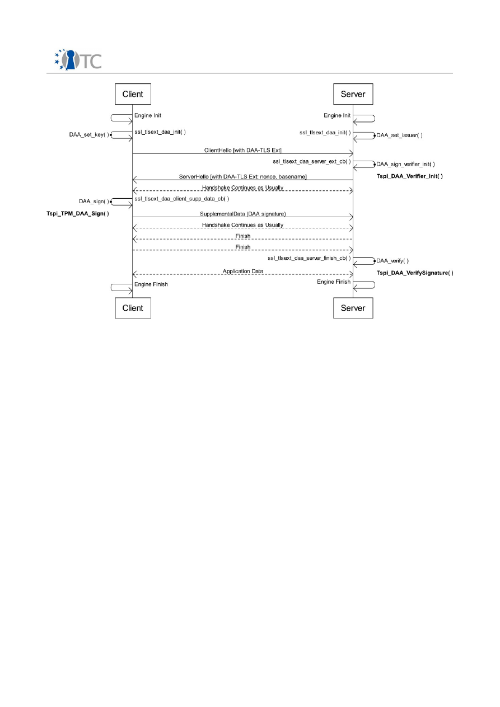
OpenSSL engine/DAA enhancement design specification
FINAL | 2.00
1. Both client and server initialize the respective engines by calling the engine
initialization function.
2. After the engine is initialized, the extension is created and initialized through
ssl_tlsext_daa_init()
(see Section 6.1.2 for more details). During this
operation, the client loads the DAA Platform credentials, while the server loads
the DAA Issuer credentials. These data will be used later on to make the DAA
signature and to verify it.
3. The client begins the TLS handshake by sending a ClientHello with the DAA-TLS
Extension indicating that it wants to use the anonymous authentication.
According to Section 5.1.4, it sets a proper version.
4. If the server agrees on using the DAA anonymous authentication, the
ssl_tlsext_daa_server_cb callback()
is called. This callback function calls
the
Tspi_DAA_Verifier_Init()
function offered by the TSS in order to obtain a
nonce and the basename for the DAA signature.
5. The server replies with the ServerHello with the DAA-TLS Extension. The
extension contains the Verifier's nonce and basename that must be used in the
signature computation.
6. The TLS handshake continues as usually until the client needs to send the
SupplementalData message that carries the DAA signature.
7. In order to send the SupplementalData message, the client executes the
ssl_tlsext_daa_client_supp_data_cb()
. This callback function computes the
DAA signature relying on the
Tspi_TPM_DAA_Sign()
function offered by the TSS.
This signature is sent through the SupplementalData message.
8. The TLS handshake continues as usually until the server and the client exchange
Open_TC Deliverable D03c.6
47/61
Figure 12: TCG TSS/TPM DAA Profile for DAA-TLS Workflow

OpenSSL engine/DAA enhancement design specification
FINAL | 2.00
the Finish message.
9. After the Finish message is exchanged, the server can verify the DAA signature.
This is accomplished by the
ssl_tlsext_daa_server_finish_cb()
. This
callback function verifies the signature relying on the
Tspi_DAA_VerifySignature()
function of the TSS.
10.When the handshake is completed, the client and the server can exchange the
application data.
11.Finally, when the application ends, the TLS channel is closed and the engine
shutdown.
6.2 Examples
Before running the commands, the DAA credential must be generated. Such creation is
not covered by this document. For further information, refer to [11].
This example is based on the commands
s_client
and
s_server
provided by
OpenSSL.
Both commands support dynamic loading of engines through the
-engine
command
line option.
The examples in Section 5.3.4, can be adapted to use the TPM-DAA engine in a
straightforward way.
The server runs:
./openssl s_server -engine tpmdaa
-daa_issuer /usr/local/daatoolkit/etc/daa/daa_issuer.bin
The client runs:
./openssl s_client -tls1 -cert client.pem -engine tpmdaa
-daa /usr/local/daatoolkit/etc/daa/daa_key.bin
Open_TC Deliverable D03c.6
48/61
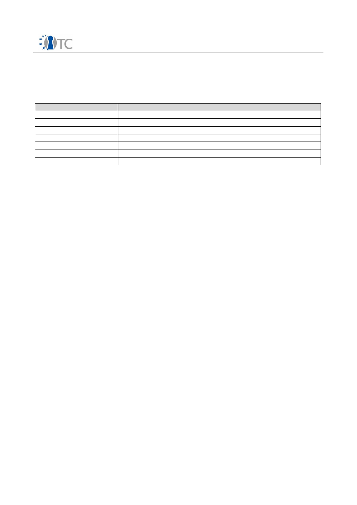
OpenSSL engine/DAA enhancement design specification
FINAL | 2.00
7 List of abbreviations
Listing of term definitions and abbreviations used in this document (IT expressions and
terms from the application domain).
Abbreviation
Explanation
CA
Certification Authority
DAA
Direct Anonymous Attestation
DER
Distinguished Encoding Rules
TCG
Trusted Computing Group
TLS
Transport Layer Security
TPM
Trusted Platform Module
TSS
TCG Software Stack
8 Referenced Documents
/1/ OpenTC D03c.3 SSL/TLS DAA-enhancement specification
/2/ TCG TPM Main Specification (parts 1,2,3)
July 9, 2007,
Version 1.2 Level 2 Revision 103
/3/ TCG Software Stack (TSS) Specification
March 7, 2007,
Version 1.2, Level 1, Errata A
/4/ IETF RFC 4346, The Transport Layer Security (TLS) Protocol Version 1.1
April, 2006
/5/ IETF RFC 4366, Transport Layer Security (TLS) Extensions
April, 2006
/6/ IETF RFC 4680, TLS Handshake Message for Supplemental Data
September, 2006
/7/ Direct Anonymous Attestation
Ernie Brickell, Jan Camenisch, Liqun Chen
CCS '04: 11th ACM conference on Computer and Communications Security
2004
/8/ Simplified Security Notions of Direct Anonymous Attestation and a Concrete
Scheme from Pairings
Ernie Brickell, Liqun Chen, Jiangtao Li
Trust08
2008
/9/ Pairings in Trusted Computing
Liqun Chen, Paul Morrissey, Nigel P. Smart
Pairing 2008
Open_TC Deliverable D03c.6
49/61

OpenSSL engine/DAA enhancement design specification
FINAL | 2.00
2008
/10/ Miracl – Multiprecision Integer and Rational Arithmetic C/C++ Library
(http://ftp.computing.dcu.ie/pub/crypto/miracl.zip)
Mike Scott
2007
/11/ OpenTC D03c.12 OpenSSL engine/DAA enhancement source code and
documentation
Open_TC Deliverable D03c.6
50/61

OpenSSL engine/DAA enhancement design specification
FINAL | 2.00
9 Appendix. Code Documentation
9.1 General TLS Extensions framework
General framework for TLS Extensions (RFC 4366) and Supplemental Data (RFC 4680)
support.
9.1.1 Patch
unsigned char* ssl_add_clienthello_tlsext_general (SSL *
s
, unsigned
char *
p
, unsigned char *
limit
)
Processes the extensions within the SSL object
s
and appends their content to
the buffer
p
, thus generating the payload for the Client Hello message.
This is a patch to ssl_add_clienthello_tlsext() (
libssl
), from which inherits the
prototype. : include within
libssl
.
unsigned char* ssl_add_serverhello_tlsext_general (SSL *
s
, unsigned
char *
p
, unsigned char *
limit
)
Processes the extensions within the SSL object
s
and appends their content to
the buffer
p
, thus generating the payload for the Server Hello message.
This is a patch to ssl_add_serverhello_tlsext() (
libssl
), from which inherits the
prototype. : include within
libssl
.
int ssl_parse_clienthello_tlsext_general (SSL *
s
, unsigned short
type
,
unsigned short
size
, unsigned char *
data
)
Handles an extension received in the Client Hello message and specified in TLV
format (
type
,
size
,
data
), pushes it to the stack of received extensions and
calls the related callback function.
This is a patch to ssl_parse_clienthello_tlsext() (
libssl
), from which inherits the
prototype. : include within
libssl
. : MUST be the last extension type to parse.
int ssl_parse_serverhello_tlsext_general (SSL *
s
, unsigned short
type
,
unsigned short
size
, unsigned char *
data
)
Handles an extension received in the Server Hello message and specified in TLV
format (
type
,
size
,
data
), pushes it to the stack of received General
Extensions and calls the related callback function.
This is a patch to ssl_parse_serverhello_tlsext() (
libssl
), from which inherits
the prototype. : include within
libssl
. : MUST be the last extension type to
parse.
int ssl_parse_serverhello_tlsext_general_required (SSL *
s
)
Checks for required extensions.
This function is used by the client to verify if any extension flagged as "required"
was not received from the server. In this case the handshake is aborted.
This is a patch to ssl_parse_serverhello_tlsext() (
libssl
).
RFC 4366:
Open_TC Deliverable D03c.6
51/61

OpenSSL engine/DAA enhancement design specification
FINAL | 2.00
In the event that a client requests additional functionality using
the extended client hello, and this functionality is not supplied
by the server, the client MAY abort the handshake.
If the client does not want to abort the handshake, it has not to flag the
extension as required.
int ssl3_get_server_supp_data (SSL *
s
)
Receives the server SupplementalData handshake message (if any).
This is a patch to ssl3_connect() (
libssl
).
Differences between ssl3_get_server_supp_data() and
ssl3_get_client_supp_data():
1.
Condition to select the extensions pool:
(ext->received == 1)
vs
(ext->server_send == 1)
.
2.
Supplemental data entry pool:
ext->client_supp_data
vs
ext->server_supp_data
.
3.
Parameters of
s->method->ssl_get_message
.
4.
Call to
ssl3_get_server_supp_data()
vs
ssl3_get_client_supp_data()
.
int ssl3_send_client_supp_data (SSL *
s
)
Sends the client SupplementalData handshake message (if any).
This is a patch to ssl3_connect() (
libssl
).
Differences between ssl3_send_client_supp_data() and
ssl3_send_server_supp_data():
1.
Condition to select the extensions pool:
(ext->received == 1)
vs
(ext->server_send == 1)
.
2.
Supplemental data entry pool:
ext->client_supp_data
vs
ext>server_supp_data
.
3.
The callback to invoke:
ext->client_supp_data_callback()
vs
ext->server_supp_data_callback
.
int ssl_tlsext_general_client_finish_cb (SSL *
s
)
Invokes the client finish callback for each negotiated extension.
This is a patch to ssl3_connect() (
libssl
).
The callbacks are invoked at the end of the handshake, according to RFC 4680:
Information provided in a supplemental data object MUST be intended
to be used exclusibely by applications and protocols above the TLS
protocol layer. Any such data MUST NOT need to be processed by the
TLS protocol.
int ssl3_send_server_supp_data (SSL *
s
)
Sends the server SupplementalData handshake message (if any).
This is a patch to ssl3_accept() (
libssl
).
Open_TC Deliverable D03c.6
52/61

OpenSSL engine/DAA enhancement design specification
FINAL | 2.00
Differences between ssl3_send_client_supp_data() and
ssl3_send_server_supp_data():
1.
Condition to select the extensions pool:
(ext->received == 1)
vs
(ext->server_send == 1)
.
2.
Supplemental data entry pool:
ext->client_supp_data
vs
ext->server_supp_data
.
3.
The callback to invoke:
ext->client_supp_data_callback()
vs
ext->server_supp_data_callback
.
int ssl3_get_client_supp_data (SSL *
s
)
Receives the client SupplementalData handshake message (if any).
This is a patch to ssl3_accept() (
libssl
).
Differences between ssl3_get_server_supp_data() and
ssl3_get_client_supp_data():
1.
Condition to select the extensions pool:
(ext->received == 1)
vs
(ext->server_send == 1)
.
2.
Supplemental data entry pool:
ext->client_supp_data
vs
ext->server_supp_data
.
3.
Parameters of
s->method->ssl_get_message
.
4.
Call to
ssl3_get_server_supp_data()
vs
ssl3_get_client_supp_data()
.
int ssl_tlsext_general_server_finish_cb (SSL *
s
)
Invokes the server finish callback for each negotiated extension.
This is a patch to ssl3_accept() (
libssl
).
The callbacks are invoked at the end of the handshake, according to RFC 4680:
Information provided in a supplemental data object MUST be intended
to be used exclusively by applications and protocols above the TLS
protocol layer. Any such data MUST NOT need to be processed by the
TLS protocol.
void ssl_tlsext_general_init_list (SSL *
s
)
Runs the init function for each extension within the SSL_CTX object.
If the init function returns not NULL, the initialized extension is pushed into the
stack of extensions available for this TLS connection.
This is called by SSL_new ()
Parameters:
s
a pointer to a SSL object
9.1.2 Core
void SSL_TLSEXT_GENERAL_free (TLSEXT_GENERAL * e)
Destructor of a TLSEXT_GENERAL object. It is called by the stack destructor.
void SSL_SUPP_DATA_ENTRY_free (SUPP_DATA_ENTRY * sd)
Open_TC Deliverable D03c.6
53/61

OpenSSL engine/DAA enhancement design specification
FINAL | 2.00
Destructor of a SUPP_DATA_ENTRY object. It is called by the stack destructor.
9.1.3 Interface
These functions are detailed in Section 3.2.1.
9.1.4 Application Interface
These functions are detailed in Section 3.2.2.
9.2 Direct Anonymous Attestation
9.2.1 Implementation
DAA_SIG* daa1_sig_new (void)
DAA_SIG constructor for OpenSSL DAA-1 method.
Relies on DAA1_SIG_new().
Returns:
Pointer to a new DAA_SIG structure.
void daa1_sig_free (DAA_SIG *
daa
)
DAA_SIG destructor for OpenSSL DAA-1 method.
Relies on DAA1_SIG_free().
Parameters:
daa
Pointer to the DAA_SIG structure.
DAA_SIG* d2i_daa1_sig (DAA_SIG **
a
, const unsigned char **
in
, long
len
)
DAA_SIG deserialization for OpenSSL DAA-1 method: reads a DAA_SIG from a
buffer.
Relies on d2i_DAA1_SIG().
Parameters:
a
Pointer to the DAA_SIG structure.
in
Pointer to the buffer.
len
Buffer length.
Returns:
Pointer to the DAA_SIG structure.
int i2d_daa1_sig (const DAA_SIG *
a
, unsigned char **
out
)
DAA_SIG serialization for OpenSSL DAA-1 method: converts a DAA_SIG to a
buffer.
Relies on i2d_DAA1_SIG().
Parameters:
a
Pointer to the DAA_SIG structure.
out
Pointer to the buffer.
Open_TC Deliverable D03c.6
54/61

OpenSSL engine/DAA enhancement design specification
FINAL | 2.00
Returns:
The buffer length.
int daa1_sig_size (const DAA *
daa
)
DAA_SIG size for OpenSSL DAA-1 method.
Returns an upper bound to the DAA_SIG size. Useful to allocate a buffer that will
contains a signature, without knowing in advantage what the signature will be.
Parameters:
daa
Pointer to the DAA structure.
Returns:
The DAA_SIG size.
DAA_SIG* daa3_sig_new (void)
DAA_SIG constructor for OpenSSL DAA-3 method.
Relies on DAA3_SIG_new().
Returns:
Pointer to a new DAA_SIG structure.
void daa3_sig_free (DAA_SIG *
daa
)
DAA_SIG destructor for OpenSSL DAA-3 method.
Relies on DAA3_SIG_free().
Parameters:
daa
Pointer to the DAA_SIG structure.
DAA_SIG* d2i_daa3_sig (DAA_SIG **
a
, const unsigned char **
in
, long
len
)
DAA_SIG deserialization for OpenSSL DAA-3 method: reads a DAA_SIG from a
buffer.
Relies on d2i_DAA3_SIG().
Parameters:
a
Pointer to the DAA_SIG structure.
in
Pointer to the buffer.
len
Buffer length.
Returns:
Pointer to the DAA_SIG structure.
int i2d_daa3_sig (const DAA_SIG *
a
, unsigned char **
out
)
DAA_SIG serialization for OpenSSL DAA-3 method: converts a DAA_SIG to a
buffer.
Relies on i2d_DAA3_SIG().
Parameters:
a
Pointer to the DAA_SIG structure.
out
Pointer to the buffer.
Open_TC Deliverable D03c.6
55/61

OpenSSL engine/DAA enhancement design specification
FINAL | 2.00
Returns:
The buffer length.
int daa3_sig_size (const DAA *
daa
)
DAA_SIG size for OpenSSL DAA-3 method.
Returns an upper bound to the DAA_SIG size. Useful to allocate a buffer that will
contains a signature, without knowing in advantage what the signature will be.
Parameters:
daa
Pointer to the DAA structure.
Returns:
The DAA_SIG size.
int daa3_sign_verifier_init (int *
nonce_len
, unsigned char **
nonce
,
int *
basename_len
, unsigned char **
basename
, DAA *
daa
)
The DAA Verifier initializes her nonce and basename.
The basename can be NULL (and its length 0), which means that no Verifier's
basename is needed.
This fake implementation output fixed nonce and basename.
Parameters:
nonce_len
Pointer to the nonce length
nonce
Pointer to the nonce buffer
basename_len
Pointer to the basename length
basename
Pointer to the basename buffer
daa
DAA structure reference
Returns:
0 in case of success
1 in case of error
DAA_SIG* daafake_sig_new (void)
DAA_SIG constructor for OpenSSL DAA-FAKE method.
Relies on DAAFAKE_SIG_new().
Returns:
Pointer to a new DAA_SIG structure.
void daafake_sig_free (DAA_SIG *
daa
)
DAA_SIG destructor for OpenSSL DAA-FAKE method.
Relies on DAAFAKE_SIG_free().
Parameters:
daa
Pointer to the DAA_SIG structure.
DAA_SIG* d2i_daafake_sig (DAA_SIG **
a
, const unsigned char **
in
,
long
len
)
DAA_SIG deserialization for OpenSSL DAA-FAKE method: reads a DAA_SIG from a
Open_TC Deliverable D03c.6
56/61

OpenSSL engine/DAA enhancement design specification
FINAL | 2.00
buffer.
Relies on d2i_DAAFAKE_SIG().
Parameters:
a
Pointer to the DAA_SIG structure.
in
Pointer to the buffer.
len
Buffer length.
Returns:
Pointer to the DAA_SIG structure.
int i2d_daafake_sig (const DAA_SIG *
a
, unsigned char **
out
)
DAA_SIG serialization for OpenSSL DAA-FAKE method: converts a DAA_SIG to a
buffer.
Relies on i2d_DAAFAKE_SIG().
Parameters:
a
Pointer to the DAA_SIG structure.
out
Pointer to the buffer.
Returns:
The buffer length.
int daafake_sig_size (const DAA *
daa
)
DAA_SIG size for OpenSSL DAA-FAKE method.
Returns an upper bound to the DAA_SIG size. Useful to allocate a buffer that will
contains a signature, without knowing in advantage what the signature will be.
Parameters:
daa
Pointer to the DAA structure.
Returns:
The DAA_SIG size.
int daafake_sign_verifier_init (int *
nonce_len
, unsigned char **
nonce
, int *
basename_len
, unsigned char **
basename
, DAA *
daa
)
The DAA Verifier initializes her nonce and basename.
The basename can be NULL (and its length 0), which means that no Verifier's
basename is needed.
This fake implementation output fixed nonce and basename.
Parameters:
nonce_len
Pointer to the nonce length
nonce
Pointer to the nonce buffer
basename_len
Pointer to the basename length
basename
Pointer to the basename buffer
daa
DAA structure reference
Open_TC Deliverable D03c.6
57/61

OpenSSL engine/DAA enhancement design specification
FINAL | 2.00
Returns:
0 in case of success
1 in case of error
DAA_SIG* daafake_do_sign (const unsigned char *
dgst
, int
dgst_len
,
DAA *
daa
)
Computes a DAA signature on a given digest.
This fake implementation returns a BIGNUM containing the bitstream of the
supplied digest.
Parameters:
dgst
Digest to be signed
dgst_len
Length of the digest
daa
DAA structure reference
Returns:
DAA signature on dgst (in OpenSSL format)
NULL in case of error
int daafake_do_verify (const unsigned char *
dgst
, int
dgst_len
,
const DAA_SIG *
daasig
, DAA *
daa
)
Verifies a DAA signature.
This fake implementation checks whether the signature and digest are equal.
Parameters:
dgst
Digest to be signed
dgst_len
Length of the digest
daasig
DAA signature
daa
DAA structure reference
Returns:
1 f the signature is correct
0 if the verification failed
const DAA_METHOD* DAA_OpenSSL (void)
Returns DAAFAKE as the default OpenSSL DAA method.
9.2.2 Method Interface
DAA* DAA_new_method (ENGINE *
engine
)
Returns a new DAA structure, possibly from a supplied engine.
Parameters:
engine
Pointer to the engine supporting DAA, or NULL
Returns:
Pointer to the new DAA structure
int DAA_set_method (DAA *
daa
, const DAA_METHOD *
meth
)
Open_TC Deliverable D03c.6
58/61
OpenSSL engine/DAA enhancement design specification
FINAL | 2.00
Associates the supplied DAA structure with the supplied DAA method.
Parameters:
daa
Pointer to the DAA structure
meth
Pointer to the DAA_METHOD structure
Returns:
1 in case of success
const DAA_METHOD* DAA_get_default_method (void)
Gets the default DAA method.
Returns:
Pointer to the default DAA_METHOD structure
void DAA_set_default_method (const DAA_METHOD *
meth
)
Sets the default DAA method.
Parameters:
meth
The method to set as default
const DAA_METHOD* DAA_OpenSSL (void)
Returns the default OpenSSL DAA method.
Returns:
Pointer to a DAA_METHOD structure
Returns DAAFAKE as the default OpenSSL DAA method.
DAA_SIG* DAA_do_sign (const unsigned char *
dgst
, int
dgst_len
, DAA *
daa
)
Computes the DAA signature (DAA_SIG structure) of the given hash value using
the DAA method supplied and returns the created signature.
Parameters:
dgst
Buffer containing the hash value
dgst_len
Length of the hash value buffer
daa
Pointer to the DAA structure containing a reference to the DAA method
Returns:
Pointer to the DAA_SIG structure created
NULL if an error occurred
int DAA_do_verify (const unsigned char *
dgst
, int
dgst_len
, const
DAA_SIG *
sig
, DAA *
daa
)
Verifies that the supplied signature (DAA_SIG structure) is a valid DAA signature
of the supplied hash value using the supplied DAA method.
Parameters:
dgst
Buffer containing the hash value
dgst_len
Length of the hash value buffer
sig
Pointer to the DAA_SIG structure
Open_TC Deliverable D03c.6
59/61

OpenSSL engine/DAA enhancement design specification
FINAL | 2.00
daa
Pointer to the DAA structure containing a reference to the DAA method
Returns:
1 if the signature is correct
0 if the signature is incorrect
-1 in case of error
9.2.3 Application Interface
These functions are detailed in Section 4.2.1.
9.3 TLS DAA-Enhancement
9.3.1 Core
These functions are detailed in Section 5.1.3.1.
9.3.2 Application Interface
These functions are detailed in Section 5.2.1.
9.4 Engine TPM-DAA
9.4.1 TSS Binding Utilities
BYTE* bi_export_dynamic (TSS_HCONTEXT
tsp
, BIGNUM const *
op1
,
unsigned int
obuf_bytes
)
Converts an OpenSSL BIGNUM in a BYTE buffer.
Allocates a buffer of the requested size and pads with 0 the unused bytes.
Is a TSS context is available, uses calloc_tspi() to allocate memory within the
TSS context; the memory is deallocated when the context is closed.
Parameters:
tsp
TSS context
op1
The BIGNUM to convert
obuf_bytes
The number of bytes to allocate
Returns:
The buffer containing the BIGNUM representation
TSS_DAA_SIGNATURE* ossl2tss_DAA_SIG (TSS_HCONTEXT
tsp
, DAA1_SIG *
daasig
)
Converts a DAA signature from the OpenSSL internal form to the TSS form
TSS_DAA_SIGNATURE.
Uses calloc_tspi() to allocate memory within the TSS context. The memory is
deallocated when the context is closed.
Parameters:
Open_TC Deliverable D03c.6
60/61

OpenSSL engine/DAA enhancement design specification
FINAL | 2.00
tsp
TSS context
daasig
DAA signature (in OpenSSL internal form)
Returns:
DAA signature (in TSS form)
DAA1_SIG* tss2ossl_DAA_SIG (DAA1_SIG **
daasig
, TSS_DAA_SIGNATURE *
daaSignature
)
Converts a DAA signature from the TSS form TSS_DAA_SIGNATURE to the
OpenSSL internal form.
Parameters:
daasig
Pointer to DAA signature (in OpenSSL internal form)
daaSignature
DAA signature (in TSS form)
Returns:
DAA signature (in OpenSSL internal form)
void print_error (char *
str
, TSS_RESULT
result
)
Outputs an error message.
Parameters:
str
The name of the TSS function generating the error.
result
The error result.
9.4.2 DAA_METHOD
These functions are detailed in Section 6.1.2.1.
Open_TC Deliverable D03c.6
61/61
D03c.12 OpenSSL engine/DAA enhancement
source code and documentation
Project number
IST-027635
Project acronym
Open_TC
Project title
Open Trusted Computing
Deliverable type
Internal deliverable
Deliverable reference number
IST-027635/D03c.12/FINAL | 1.00
Deliverable title
OpenSSL engine/DAA enhancement source
code and documentation
WP contributing to the deliverable
WP03c
Due date
Oct 2008 - M36
Actual submission date
May 15, 2009
Responsible Organisation
POL
Authors
Emanuele Cesena, Davide Vernizzi, Gianluca
Ramunno
Abstract
This companion document describes the
procedures for building, installing and testing
the toolkit with DAA-enhancement (group
authentication) for TLS implemented upon
OpenSSL.
Keywords
OPEN_TC, TPM, TLS, OpenSSL, DAA
Dissemination level
Public
Revision
FINAL | 1.00
Instrument
IP
Start date of the
project
1
st
November 2005
Thematic Priority
IST
Duration
42 months

OpenSSL engine/DAA enhancement source code and documentation FINAL | 1.00
Table of Contents
1 Introduction.................................................................................................................3
2 Prerequisites...............................................................................................................4
3 Structure of the Package.............................................................................................5
4 OpenSSL with DAA Support.........................................................................................6
4.1 Building from the Source........................................................................................6
4.2 Testing the Plain OpenSSL......................................................................................6
4.3 Testing the DAA-TLS Extension..............................................................................7
5 Trousers with DAA support..........................................................................................9
5.1 Building from the source........................................................................................9
5.2 Configuring the DAA-Enhanced Trousers..............................................................10
5.3 Testing the Installation and Creating DAA Credentials.........................................11
6 Engine TPM-DAA........................................................................................................14
6.1 Building from the source......................................................................................14
6.2 Testing the DAA-TLS Extension, TCG TSS/TPM Profile..........................................14
7 Engine Miracl.............................................................................................................16
7.1 Building from the source......................................................................................16
7.2 Creating DAA Credentials for Engine Miracl..........................................................16
7.3 Testing the DAA-TLS Extension, with Pairing-based DAA......................................17
8 Legacy Mode: Apache Web Server............................................................................18
8.1 Rebuilding OpenSSL with DAA Support in Legacy Mode.......................................19
8.2 Installing and Configuring Apache Web Server.....................................................20
8.3 Testing the Advanced Scenario............................................................................20
9 List of abbreviations..................................................................................................23
10 Referenced Documents...........................................................................................23
Open_TC Deliverable 03c.12
2/24

OpenSSL engine/DAA enhancement source code and documentation FINAL | 1.00
1 Introduction
Secure channels allow two or more entities to communicate securely over insecure
networks using cryptographic primitives to provide confidentiality, integrity and
authentication of network messages. Trusted Computing (TC) technology allows
extending the network protection to the peers involved in the communication. TC, in
facts, allows a platform with TC-enabled hardware to provide cryptographic proofs
about its behavior. Using this information, the counterpart can have assurance about
the security of the message not only while it is transmitted, but also after it is received
on the TC-platform.
Among the primitives available to a TC-platform, Direct Anonymous Attestation (DAA)
[7] is a privacy-friendly protocol that was designed to overcome the privacy issues of
the Privacy CA. In particular, the main problem related to the use of that particular CA,
is that the latter can disclose sensitive data that could allow a third party to link
different remote attestation made by the same platform, thus breaking the platform's
privacy. DAA overcomes this problem using a zero-knowledge proof.
In [1], a TLS DAA-Enhancement is proposed to exploit DAA as a mechanism to achieve
(client) anonymous authentication. Furthermore, based on the Trusted Platform
Module (TPM) and Trusted Software Stack (TSS), a TCG TSS/TPM profile is specified to
exploit the DAA-related functions available in the TC technology. In [2] the design for
an implementation (made using OpenSSL) of the TLS DAA-Enhancement is given,
including the TCG TSS/TPM profile.
This document describes in detail how to configure, install and test the implementation
of the design specified in [2], i.e. the software whose this document is companion. In
the sequel, DAA Toolkit refers to the set of programs released.
Open_TC Deliverable 03c.12
3/24

OpenSSL engine/DAA enhancement source code and documentation FINAL | 1.00
2 Prerequisites
DAA Toolkit package requires TPM 1.2 with the EK certificate embedded; it has been
tested with OpenSuSE 11.1 running on platforms equipped with the Infineon TPM only
(HP Compaq nx6325 and nw8440). Many TPM vendors do not provide the EK
certificate; the DAA operations do not work on platforms equipped with such TPMs.
Platforms with more recent revisions of Infineon TPMs (requiring authorization for NV
access) may not work as well.
In addition to a default installation, the following packages are required to build the
DAA Toolkit:
●
autoconf
●
automake
●
gcc
●
gcc-c++
●
gtk2-devel
●
libtool
●
trousers
It is assumed that Trousers is already installed (and the daemon
tcsd
) running, and
TPM Ownership has already been taken using ASCII encoding for the secrets (e.g. using
Trousers tpm-tools).
The installation procedure has been tested on a system where the following packages
(that could interfere with DAA Toolkit) were installed:
●
openssl-devel
●
trousers-devel
Open_TC Deliverable 03c.12
4/24
OpenSSL engine/DAA enhancement source code and documentation FINAL | 1.00
3 Structure of the Package
The DAA Toolkit package contains the following directories:
●
openssl-daa
, contains OpenSSL v0.9.9 Snapshot 20081210 and a patch to
support DAA, TLSEXT and TLS-DAA as described in [2].
●
trousers-daa
, contains Trousers 0.3.0 CVS-20070701, the associated testsuite,
and patches to support DAA. In addition, a program
getcert3
to extract the EK
certificate is available; the certificate is necessary to properly configure
Trousers. The patches and
getcert3
were written by Hal Finney.
●
engine-tpm-daa
, contains an engine which uses TSS/TPM capabilities for DAA. It
implements the TCG TSS/TPM Profile defined in [1].
●
engine-miracl-daa
, contains an engine which uses MIRACL [11] cryptographic
library to implement an advanced (pairing-based) version of the DAA protocol,
described in [10].
●
apache-daa
, contains a version of
apache+mod_ssl
recompiled for OpenSSL
v0.9.9. This will demonstrate the use of DAA Toolkit with legacy applications.
In the sequel it is assumed that the DAA Toolkit tarball has been extracted into a
temporary directory
TEMPDIR
, where
TEMPDIR
is a full path including the “/” root
directory.
Furthermore, the DAA Toolkit will be installed in the system under the
/usr/local/daatoolkit
location.
After compilation and installation of the whole DAA Toolkit, all the content of
TEMPDIR
can be removed still allowing to use the installed programs. Moreover, in order to
cleanly uninstall the DAA Toolkit it is sufficient to delete the content of
/usr/local/daatoolkit
. Only apache needs to be uninstalled.
Superuser privileges are required at some steps (usually
make install
command). For
simplicity it is assumed that the whole process is performed under the 'root' account.
Open_TC Deliverable 03c.12
5/24

OpenSSL engine/DAA enhancement source code and documentation FINAL | 1.00
4 OpenSSL with DAA Support
In this section OpenSSL will be patched to support DAA, TLSEXT and DAA-TLS (refer to
[2] for more details). A test to verify the correctness of the installation follows.
The working directory is
TEMPDIR/openssl-daa
, and installed files go under
/usr/local/daatoolkit
.
4.1 Building from the Source
1. Unpack the source
openssl-SNAP-20081204.tar.gz
:
cd TEMPDIR/openssl-daa
tar -xvvzf openssl-SNAP-20081204.tar.gz
2. Apply the DAA-TLS patch (which includes TLSEXT framework, DAA primitives and
DAA-TLS Extension):
cd openssl-SNAP-20081204
patch -p1 < ../openssl_daa_tls_patch.diff
3. Prepare OpenSSL:
./config --prefix=/usr/local/daatoolkit -shared
4. Compile and install
make
make install
5. Copy server and client certificates into the
bin
directory within the installation
path. These files are needed by OpenSSL
s_server
and
s_client
commands.
It is also possible to generate and/or use different certificates (while the client
certificate should be a self-signed certificate that will be used by the DAA-TLS
Extension).
cd apps
cp server.pem client.pem /usr/local/daatoolkit/bin
cd ../..
4.2 Testing the Plain OpenSSL
1. Move to the
bin
directory within the installation path:
cd /usr/local/daatoolkit/bin
2. Begin by testing plain OpenSSL commands, without the DAA-TLS Extension.
Run OpenSSL
s_server
:
./openssl s_server
Open_TC Deliverable 03c.12
6/24
OpenSSL engine/DAA enhancement source code and documentation FINAL | 1.00
3. In another shell window, in the same working directory, run OpenSSL
s_client
:
./openssl s_client -tls1 [-cert client.pem]
The command line option
-tls1
forces the use of TLSv1 protocol; the normal
behavior of OpenSSL would be to open a SSLv3 connection and eventually
switch to TLSv1 protocol if the server requires it.
The default behavior is not suitable for testing the extensions since they are
only defined for the TLS protocol. Optionally, one can specify a client certificate
with the
-cert
command line option to trigger the TLS client authentication.
4. Type something in either window and verify that the transmission between
client and server succeeded.
5. Stop the client and the server by pressing CTRL+C and close the second shell
window.
4.3 Testing the DAA-TLS Extension
1. Create dummy credentials. The default dummy DAA implementation, included in
OpenSSL only for testing purpose, actually does not use credentials, but
requires files to be present. These files will be substituted with actual DAA
credentials in the sequel:
mkdir -p /usr/local/daatoolkit/etc/daa/
touch /usr/local/daatoolkit/etc/daa/daa_issuer.bin
touch /usr/local/daatoolkit/etc/daa/daa_cred.bin
2. Move to the
bin
directory within the installation path:
cd /usr/local/daatoolkit/bin
3. Run OpenSSL
s_server
specifying, via the command line option
-daa_issuer
,
the name of the file containing the DAA Issuer credentials needed to verify the
DAA signature:
./openssl s_server \
-daa_issuer /usr/local/daatoolkit/etc/daa/daa_issuer.bin
4. In another shell window, in the same working directory, run OpenSSL
s_client
:
./openssl s_client -tls1 -cert client.pem \
-daa /usr/local/daatoolkit/etc/daa/daa_cred.bin
The command line option
-cert
is now mandatory since the TLS DAA-
Enhancement [1] requires the client authentication through a (self-signed) client
certificate. Currently, if the client certificate is not set, the client does not send
any certificate and the server closes the handshake with an error message.
The command line option
-daa
enables the DAA-TLS Extension on the client and
accepts as argument the name of the file containing the DAA Platform's
credential necessary to compute the DAA signature.
5. The connection is established. Some debug messages [DBG] DAA-TLS show that
Open_TC Deliverable 03c.12
7/24

OpenSSL engine/DAA enhancement source code and documentation FINAL | 1.00
the DAA-TLS Extension is actually used (compare the output of the two
commands with the one in the previous section), i.e. the anonymous
authentication has been performed.
6. Type something in either window and verify that the transmission between
client and server succeeded.
7. Stop the client and the server by pressing CTRL+C and close the second shell
window.
Open_TC Deliverable 03c.12
8/24

OpenSSL engine/DAA enhancement source code and documentation FINAL | 1.00
5 Trousers with DAA support
In this section a proper version of Trousers will be patched to support DAA. The
associated testsuite is run to verify the correctness of the installation. As a side effect
of the test, DAA credentials will be generated to be used in the following.
The working directory is
TEMPDIR/trousers-daa
, and installed files go under
/usr/local/daatoolkit
.
5.1 Building from the source
1. You MUST have the ownership of the TPM before continuing.
It is also necessary to shut down Trousers:
service tcsd stop
2. Unpack the two tarballs containing Trousers and the testsuite (CVS version
dated 2007-07-01):
cd TEMPDIR/trousers-daa
tar -xvvzf trousers-20070701.tar.gz
tar -xvvzf testsuite-20070701.tar.gz
3. Apply Hal Finney's DAA patches:
cd trousers
patch -p1 < ../trousers_daa_patch.diff
cd ../testsuite
patch -p1 < ../testsuite_daa_patch.diff
cd ..
4. Compile and install Trousers:
cd trousers
sh boostrap.sh
CFLAGS="-Wno-error=format" ./configure --enable-loadkey2 \
--enable-debug --prefix=/usr/local/daatoolkit \
--with-openssl=/usr/local/daatoolkit
make
make install
cd ..
Trousers is compiled in debug mode (
--enable-debug
option) to better follow
what happens at the TSS/TPM level. In particular when the TPM will do DAA-
related computations, the debug mode allows following the process evolution
step by step.
5. Compile the testsuite
export CFLAGS="-I/usr/local/daatoolkit/include
-L/usr/local/daatoolkit/lib -lcrypto"
cd testsuite/tcg/common
make
Open_TC Deliverable 03c.12
9/24

OpenSSL engine/DAA enhancement source code and documentation FINAL | 1.00
cd ../highlevel/daa
make
Since the compilation of the whole testsuite is not completely working, only the
DAA testsuite, which depends upon
common
, is compiled.
6. Reset the environment
export CFLAGS=""
cd ../../../..
5.2 Configuring the DAA-Enhanced Trousers
1. Compile
getcert3
, which extracts the EK certificate from the TPM.
Note that this program is not installed under the installation path, so it will be
removed when deleting the source package tree.
cd TEMPDIR/trousers-daa
export LD_LIBRARY_PATH=/usr/local/daatoolkit/lib
gcc -o getcert3 getcert3.c -Itrousers/include \
-L/usr/local/daatoolkit/lib -ltspi -lcrypto
2. Run the tcsd daemon. This must be done in an independent root shell window:
export LD_LIBRARY_PATH=/usr/local/daatoolkit/lib
cd /usr/local/daatoolkit/sbin
./tcsd -f
3. Run getcert3, which extracts the EK certificate from the TPM:
./getcert3 ek.cert
4. Stop the tcsd daemon. Press CTRL-C in the related window.
5. Take a look at the certificate data (using the standard OpenSSL):
openssl x509 -text -noout -inform DER -in ek.cert
6. Save the EK certificate within the installation path:
cp ek.cert /usr/local/daatoolkit/etc/
7. Edit the Trousers' configuration file:
/usr/local/daatoolkit/etc/tcsd.conf
and set (by uncommenting and completing the line):
endorsement_cred = /usr/local/daatoolkit/etc/ek.cert
8. Prepare the proper file for PS database (this step is needed because the
ownership is already taken).
Open_TC Deliverable 03c.12
10/24

OpenSSL engine/DAA enhancement source code and documentation FINAL | 1.00
1. Alternative if SRK password is not null:
cp trousers/dist/system.data.auth \
/usr/local/daatoolkit/var/lib/tpm/system.data
2. Alternative if SRK password set to null or to WELL_KNOWN_SECRET:
cp trousers/dist/system.data.noauth \
/usr/local/daatoolkit/var/lib/tpm/system.data
9. Run the tcsd daemon.
Open an independent root shell window and run the commands:
export LD_LIBRARY_PATH=/usr/local/daatoolkit/lib
cd /usr/local/daatoolkit/sbin
./tcsd -f
Since Trousers is required for the whole demonstration described in this
document, this shell window MUST remain open with the tcsd daemon running
(the option
-f
starts the daemon in foreground and is useful for testing
purposes).
5.3 Testing the Installation and Creating DAA Credentials
As already mentioned, in this section commands from the testsuite are run to verify
the correct installation of Trousers, with DAA support.
As a side effect, these commands will produce DAA Issuer and Platform credentials,
that will be stored for future usage.
The use of the command line tool
time
prepended to all following commands is
optional but its usage is interesting because it gives information on the time needed
for the computation (sometimes tens of seconds): this demonstrates that DAA is a very
expensive cryptographic operation.
It is possible to run the commands more than once, in order to create multiple Issuer
and/or Platform credentials.
Note that these programs are not installed under the installation path, so they will be
removed when deleting the source package tree.
1. Prepare to test:
cd TEMPDIR/trousers-daa
cd testsuite/tcg/highlevel/daa
export LD_LIBRARY_PATH=/usr/local/daatoolkit/lib
export TESTSUITE_OWNER_SECRET=xxxxxx
where
xxxxxx
must be substituted with the TPM owner secret.
2. Create the DAA Issuer credentials:
time ./Tspi_DAA_Issuer_GenerateKey "IssuerBaseName" \
authkeys.bin tpm_daa_issuer.bin skissuer.bin prfissuer.bin
Open_TC Deliverable 03c.12
11/24

OpenSSL engine/DAA enhancement source code and documentation FINAL | 1.00
where
IssuerBaseName
is a string containing the Issuer base name,
authkeys.bin
is the file to store the authentication keys,
tpm_daa_issuer.bin
is the file to store the DAA Issuer credentials (public key),
skissuer.bin
is the
file to store the DAA Issuer private key and
prfissuer.bin
is the file to store
the proof of correctness of the DAA Issuer credentials.
The most important file for the following is
tpm_daa_issuer.bin
, that will be
needed to verify DAA signatures.
3. Optionally, for testing, verify the correctness of the DAA Issuer credentials,
given the related proof of correctness. This operation should be done once by
any user (and verifier) that receives the DAA Issuer credentials.
time ./Tspi_DAA_IssuerKeyVerify tpm_daa_issuer.bin prfissuer.bin
4. Perform a DAA Join. This will create the DAA Platform credential.
time ./Tspi_DAA_Join authkeys.bin tpm_daa_issuer.bin \
skissuer.bin tpm_daa_cred.bin
where
authkeys.bin
contains the authentication keys,
tpm_daa_issuer.bin
the Issuer credential,
skissuer.bin
the Issuer private key. Finally
tpm_daa_cred.bin
is the file to store the generated DAA Platform credentials.
The file
tpm_daa_cred.bin
is necessary to compute a DAA signature. Note that
part of this credential is bound to the TPM, i.e. the TPM owner secret will be
necessary to access this credential.
5. Optionally, for testing, compute a DAA signatures on a input string. The
command also verifies the correctness of the signature.
time ./Tspi_DAA_SignData tpm_daa_issuer.bin tpm_daa_cred.bin \
"data to sign"
where
tpm_daa_issuer.bin
is the DAA Issuer credentials necessary to the
verification,
tpm_daa_cred.bin
is the DAA Platform credentials used to compute
the DAA signature and
data to sign
is the input string that is signed.
6. Optionally, for testing, compute a DAA signature over an AIK. This program
automatically generates a new AIK, DAA-signs it and verifies the signature. It
requires the SRK secret.
Signing AIKs is one of the most important usage of DAA in the TC context,
however it is not further addressed in this document.
export TESTSUITE_SRK_SECRET=xxxxxx
time ./Tspi_DAA_SignKey tpm_daa_issuer.bin tpm_daa_cred.bin
where
tpm_daa_issuer.bin
is the DAA Issuer credentials necessary to the
verification,
tpm_daa_cred.bin
is the DAA Platform credentials used to compute
the DAA signature.
7. Finally save the created DAA credentials to
/usr/local/daatoolkit/etc/daa
for future usage:
Open_TC Deliverable 03c.12
12/24

OpenSSL engine/DAA enhancement source code and documentation FINAL | 1.00
cp tpm_daa_issuer.bin /usr/local/daatoolkit/etc/daa
cp tpm_daa_cred.bin /usr/local/daatoolkit/etc/daa
cd ../../../..
Open_TC Deliverable 03c.12
13/24

OpenSSL engine/DAA enhancement source code and documentation FINAL | 1.00
6 Engine TPM-DAA
In this section an Engine TPM-DAA is built and installed. This is then used in
conjunction with OpenSSL to implement the TCG TPM/TSS Profile of the TLS DAA-
Enhancement [1].
The working directory is
TEMPDIR/engine-tpm-daa
, and installed files go under
/usr/local/daatoolkit
.
6.1 Building from the source
1. Unpack the source code:
cd TEMPDIR/engine-tpm-daa
tar -xvvzf engine-tpm-daa-1.0.0.tar.gz
2. Compile and install the engine:
cd engine-tpm-daa-1.0.0
./configure --with-ssl=/usr/local/daatoolkit \
--with-tss=/usr/local/daatoolkit \
--libdir=/usr/local/daatoolkit/lib/engines
make
make install
cd ..
6.2 Testing the DAA-TLS Extension, TCG TSS/TPM Profile
1. Link the TPM-related credentials:
cd /usr/local/daatoolkit/etc/daa/
rm daa_*
ln -s tpm_daa_cred.bin daa_cred.bin
ln -s tpm_daa_issuer.bin daa_issuer.bin
2. Move to the
bin
directory within the installation path:
cd /usr/local/daatoolkit/bin
3. Run OpenSSL
s_server
specifying the usage of the Engine TPM-DAA via the
command line option
-engine tpmdaa
:
export LD_LIBRARY_PATH=/usr/local/daatoolkit/lib
./openssl s_server -engine tpmdaa \
-daa_issuer /usr/local/daatoolkit/etc/daa/daa_issuer.bin
4. In another shell window, in the same working directory, run OpenSSL
s_client
specifying the usage of the Engine TPM-DAA via the command line option
-engine tpmdaa
.
Note that on the client side the TPM owner secret is required to access the DAA
Platform credentials.
Open_TC Deliverable 03c.12
14/24

OpenSSL engine/DAA enhancement source code and documentation FINAL | 1.00
export LD_LIBRARY_PATH=/usr/local/daatoolkit/lib
export TESTSUITE_OWNER_SECRET=xxxxxx
./openssl s_client -tls1 -cert client.pem -engine tpmdaa \
-daa /usr/local/daatoolkit/etc/daa/daa_cred.bin
where
xxxxxx
must be substituted with the TPM owner secret.
5. The connection is established. Additional debug messages from the TSS notify
the progress of the TPM DAA-Sign operation on the client side.
6. Type something in either window and verify that the transmission between
client and server succeeded.
7. Stop the client and the server by pressing CTRL+C and close the second shell
window.
Open_TC Deliverable 03c.12
15/24
OpenSSL engine/DAA enhancement source code and documentation FINAL | 1.00
7 Engine Miracl
In this section an Engine Miracl is built and installed. This is then used in conjunction
with OpenSSL to show an advanced use of TLS DAA-Enhancement [1] with pairing-
based DAA [10].
In order to generate credentials suitable for the demonstration, a program
implementing a complete run of the full DAA protocol (Setup, Join, Sign and Verify) is
also installed.
The working directory is
TEMPDIR/engine-miracl-daa
, and installed files go under
/usr/local/daatoolkit
.
Note that MIRACL is NOT free software and for commercial use a license is required.
Check the file
first.txt
distributed with MIRACL for additional details.
7.1 Building from the source
1. Unpack the source code:
cd TEMPDIR/engine-miracl-daa
tar -xvvzf engine-miracl-daa-1.0.0.tar.gz
2. This engine expects a full MIRACL distribution withing the
miracl/
directory.
MIRACL is not distributed as part of the Engine Miracl for license reasons:
MIRACL is not free software.
1. Download
miracl.zip
from:
http://www.shamus.ie/index.php?page=Downloads
OR use
miracl.zip
in the distribution directory.
2. Unpack and build MIRACL (refer to the documentation file
linux.txt
distributed with MIRACL for additional details):
cd engine-miracl-daa-1.0.0/miracl
unzip -j -aa -L -o ../../miracl.zip
bash linux
cd ..
3. Compile and install the engine:
./configure --with-ssl=/usr/local/daatoolkit \
--prefix=/usr/local/daatoolkit \
--libdir=/usr/local/daatoolkit/lib/engines
make
make install
cd ..
7.2 Creating DAA Credentials for Engine Miracl
1. Move to the
bin
directory within the installation path:
Open_TC Deliverable 03c.12
16/24

OpenSSL engine/DAA enhancement source code and documentation FINAL | 1.00
cd /usr/local/daatoolkit/bin
2. Run the
daacred
program, which shows a complete run of the full DAA protocol
(Setup, Join, Sign and Verify) with random parameters and save Issuer
credentials in
mr_daa_issuer.bin
and Platform credentials in
mr_daa_cred.bin
:
export LD_LIBRARY_PATH=/usr/local/daatoolkit/lib
./daacred
3. Copy the generated credentials to
/usr/local/daatoolkit/etc/daa
for future
usage:
cp mr_daa_issuer.bin /usr/local/daatoolkit/etc/daa
cp mr_daa_cred.bin /usr/local/daatoolkit/etc/daa
7.3 Testing the DAA-TLS Extension, with Pairing-based DAA
1. Link the Miracl-related credentials:
cd /usr/local/daatoolkit/etc/daa/
rm daa_*
ln -s mr_daa_cred.bin daa_cred.bin
ln -s mr_daa_issuer.bin daa_issuer.bin
2. Move to the
bin
directory within the installation path:
cd /usr/local/daatoolkit/bin
3. Run OpenSSL
s_server
specifying the usage of the Engine Miracl via the
command line option
-engine miracl
:
export LD_LIBRARY_PATH=/usr/local/daatoolkit/lib
./openssl s_server -engine miracl \
-daa_issuer /usr/local/daatoolkit/etc/daa/daa_issuer.bin
4. In another shell window, in the same working directory, run OpenSSL
s_client
specifying the usage of the Engine Miracl via the command line option
-engine
miracl
:
export LD_LIBRARY_PATH=/usr/local/daatoolkit/lib
./openssl s_client -tls1 -cert client.pem -engine miracl
-daa /usr/local/daatoolkit/etc/daa/daa_cred.bin
5. The connection is established. Additional debug messages show the engine is
working.
6. Type something in either window and verify that the transmission between
client and server succeeded.
7. Stop the client and the server by pressing CTRL+C and close the second shell
window.
Open_TC Deliverable 03c.12
17/24

OpenSSL engine/DAA enhancement source code and documentation FINAL | 1.00
8 Legacy Mode: Apache Web Server
This section presents an advanced usage scenario for the TLS DAA-Enhancement with
legacy applications, namely Apache web server and a web browser. An HTTPS
connection will be established where a DAA-TLS Extension is expected during the TLS
handshake. For simplicity we refer to this as HTTPS DAA-Enhanced connection in the
sequel.
In order to work with legacy, i.e. unmodified, applications the TLS DAA-Enhancement
supports the so called Legacy Mode. As detailed in [2], when the TLS DAA-
Enhancement is compiled in Legacy Mode, it automatically enables the DAA-TLS
Extension on both client and server and sets default values for the name of the files
containing DAA Issuer and Platform credentials.
In more detail, two roles participate in the following scenario: a Server and a Client.
The Server runs an unmodified version of Apache web server listening on the standard
HTTPS port, which relies on the OpenSSL with TLS DAA-Enhancement in Legacy Mode
for HTTPS DAA-Enhanced connections: when the HTTPS channel is opened, i.e. the TLS
handshake takes place, a DAA-TLS Extension is expected from the Client.
The Client runs a web browser (in the example below Firefox, but any browser can
indifferently be used) and an instance of the Apache web server acting as a reverse
proxy and listening for HTTP connections on port 8080. The proxy is needed since the
majority of the browsers do not rely on OpenSSL for establishing HTTPS connections
(for instance Firefox relies on NSS library), while the TLS DAA-Enhancement is
designed for OpenSSL. For the purpose of this demonstration browser and proxy are
seen as a unique entity, namely the Client, but the proxy actually establishes the
HTTPS DAA-Enhanced connection with the Server.
It is important to note that:
●
Both Client and Server can coexist on a single machine, provided that Apache
web server spawns at least two child processes (one will act as proxy on the
Client, the other as web server on the Server). The HTTPS DAA-Enhanced
connection will take place over the loopback network interface (localhost). For
simplicity, in this demonstration a single machine is used both for Client and
Server; it is straightforward to adapt the procedure if two machines are
available.
●
RPM packages with Apache web server are actually provided. These are
generated from the OpenSuSE 11.1 original Apache package. Apache web
server is “unmodified” in the sense that it is only recompiled against OpenSSL
v0.9.9, while in the original OpenSuSE packages Apache is compiled against
OpenSSL v0.9.8; actually a patch is needed because of small changes in the
OpenSSL API that are included in the main Apache source tree since a newer
version than the one currently used by OpenSuSE 11.1. However all these
modifications are only needed to support OpenSSL v0.9.9, and they are
independent from the TLS DAA-Enhancement. This is because, in this context,
Apache is considered “unmodified”.
Open_TC Deliverable 03c.12
18/24

OpenSSL engine/DAA enhancement source code and documentation FINAL | 1.00
●
In the Client, the proxy is actually a reverse proxy, which is not the usual way of
using a proxy (forward proxy) for HTTPS connections; moreover a reverse proxy
is usually installed in the neighborhood of the server, not on the client. As
already mentioned the proxy is a trick whose only purpose is to achieve a Client
which makes HTTPS connections with OpenSSL to use the DAA enhancement,
while standard browsers do not.
The remaining of this section is organized as follows: first recompile OpenSSL and in
particular the TLS DAA-Enhancement in Legacy Mode; then install and properly
configure Apache web server, as web server on the Server and as reverse proxy on the
Client; finally test the connection with a web browser
8.1 Rebuilding OpenSSL with DAA Support in Legacy Mode
1. Return into the
openssl-daa
directory. Here it is assumed that OpenSSL with
DAA support has already been installed:
cd TEMPDIR/openssl-daa/openssl-SNAP-20081204
2. Prepare OpenSSL:
./config --prefix=/usr/local/daatoolkit -shared \
-DTLSEXT_DAA_LEGACY_MODE
where the option
-DTLSEXT_DAA_LEGACY_MODE
enables the Legacy Mode at the
next compilation.
3. Recompile and install:
make clean
make
make install
4. Verify that the installation was correct by running OpenSSL
s_server
and
s_client
as done in the previous sections. Since Legacy Mode automatically
enables the DAA-TLS Extension and sets the name of the files containing the
DAA Issuer and Platform credentials, it is sufficient to run the commands without
DAA-related command line options. The following example uses the Engine
Miracl (but any other similar example can be done as well).
1. Link the Miracl-related credentials:
cd /usr/local/daatoolkit/etc/daa/
rm daa_*
ln -s mr_daa_cred.bin daa_cred.bin
ln -s mr_daa_issuer.bin daa_issuer.bin
2. Move to the
bin
directory within the installation path:
cd /usr/local/daatoolkit/bin
3. Run OpenSSL
s_server
specifying the usage of the Engine Miracl via the
command line option
-engine miracl
:
Open_TC Deliverable 03c.12
19/24

OpenSSL engine/DAA enhancement source code and documentation FINAL | 1.00
export LD_LIBRARY_PATH=/usr/local/daatoolkit/lib
./openssl s_server -engine miracl
4. In another shell window, in the same working directory, run OpenSSL
s_client
specifying the usage of the Engine Miracl via the command line
option
-engine miracl
:
export LD_LIBRARY_PATH=/usr/local/daatoolkit/lib
./openssl s_client -tls1 -cert client.pem -engine miracl
5. Type something in either window and verify that the transmission
between client and server succeeded.
6. Stop the client and the server by pressing CTRL+C and close the second
shell window.
8.2 Installing and Configuring Apache Web Server
1. Move to the
apache-daa
directory:
cd TEMPDIR/apache-daa
2. Install Apache2 RPM packages (it is assumed that Apache2 is not already
installed in the system):
rpm -i --nodeps *.rpm
3. Copy the configuration files for the virtual host in
/etc/apache2/vhosts.d
:
proxy.conf
for the Client proxy,
ssl.conf
for the Server:
cp proxy.conf ssl.conf /etc/apache2/vhosts.d
4. Enable Proxy SSL support, according to OpenSuSE methodology:
a2enmod proxy
a2enmod proxy_http
a2enmod ssl
a2enflag SSL
5. Generate certificates for the Server, according to OpenSuSE methodology:
gensslcert
6. Finally start Apache. Note that it is necessary to specify the library path to let
Apache find the OpenSSL libraries with DAA support (
libssl
and
libcrypto
):
export LD_LIBRARY_PATH=/usr/local/daatoolkit/lib
rcapache2 start
8.3 Testing the Advanced Scenario
1. Open a web browser, for instance Firefox.
Open_TC Deliverable 03c.12
20/24

OpenSSL engine/DAA enhancement source code and documentation FINAL | 1.00
2. In an independent shell window, monitor the Apache log:
tail -F /var/log/apache2/*
3. Connect to the Server via HTTP, to check that Apache is working properly. Type
in the URL bar:
http://localhost/
4. Connect to the Server via HTTPS. Again this is to check that Apache is working
properly and this connection is not an HTTPS DAA-Enhanced connection. Type in
the URL bar (please note the final 's' of the prefix 'https'):
https://localhost/
5. Let the browser contact the proxy. This forces the proxy (which is a component
of the Client in this demonstration) to open a HTTPS DAA-Enhanced connection
to the Server. Type in the URL bar (please note that the prefix is again 'http'):
http://localhost:8080/
In the monitoring shell window debug messages show that the TLS-DAA
Extension is enabled. Note that Apache prints the debug messages of the TLS-
DAA Extension only after it has been stopped; therefore in order to see the
debug log, run:
rcapache2 stop
Steps from 3 to 5 can be repeated to experiment with the engines. In order to test the
TPM-DAA Engine before repeating those steps it is necessary to perform the following
operations.
1. Link the TPM-related credentials:
cd /usr/local/daatoolkit/etc/daa/
rm daa_*
ln -s tpm_daa_cred.bin daa_cred.bin
ln -s tpm_daa_issuer.bin daa_issuer.bin
2. Edit the following file which contains global directives to configure
mod_ssl
:
/etc/apache2/ssl-global.conf
and add a line soon after the tag
<IfModule mod_ssl.c>
with the
SSLCryptoDevice
directive that allows specifying the
tpmdaa
engine:
SSLCryptoDevice tpmdaa
3. Restart Apache
rcapache2 restart
The experiment will take some time while TPM executes DAA operations.
Open_TC Deliverable 03c.12
21/24

OpenSSL engine/DAA enhancement source code and documentation FINAL | 1.00
The case for the Miracl Engine is analogous.
1. Link the Miracl -related credentials:
cd /usr/local/daatoolkit/etc/daa/
rm daa_*
ln -s mr_daa_cred.bin daa_cred.bin
ln -s mr_daa_issuer.bin daa_issuer.bin
2. Edit the following file which contains global directives to configure
mod_ssl
:
/etc/apache2/ssl-global.conf
and add a line soon after the tag
<IfModule mod_ssl.c>
with the
SSLCryptoDevice
directive that allows specifying the
miracl
engine:
SSLCryptoDevice miracl
3. Restart Apache:
rcapache2 restart
Note that either 'SSLCryptoDevice miracl' or 'SSLCryptoDevice tpmdaa' can be present
in the file, not both of them.
Open_TC Deliverable 03c.12
22/24
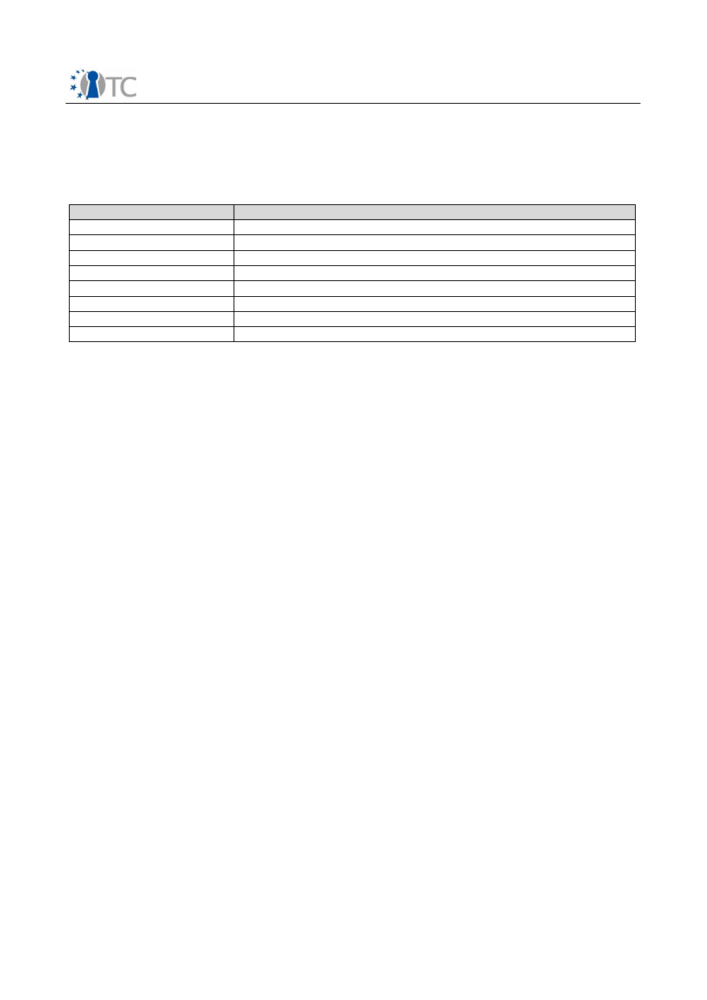
OpenSSL engine/DAA enhancement source code and documentation FINAL | 1.00
9 List of abbreviations
Listing of term definitions and abbreviations used in this document (IT expressions and
terms from the application domain).
Abbreviation
Explanation
AIK
Attestation Identity Key
EK
Endorsement Key
DAA
Direct Anonymous Attestation
SRK
Storage Root Key
TCG
Trusted Computing Group
TLS
Transport Layer Security
TPM
Trusted Platform Module
TSS
TCG Software Stack
10 Referenced Documents
/1/ OpenTC D03c.3 SSL/TLS DAA-enhancement specification
/2/ OpenTC OpenSSL engine/DAA enhancement design specification
/3/ TCG TPM Main Specification (parts 1,2,3)
July 9, 2007,
Version 1.2 Level 2 Revision 103
/4/ TCG Software Stack (TSS) Specification
March 7, 2007,
Version 1.2, Level 1, Errata A
/5/ IETF RFC 4346, The Transport Layer Security (TLS) Protocol Version 1.1
April, 2006
/6/ IETF RFC 4366, Transport Layer Security (TLS) Extensions
April, 2006
/7/ IETF RFC 4680, TLS Handshake Message for Supplemental Data
September, 2006
/8/ Direct Anonymous Attestation
Ernie Brickell, Jan Camenisch, Liqun Chen
CCS '04: 11th ACM conference on Computer and Communications Security
2004
/9/ Simplified Security Notions of Direct Anonymous Attestation and a Concrete
Scheme from Pairings
Ernie Brickell, Liqun Chen, Jiangtao Li
Trust08
2008
Open_TC Deliverable 03c.12
23/24

OpenSSL engine/DAA enhancement source code and documentation FINAL | 1.00
/10/ Pairings in Trusted Computing
Liqun Chen, Paul Morrissey, Nigel P. Smart
Pairing 2008
2008
/11/ Miracl – Multiprecision Integer and Rational Arithmetic C/C++ Library
(http://ftp.computing.dcu.ie/pub/crypto/miracl.zip)
Mike Scott
2007
Open_TC Deliverable 03c.12
24/24
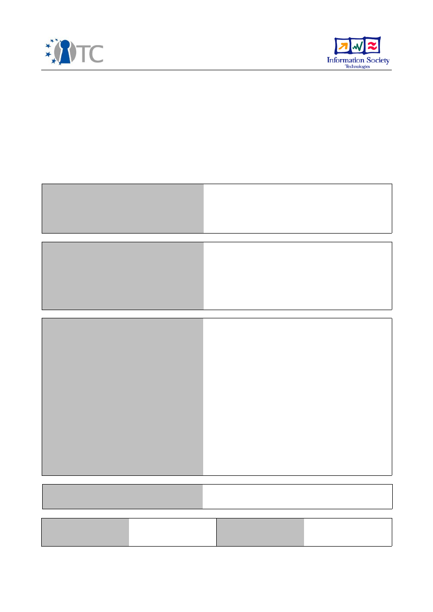
D03c.9 Enhancement of Key Management
Adaptation (KMA)
service source code and documentation
Project number
IST- 027635
Project acronym
Open_TC
Project title
Open Trusted Computing
Deliverable type
Internal document
Deliverable reference number
IST-027635/D03c.9/FINAL 1.10
Deliverable title
Key Management Adaptation (KMA) service
source code and documentation
WP contributing to the deliverable
WP3
Due date
Apr 2008 - M30
Actual submission date
May 2009 (revised version)
Responsible Organisation
Politecnico di Torino
Authors
Gianluca Ramunno and Roberto Sassu (POL)
Abstract
Key and data Management Adaptation layer
(KMA), formerly “High-level Key Manager
service”, is intended to be a software system
built upon TPM and TSS, whose goals are
protecting keys and other sensitive data for
generic applications and services and
binding the access to the protected
information to the integrity of the system.
This document describes the procedures for
building, installing and configuring KMA
version 1.0. This deliverable also includes
D03c.10 and D03c.11.
Keywords
Open_TC, KMA, TPM, TSS
Dissemination level
Public
Revision
FINAL 1.10
Instrument
IP
Start date of the
project
1
st
November 2005
Thematic Priority
IST
Duration
42 months

WP03c.9 Enhancement KMA service source code and documentation FINAL 1.10
Table of Contents
1 Introduction................................................................................................................4
2 Building and installing KMA........................................................................................5
2.1 Important notes (to read carefully before building or using KMA)..........................5
2.2 Introduction...........................................................................................................5
2.3 KMA package dependencies (prerequisites)..........................................................6
2.3.1 Prerequisites.....................................................................................................6
2.4 KMA building procedure.........................................................................................7
2.4.1 Building from the source tarball........................................................................7
2.5 Creating a openSUSE repository with KMA RPMS...................................................8
2.5.1 Using the distributed tarball with RPMS............................................................8
2.5.2 Using the RPMS built as described in the section 2.4.1.....................................9
2.6 Installation.............................................................................................................9
2.6.1 Adding the KMA repository................................................................................9
2.6.2 Set the packages to install................................................................................9
2.6.3 Alternative installation....................................................................................10
2.6.4 Do not reboot..................................................................................................10
3 Preliminary steps......................................................................................................10
3.1 Configuration of the TPM emulator......................................................................10
3.2 Generation of the initram disk.............................................................................11
3.3 TrustedGRUB modifications.................................................................................11
4 Configuration............................................................................................................12
4.1 Preliminary steps.................................................................................................12
4.2 Creation of the file /etc/kma/boot.conf.................................................................12
4.3 Creation of the file /etc/kma/signed_binaries.......................................................13
4.4 Configuration of the protected filesystem............................................................14
4.5 Creation of the file /etc/kma/checkfilelist.............................................................16
4.6 MasterKey generation and NV storage configuration (only for TPM v1.2)............17
4.7 First boot in learning mode..................................................................................18
4.7.1 Checking the filesystem configuration............................................................18
4.7.2 Discovering kernel modules............................................................................19
4.7.3 Discovering applications that need direct access to devices..........................19
4.7.4 Certifying binaries...........................................................................................19
4.7.5 Importing unprotected files in the eCryptfs filesystem....................................19
4.7.6 Learning activity of certified applications........................................................20
4.7.7 Reviewing the libraries loading and direct access detected............................20
4.8 Reboot in enforcing mode....................................................................................20
4.9 Sealing.................................................................................................................20
4.10 Unsealing...........................................................................................................21
4.11 Using KMA..........................................................................................................21
4.12 Maintenance procedures....................................................................................23
4.12.1 Software update and new certified applications............................................23
4.12.2 Adding to the database /etc/kma/logs/mmap_list non discovered libraries...25
4.12.3 Adding to the database /etc/kma/logs/directaccess_list the processes that
require direct access to devices................................................................................26
4.12.4 Allowing new or updated modules to be loaded in the kernel ......................26
4.12.5 Updating the system – a file included in /etc/kma/checkfilelist is changed...27
4.12.6 Updating filesystem policies..........................................................................27
Open_TC Deliverable 03c.9
2/35

WP03c.9 Enhancement KMA service source code and documentation FINAL 1.10
4.12.7 Restoring access to a renamed or a moved eCryptfs file..............................27
5 Removing KMA.........................................................................................................27
6 List of all command used with parameters...............................................................28
7 Workarounds............................................................................................................30
8 PKCS#11 library configuration.................................................................................30
8.1 Token configuration – Administrator side.............................................................30
8.2 Token configuration – User side...........................................................................32
8.3 Install software token in Firefox...........................................................................33
8.4 Test and use the software token with Firefox......................................................34
9 Glossary....................................................................................................................34
10 List of Abbreviations...............................................................................................35
11 Related Work..........................................................................................................35
Open_TC Deliverable 03c.9
3/35

WP03c.9 Enhancement KMA service source code and documentation FINAL 1.10
1 Introduction
Key and data Management Adaptation layer (KMA), formerly “High-level Key Manager
service”, is a software system built upon TPM [1] and TSS [3], whose goals are
protecting keys and other sensitive data for generic applications and services and
binding the access to the protected information to the integrity of the system.
Specific objectives for KMA are:
●
access to protected data granted only if the integrity of system and the
application/service requiring the access are verified;
●
(optional) access to protected data granted only if the system and the
application/service have specific values for selected run-time properties (e.g.
the user currently logged in);
●
isolation between protected data of different applications/services at run-time
to prevent that, if an application gets compromised (e.g. because of a flaw) and
the protected data can be accessed in memory by an attacker, the protected
data of all other applications/services can be accessed by the attacker;
●
data protection robust against off-line attacks to the storage device;
●
generic protection mechanism for data files that does not require any
modification to the application/service at build time, in order to use KMA with
standard distributions;
●
support for the access to TPM keys bound to system/application integrity and
properties, requiring minimal modifications at build time for application directly
using the TPM keys;
●
seamless upgrade of the operating system and the protected applications while
keeping the data protection;
●
support for platforms with a single operating systems running or (optionally) full
virtual machines;
This is the companion document for
D03c.9_KMA_source_code_and_RPMS.zip
, the
tarball including source code and binary RPM packages. This document describes the
procedures for building, installing, configuring KMA version 1.0. Among the examples
it includes the configurations to make secure the following applications: OpenSSH
(client and server), an implementation of SSH [2] protocol, tools for Ipsec configuration
(i.e. setkey) and racoon the implementation of the IKE protocol, subversion client
(svn), other applications like the editor nano. In addition the configuration for
OpenCryptoki is included, an existing software implementation of a PKCS#11
cryptographic device which has been updated to support multiple “tokens”. For this
reason this deliverable actually incorporate an updated version of D03c.4 as well as
D03c.10 and D03c.11.
With respect to the first version of KMA delivered as D03c.4 [4], this final version of
KMA prototype has been improved with mechanisms that avoid any modification of
applications to protect, allowing to secure arbitrary applications or services. It now
includes the shared libraries used by applications for integrity checks. With the
experience of the previous prototype and its enhancement, the overall KMA
architecture/prototype was redesigned and to be more efficient, flexible and robust.
Open_TC Deliverable 03c.9
4/35

WP03c.9 Enhancement KMA service source code and documentation FINAL 1.10
The new prototype supports flexible access rights for the protected folders. These
rights are controlled by the administrator and enforced by KMA throughout the lifetime
of the boot session. We also added access control for critical devices (physical
memory and hard disk). Some critical components running in user space in the
previous prototype have been redesigned and moved to kernel space: eCryptFS was
extended to work with KMA, and we implemented a Mandatory Access Control (MAC)
subsystem based on Linux SMAC.
This version of KMA consists of five main components:
●
Mandatory Access Control, which is intended as an enhancement of SMACK;
●
EcryptFS filesystem with some modifications to adapt it to other components;
●
Policy module which is used by other components to verify if a process can
access a resource;
●
Binary signature runtime verification to verify the integrity of certified
applications;
●
kernel services for TPM.
2 Building and installing KMA
2.1 Important notes (to read carefully before building or using KMA)
KMA version 1.0 includes patches applied to the Linux kernel and it requires the
installation of the boot loader TrustedGRUB which may result in a platform not booting
anymore, if something fails. The passwords in this version are input in clear text. With
respect of the first prototype of KMA, this version has been deeply tested and used on
daily basis with a development machine: it resulted in a stable system. However
security tests have not yet been executed and no formal proof made yet. Finally until
the user does not get familiar with the system and all precautions are taken (like
backing up the bound MasterKey), there exist the risk that in case of problems the
protected data can be irreversibly lost. .
For all aforementioned reasons, KMA version 1.0 must be still considered as
preliminary and experimental software: it should not be installed on
platforms in production while it should be only installed on testing platforms
by experienced users.
2.2 Introduction
KMA version 1.0 is distributed in two forms:
●
a tarball
pol-kma-sources.tar.bz2
including source code and scripts for
building
●
a tarball
pol-kma-rpms.tar.bz2
including RPM packages with binaries only for
direct installation
Both have to be extracted from the tarball
D03c.9_KMA_source_code_and_RPMS.zip
associated to this document.
Two procedures will be specified:
●
building RPMs packages with binaries from the source tarball and installing KMA
Open_TC Deliverable 03c.9
5/35

WP03c.9 Enhancement KMA service source code and documentation FINAL 1.10
from the newly generated RPM packages
●
installing KMA directly from the provided RPM binary packages
Before installing KMA packages, some prerequisites must be met. To build KMA there
are also additional requirements. In the following subsection all prerequisites are
listed, indicating whether they are required for installing only or also for building.
2.3 KMA package dependencies (prerequisites)
The prerequisites are mostly expressed in terms of software packages to be installed.
For each package (or group of packages), it is indicated if the package is required
when
building
KMA or when
installing
it.
2.3.1 Prerequisites
●
a hardware platform with TPM 1.1 or 1.2 and ownership correctly taken;
currently it has been tested only on HP Compaq nw8000, nx6325 and HP
dc7700 platforms [installing]
●
a specific Linux distribution and version installed,
openSUSE 11.1
, with a
specific SUSE Linux kernel, version
2.6.27.21
: with future versions of the Linux
kernel KMA v. 1.0 might not work [building, installing]
●
a file system (e.g. ext3) supporting the extended attributes which must be
enabled to make KMA work [installing]
●
superuser privileges, i.e. access to root account [building, installing]
●
packages required for kernel development (gcc, make, etc.)[building]
●
kernel-source [building]
●
kernel-source (source package) [building]
●
sparse [building]
●
createrepo [building, installing]
●
trousers-devel [building]
●
trustedgrub [installing]
●
openCryptoki (source package) [building]
●
MozillaFirefox (source package) [building]
●
libica [building]
●
libgnomeui-devel [building]
●
libidl-devel [building]
●
mozilla-xulrunner190-devel [building]
●
orbit-devel [building]
●
update-desktop-files [building]
●
trousers [installing]
●
tpm-tools [installing]
In order to use the sample configuration files without any modifications, the packages
Open_TC Deliverable 03c.9
6/35
WP03c.9 Enhancement KMA service source code and documentation FINAL 1.10
nano, subversion, ipsec-tools are also required for the configuration phase of KMA.
With hand-crafted configuration files or with sample configuration files amended with
deletion of entries for nano, subversion and ipsec-tools, these packages do not require
to be installed.
2.4 KMA building procedure
2.4.1 Building from the source tarball
1. Copy the distributed tarball with source code (
pol-kma-sources.tar.bz2
) to a
temporary directory (
TEMPDIR
, where “
TEMPDIR
”
is a full path including the
root “/” of the file system
), enter this directory and extract the content from
the tarball with the following command;
1.
tar jxf pol-kma-sources.tar.bz2 -C TEMPDIR
2. Enable the repository “
openSUSE-11.1-Source
”
1. Go to YaST/Software Repositories
2. Click the item “
openSUSE-11.1-Source
” and check the box “Enabled”
3. Press the OK button to confirm
3. Execute these commands to download required packages:
1.
zypper si <source packages listed in the section 2.3.1>;
2.
zypper install <packages listed in the section 2.3.1>;
3.
wget
http://mozilla.mirrors.easynews.com/mozilla/firefox/releases/3.0
.10/linux-i686/en-US/firefox-3.0.10.tar.bz2
-P
/usr/src/packages/SOURCES
4.
wget http://download.berlios.de/tpm-
emulator/tpm_emulator-0.5.1.tar.gz -P /usr/src/packages/SOURCES
4. Enter the
/usr/src
directory and take note of the kernel source directory and
the version;
5. From the TEMPDIR/pol-kma-filemac-1.0
path enter the directory
“
build/config/i386
”;
6. Execute the command:
cp kma.full.default-<kernel-version> kma
;
7. From the TEMPDIR/pol-kma-filemac-1.0 path enter the directory “
build”
;
8. Edit the file “
generate_packages.sh
” and replace the value of the variable
“
KERNELDIR
” with the full path of installed kernel sources;
9. Execute the script
generate_packages.sh
without any parameter;
10.From the TEMPDIR/pol-kma-filemac-1.0 path enter the directory “
dist”
;
11.Edit (if the case) the file “
packages_list
” and add the list of “spec” files to
build; these are currently used:
1. kernel-kma-2.6.27.21.spec
2. kernel-kma-source.spec
Open_TC Deliverable 03c.9
7/35

WP03c.9 Enhancement KMA service source code and documentation FINAL 1.10
3. kma-boot.spec
4. kma-utils.spec
5. libtpm11.spec
6. libtpm12.spec
7. opencryptoki_kma.spec
8. firefox-bin.spec
9. tpm_emulator.spec
12.Execute the script “
buildkma.sh
”; if a package cannot be compiled because of
a missing dependence, fix the issues and restart the script from the point it was
interrupted using the command
./buildkma –-resume <spec failed>
13.The build of tpm_emulator.spec fails. Execute these steps:
1. The package kernel-kma-source and kernel-kma must be generated before
the TPM emulator
2. Execute
rpm -Uhvi /usr/src/packages/RPMS/i586/kernel-kma-source-
<kernel version>-<kma version>kma.i586.rpm
3. Execute
rpm -Uhvi /usr/src/packages/RPMS/i586/kernel-kma-<kernel
version>-<kma version>kma.i586.rpm –nodeps
4. Execute
rpm -Uhvi /usr/src/packages/RPMS/i586/kernel-kma-base-
<kernel version>-<kma version>kma.i586.rpm –nodeps
5. Execute
uname -r
and take the string after the last “
-
” (it can be
default,
pae, xen
), which is called kernel flavor
6. Edit the file tpm_emulator.spec and search for the line:
1.
%define flavors_to_build kma default pae
7. Modify this line as follow:
1.
%define flavors_to_build kma <your kernel flavor>
;
8. Execute the command
./buildkma.sh --resume tpm_emulator.spec
14.Get the newly generated RPM packages from the directory
/usr/src/packages/RPMS/i586
.
2.5 Creating a openSUSE repository with KMA RPMS
2.5.1 Using the distributed tarball with RPMS
1. Copy the distributed tarball with rpms (
pol-kma-rpms.tar.bz2
) to a temporary
directory (
TEMPDIR
, where “
TEMPDIR
”
is a full path including the root “/” of
the file system
), enter this directory and extract the content from the tarball
with the following command;
1. tar jxf pol-kma-rpms.tar.bz2
2. Execute the command
createrepo
TEMPDIR/RPMS
;
Open_TC Deliverable 03c.9
8/35

WP03c.9 Enhancement KMA service source code and documentation FINAL 1.10
2.5.2 Using the RPMS built as described in the section 2.4.1
1. Create a new directory called TEMPDIR;
2. Copy the directory
/usr/src/packages/RPMS
to TEMPDIR, executing the
command
cp -R /usr/src/packages/RPMS TEMPDIR
;
3. Execute the command
createrepo TEMPDIR/RPMS
;
2.6 Installation
Two alternative methods for installation are described in the following. Both of them
require that Yast is configured with the KMA repository containing the packages just
created or unpacked.
2.6.1 Adding the KMA repository
1. Open YaST/Software repositories;
2. Click on “Add”;
3. Select “Local Directory”;
4. Type “
/<pathname of TEMPDIR>/RPMS
” in the field “
Path to Directory
” and
an identifier in the field “
Repository Name
”.
2.6.2 Set the packages to install
1. Open/YaST/Software Management
2. From the “Filter” field select “Repositories”
3. From the list of repositories select the KMA repository
4. From the package list, at the right of the screen, select these packages:
●
kernel-kma
:
REQUIRED
●
kernel-kma-base
:
REQUIRED
●
kernel-kma-extra
:
REQUIRED
●
kernel-kma-source
:
REQUIRED
to build additional kernel modules from
scratch
●
kma-utils
:
REQUIRED
●
kma-boot
:
REQUIRED
●
libtpm11
:
REQUIRED
ONLY
if the TPM version is 1.1b
●
libtpm12
:
REQUIRED
ONLY
if the TPM version is 1.2
●
tpm_emulator
:
REQUIRED
ONLY
if the platform doesn't have an hardware TPM
(the package
libtpm11
is required)
●
tpm_emulator-kmp-kma
:
REQUIRED
ONLY
if the platform doesn't have an
hardware TPM
●
tpm_emulator-kmp-<your current kernel flavor>
:
REQUIRED
ONLY
if the
platform doesn't have an hardware TPM
Open_TC Deliverable 03c.9
9/35

WP03c.9 Enhancement KMA service source code and documentation FINAL 1.10
●
openCryptoki_kma
:
OPTIONAL
to use PKCS#11 software token protected by
KMA
●
openCryptoki_kma-32bit
:
OPTIONAL
to use PKCS#11 software token
protected by KMA
●
MozillaFirefox-bin
:
REQUIRED
ONLY
if one of the packages openCryptoki or
openCryptoki_kma is installed.
2.6.3 Alternative installation
This alternative path for the installation can be used if there is the need to change the
default kernel configuration with regards to modules and if additional modules need to
be built.
1. Install all required packages (the
kernel-kma-source
must be included) as
described in the section 2.6.2 except:
kernel-kma
,
kernel-kma-base
,
kernel-
kma-extra, tpm_emulator, tpm_emulator-kma-kma
. Ignore package
dependencies.
2. Copy the predefined kernel configuration file “
.config
” from the directory
/usr/src/linux-<kernel version>-<kma version>kma-obj/i386/kma
to
/usr/src/linux-<kernel version>-<kma version>kma
;
3. Enter the directory
/usr/src/linux-<kernel version>-<kma version>kma
;
4. Execute
make menuconfig
to edit the kernel configurations;
5. Execute
make all
;
6. Execute
make modules_install
;
7. Execute
cp arch/x86/boot/bzImage /boot/vmlinuz-<kernel version>-<kma
version>kma
;
8. Execute
cp .config /boot/config-<kernel version>-<kma version>kma
;
9. Execute
cp System.map /boot/System.map-<kernel version>-<kma
version>kma
;
10.If required unpack the tpm_emulator tarball from /
usr/src/packages/SOURCES
and follow the standard procedure to compile and install this software.
2.6.4 Do not reboot
Even if Yast proposes to reboot, this operation must not be done at this point.
3 Preliminary steps
3.1 Configuration of the TPM emulator
If the platform has not an hardware TPM, the TPM emulator is required in order to use
KMA. It must be configured using the packages Trousers and TPM tools. In the first run
of this software these commands must be executed with the root privilege:
1.
modprobe tpmd_dev
(executing the kernel-side portion of the TPM emulator)
2.
tpmd clear
(executing the user-side portion of the TPM emulator)
Open_TC Deliverable 03c.9
10/35

WP03c.9 Enhancement KMA service source code and documentation FINAL 1.10
3.
service tcsd start
(executing the trouser daemon)
4.
tpm_takeownership
(taking the ownership of the software TPM)
If a hardware TPM is present in the platform, the requirement is that the ownership is
taken and the Administrator has the knowledge of the owner password (which must be
encoded with ASCII characters). The Administrator must decide if he/she wants to
input a blank SRK password or input a not null one. In the latter case, the user is
required to input the SRK password at every boot and the variable
srk_ask=yes
must
be set in the configuration file
/etc/kma/boot.conf
(see section 4.2).
IMPORTANT NOTE: at every subsequent reboot, for both configuring and
using the system, the following commands must be executed:
1. (only if the TPM emulator is used)
modprobe tpmd_dev
2. (only if the TPM emulator is used)
tpmd
3.
service tcsd start
3.2 Generation of the initram disk
After all packages are installed, the initram disk must be generated another time
because the proper TPM kernel module must be loaded before the KMA script is
executed. These steps must be performed:
1. Edit the file
/etc/sysconfig/kma
;
2. Specify the TPM kernel module name as value of the variable
“
TPM_MODULE
”
.
Acceptable values:
1. TPM emulator:
“
tpmd_dev
”
;
2. Infineon TPM: “
tpm_infineon
”;
3. Atmel TPM: “
tpm_atmel
”;
4. NSC TPM: “
tpm_nsc
”;
3. If there is the need to change the standard configuration of the initram disk,
edit the file /lib/mkinitrd/scripts/boot-kma.sh;
4. Add to the line which starts with “#%modules: “ the kernel modules that are
required to mount specific filesystems listed in
/etc/fstab
or the removable
device where the MasterKey will be stored;
5. Currently there is an issue that mkinitrd does not recognize the new installed
scripts. Execute the command “
ls /lib/mkinitrd/scripts
”
6. Generate the new initrd with the command (to insert the right file names see
the content of the directory
/boot
):
●
mkinitrd -k /boot/vmlinuz-<kernel_version>-<kma_version>kma -i
/boot/initrd-<kernel_version>-<kma_version>kma -M
/boot/System.map-<kernel_version>-<kma_version>kma
3.3 TrustedGRUB modifications
To simplify the management of the KMA it is useful to create three different entries in
the TrustedGRUB menu:
Open_TC Deliverable 03c.9
11/35

WP03c.9 Enhancement KMA service source code and documentation FINAL 1.10
●
One that executes the KMA in enforcing mode (this is created by the kernel-kma
RPM package during the installation; add the extra parameter in the kernel
command line:
kma_mode=enabled
and add the string “
ENABLED
” in the entry
name);
●
One that executes the KMA in learning mode (add the extra parameter in the
kernel command line:
kma_mode=learning
and add the string “
LEARNING
” in
the entry name);
●
One that executes the KMA in disabled mode (add the extra parameter in the
kernel command line:
kma_mode=disabled
and add the string “
DISABLED
” in
the entry name);
To create the new entries:
1. Go to YaST/System/Boot loader;
2. Click on the existent KMA entry;
3. Click the button “Add” and select “Clone Selected Section”;
4. In the field “Section name” add the string previously suggested;
5. In the field “Optional Kernel Command line parameter” add to the end the
parameter listed before.
Note that the original entry for KMA created by installing the packages and used as
source for cloning, must be never used and can therefore be deleted.
4 Configuration
4.1 Preliminary steps
The package “
kma-boot
” when installed copies sample configuration files to the
/etc/
kma/sample_config
directory. The Administrator can edit those files and after must
place the final version of them in the
/etc/kma
directory. In particular the files stored
in
/etc/kma/sample_config
can be copied and used as they are; the files stored in
/etc/kma/sample_config/user1
require the creation of the user
user1
with
UID=1000
and
GID=100
, to be used as they are. If UID an GID for
user1
are different, then the
sample files must be updated. In particular the content of the file
/etc/kma/sample_config/user1/template.conf.user1
must be appended to the file
/etc/kma/template.conf
.
4.2 Creation of the file /etc/kma/boot.conf
This file is used to set some variables that affect the behaviour of the KMA script
placed in the initram disk.
●
srk_ask=[yes/no]
: defines if the SRK password must be asked to execute KMA
commands on TPM, and during the normal unsealing procedure at every boot;
this variable must set to 'no' if the SRK is set to the well-known secret (i.e.
during the TPM take ownership operation) and 'yes' if the SRK password is set;
the default value is 'no', if the variable is absent;
●
BLOBDEV=[pathname]
: defines the external device (the partition) where to save
the MasterKey; it must be present only if the MasterKey is not stored on the root
Open_TC Deliverable 03c.9
12/35

WP03c.9 Enhancement KMA service source code and documentation FINAL 1.10
file system but on an external device;
●
BLOBDEV_FSTYPE=[fs type]
: defines the filesystem type of the partition
selected; it must be present only if
BLOBDEV
is present;
●
MOUNTPOINT=[pathname]
: defines the pathname where the protected filesystem
will be mounted; the pathname is considered after all filesystem listed in
/etc/
fstab
are mounted; this is the only mandatory variable.
4.3 Creation of the file /etc/kma/signed_binaries
This file describes what applications must be certified by the Administrator, in order to
use the protected filesystem or to directly access devices. Each application will be
associated to a “
TAG
”: this is a property introduced by KMA to distinguish between
binary executables (identified by means of their SHA1 digest), its values are four
characters long and it is used when setting policies.
The format of this file is:
<pathname> <Authority ID> <value>
where:
●
pathname
: the file to certify;
●
Authority ID
: is the property associated to the file. Currently only the TAG is
associated to a binary and the identifier is always zero;
●
value
: the TAG value associated to the binary file: it must be unique.
The utility
certbin
creates the extended attribute “
kma_sign
”, whose content is
protected for confidentiality and integrity using the MasterKey, for each file listed and
appends this to the file itself. This is a configuration example:
/usr/bin/ssh
0
0001
/usr/sbin/sshd
0
0002
/usr/sbin/racoon
0
0003
/usr/sbin/setkey
0
0004
/usr/bin/ssh-keygen
0
0005
/usr/bin/nano
0
0006
/bin/ls
0
0007
/bin/rm
0
0008
/usr/bin/svn
0
0009
/usr/sbin/smartd
0
0010
/sbin/swapon
0
0011
/lib/udev/edd_id
0
0012
/lib/udev/scsi_id
0
0013
/lib/udev/ata_id
0
0014
/lib/udev/vol_id
0
0015
/usr/sbin/dmidecode
0
0016
/opt/firefox/firefox-bin
0
0017
/usr/sbin/pkcsconf
0
0018
/opt/thunderbird/thunderbird-bin
0
0019
/usr/bin/Xorg
0
0020
Open_TC Deliverable 03c.9
13/35

WP03c.9 Enhancement KMA service source code and documentation FINAL 1.10
4.4 Configuration of the protected filesystem
The purpose of KMA is to securely store applications' data files in order to prevent off-
line attacks and to restrict accesses only to authorized subjects, whose properties are
verified by the kernel, trusted by assumption. To achieve this goal, the directories
used by applications and their content are moved to an cryptographic filesystem, the
access is restricted by a Mandatory Access Control module that resides in the kernel
and symbolic links are created in old locations in order to preserve the pathname. New
directories created in the cryptographic filesystem are called protected directories.
The Mandatory Access Control has these goals:
1. restrict accesses on files and directories in the cryptographic filesystem
depending on policies written by the Administrator;
2. forbid the creation of symbolic links in the cryptographic filesystem: all files
must be encrypted and should not point to others in a unencrypted filesystem;
3. protect symbolic links that replaced original application directories: the goal is
to force the application to access the cryptographic filesystem when refers to
old pathnames.
Before writing the policy for an application, the Administrator must:
1. Assign a tag to the application (described in the section 4.3);
2. Examine the behaviour of the application (single process, multiple processes,
multi thread);
3. Examine the application data model (i.e. build a list of files and directories
used);
Then, for discovered directories the directory policy must be added to the file
“
/etc/kma/template.conf
”.
The first two elements are:
●
Protected directory pathname in the cryptographic filesystem
○
directory <pathname> {
●
The discovered directory pathname that will be replaced with a symbolic link to
the protected directory
○
bounddir <pathname>
NOTE: the pathname specified in the “bounddir” parameter in the policy
statement must follow these rules:
1. The pathname of the parent directory must exist at the time the
system is booted in learning mode (executing the procedure described
in the sections 4.7 until 4.10 is recommended);
2. Components of the pathname of the parent must be directories (trees
with symbolic links are not allowed).
These following parameters are used to set correct permissions for the protected
directory:
●
POSIX permission
○
permission <mask>
Open_TC Deliverable 03c.9
14/35
WP03c.9 Enhancement KMA service source code and documentation FINAL 1.10
●
User and group owner
○
owner <uid:gid>
Then subjects allowed to access the directory must be defined using the parameter
“
access_mask
”. The term subject refers to a process with a set of properties for
example the effective UID or the KMA introduced TAG. These properties are used as
access control criteria for accessing the protected filesystem: each policy specifies the
values that a subject must have at the time it opens a file or a directory. Currently
these are the properties defined:
●
TAG
;
●
effective user identifier
(the current user privilege that can be modified
by the application itself by invoking the system call
setuid()
).
While the effective UID is stored in a standard kernel structure associated to the
process, the TAG is extracted from the extended attribute by a KMA kernel module
that decrypts the content, verifies if the SHA1 of the executable bound matches this
read from the payload and verifies the integrity of the latter using the MasterKey.
The object that permits to specify values that a subject must have for the defined
properties to access the protected filesystem is called “
access vector
”.
An example is:
|TAG(4 characters)|UID(5 characters)|
General case (when N properties are defined):
|Property#1 value|Property#2 value|...|Property#N value|
Acceptable values depend on the property, but a special symbol (i.e. a “wild card”)
has been defined to represent “all possible values”. In order to specify that all values
are allowed for a property the relative field of the access vector must be filled with a
string of the character “X”.
This is the complete directory policy of a protected directory:
directory /system/ssh {
bounddir /etc/ssh
permission 755
owner 0:0
access_mask |XXXX|XXXXX|
declarevar UID=00000
policyfile /root/etc/kma/ssh_system_config
}
Parameters:
●
directory
: is the pathname of the new directory will be created in the
protected filesystem;
●
bounddir
: is the old pathname of the directory to protect;
●
permission
: POSIX permission mask;
●
owner
: userID:groupID identifiers;
●
access_mask
: access vector allowed to read/write/execute in the protected;
Open_TC Deliverable 03c.9
15/35

WP03c.9 Enhancement KMA service source code and documentation FINAL 1.10
directory; may be used multiple times to grant the permission to different
subjects;
●
declarevar
: this parameter is used to define some variables which value will be
replaced in the policy file;
●
policyfile
: pathname of the file policy that must have the prefix “
/root/
”
(because this file is read within the initram disk);
The policy file determines for each file in the protected directory:
●
subjects allowed to create (access vector followed by the character “c”)
●
subjects allowed to access (access vector followed by the type of operation
granted)
depending on its name. Subjects with create permission have read, write, append
permission: it is not necessary to specify an access policy for them. The “*” character
is used to define the default policy, which must be specified as last statement for files
which name does not match any of other listed. If the default policy is not present,
files with name not listed cannot be created under the protected directory.
An example can be:
file id_rsa {
|0005|$UID|000|
c
|0001|$UID|000|
r
}
Parameters:
●
file
:
contains the filename of the file will be created
●
<access vector>
:
if followed by the letter 'c' it means that the subject is
allowed to create; if followed by '
r
', '
w
', '
x
', '
a
' or a combination, these are
respectively the read/write/execute/append permissions granted to subjects
with this access vector. Multiple access vectors can be defined in the same
policy.
4.5 Creation of the file /etc/kma/checkfilelist
Contains the list of files that will be measured at boot and which SHA1 extends the
PCR#13 of the TPM. Typically these are the files measured:
●
/etc/fstab
●
/etc/kma/boot.conf
●
/etc/kma/template.conf (and the files whose pathname is specified
in the policyfile parameter)
●
/etc/kma/logs/mmap_list (introduced in section 4.7.6)
●
/etc/kma/logs/directaccess_list (introduced in section 4.7.6)
●
/etc/kma/logs/modules_list (introduced in section 4.7.2)
●
/etc/kma/signed_binaries
Open_TC Deliverable 03c.9
16/35
WP03c.9 Enhancement KMA service source code and documentation FINAL 1.10
4.6 MasterKey generation and NV storage configuration (only for TPM
v1.2)
The last task to execute before booting the KMA kernel in learning mode is to setup a
new MasterKey: this is done by executing these steps:
1. Be sure that the TPM driver is loaded: execute the command
modprobe <your TPM module>
1. For the TPM emulator run the additional command
tpmd
2. Be sure that Trousers daemon is not running: execute the command
service tcsd stop
;
3. Execute the command
init_masterkey.sh
without any parameter;
4. Restart Trousers daemon for the next steps: execute the command
service tcsd start
.
This operation may require to plug an external device, before saving the new
MasterKey; otherwise this will be saved in the default path
/etc/kma/keys
.
A new MasterKey is randomly generated using the device “
/dev/urandom
” and a new
TPM wrapping key is created to encrypt it. In order to protect the unwrapping
operation the Administrator must set, for this TPM key, a password: the knowledge of
this secret allows an user to boot the system in learning mode, to access all data in
the protected filesystem and to certify binaries.
For platforms with TPM 1.2 it is available a feature that permits to check the “version”
of the sealed blob containing the MasterKey. This is useful in the following case: the
Administrator creates a new sealed blob when a component in the measurement list
changes; if an attacker has a copy of the old sealed blob and he knowns exactly the
previous state of the changed component, he will be able to use the MasterKey with
the old configuration, which may be replaced due to a discovered vulnerability.
In order to avoid this situation the Administrator must attach an unique label to the
MasterKey, during the generation process and stores the same label in a portion of the
NV storage of the TPM.
During the boot, the kernel module which performs the unsealing reads the label
stored within the MasterKey and compares it with the one read from the TPM. If they
are different, the kernel module forbids the access to the MasterKey and the system
must be rebooted.
When the Administrator updates the sealed blob he writes a new label with the
MasterKey and in the NV storage: this way old sealed blobs cannot be used.
If the utility
init_masterkey.sh
finds a compatible TPM, it asks to the Administrator
the label to append to the MasterKey; otherwise the feature will be disabled. For now,
the size is hard coded and must be exactly 10 characters long.
In order to define and protect the NV storage portion these steps must be performed:
1. Execute the command:
kma_define_nv
1. Enter the TPM owner password;
2. Enter the secret will be used to protect this portion from writes;
2. Execute the command:
kma_write_nv
Open_TC Deliverable 03c.9
17/35

WP03c.9 Enhancement KMA service source code and documentation FINAL 1.10
1. Enter the secret set for the portion of the NV storage;
2. Enter the same label appended to the MasterKey when the utility
init_masterkey.sh
was executed.
In case of the error TSS_E_NV_AREA_EXIST is displayed, it means that the index has
already defined. At the moment it is not possible to define an alternate address of the
TPM where to place the label: the Administrator must move data in the existent index
to another and call the command
kma_release_nv
to release the space. Then the
steps described above must be re-executed.
In order to verify if the label has correctly written in the NV storage the Administrator
can execute the utility
kma_read_nv
without any parameter. The utility asks to insert
the label 10 character long must be inserted.
After the script has been executed, these files are created under the path
/etc/kma/keys
:
1.
masterkey.key
: TPM wrapping key, private portion;
2.
masterkey.pem
: TPM wrapping key, public portion;
3.
masterkey.blob
: MasterKey blob bound to the TPM wrapping key.
4.7 First boot in learning mode
The KMA-enabled kernel should be started for the first time in learning mode in order
to:
1. Check the filesystem configuration;
2. Discover kernel modules loaded and identify what are necessary for the system
to work correctly;
3. Discover applications that need direct access to devices;
4. Certify applications;
5. Importing existent data files of certified applications
6. Discover and measure libraries used by certified applications.
The following sub paragraphs describe how to set up correctly the KMA before it is
executed in enforcing mode.
To boot the system in learning mode select the proper entry in the TrustedGRUB
menu.
4.7.1 Checking the filesystem configuration
The ecryptfs filesystem is mounted in the initram disk. The mount parameter
“
kmatemplate=
” introduced by KMA is used to specify the corresponding filesystem
policy to be loaded. During the learning phase the Administrator must verify if the
syntax is correct. To do this operation he must perform the command “
dmesg | more
”
and check these lines:
KMA learning mode enabled
Inserted auth tok with sig [2d8f66ccb71c579f] into the user session
keyring
mask: |XXXX|XXXXX|XXX|, access: 7
Open_TC Deliverable 03c.9
18/35

WP03c.9 Enhancement KMA service source code and documentation FINAL 1.10
name UID - value 00000
mask: |0006|00000|000|, access: -1
mask: |0006|XXXXX|000|, access: 6
mask: |0001|XXXXX|000|, access: 4
Info: added file ssh_config
If an error is encountered, the following message appears and the Administrator must
recheck the policy files:
Failed to initialize protected filesystem
The Administrator must fix the files by booting the KMA in “disabled” mode and then
must recheck the configuration in learning mode.
4.7.2 Discovering kernel modules
The Administrator must detect which kernel modules will be allowed to load when the
KMA is executed in enforcing mode and must check if they contain malicious code.
When the system is started in learning mode some modules are loaded automatically
when initializing devices. Others must be manually inserted by the Administrator using
the command
insmod
or
modprobe
. Then, when all required modules are loaded, the
Administrator can review the list and the digest of every item by executing the
command
kma_modules_db /etc/kma/logs/modules_list
and typing the command
view<ENTER>
. To exit the application type the command
quit<ENTER>
.
4.7.3 Discovering applications that need direct access to devices
The Administrator can discover them by prompting the command:
dmesg | grep
“signed”
. This type of message will be displayed:
“KMA direct access: process X
needs to be signed”
. If the Administrator wants to allow an application to access
directly a device he must add a new record in the file
/etc/kma/signed_binaries.
NOTE: the process name specified in the log message may be incomplete: to
find the full pathname of the binary executable this command should be
performed: find / -name “<part of the process name>*”.
4.7.4 Certifying binaries
The Administrator after having verified binaries listed in the file
/etc/kma/signed_binaries
executes the utility
certbin
. The syntax is:
●
certbin --list /etc/kma/signed_binaries;
If the message “
hashing of <filename> failed
” appears the Administrator must
recheck the file
/etc/kma/signed_binaries
and correct the path of the not found
executable(s). A requirement for booting the KMA in enforcing mode is that the
mentioned file contains valid pathnames and the command
certbin
is executed: this
is necessary in order to prevent that certified binaries are replaced by others
unsigned, when KMA is not loaded, and users execute them without being noticed.
4.7.5 Importing unprotected files in the eCryptfs filesystem
During the previous boot (the first one in learning mode) the KMA creates protected
directories in the eCryptfs filesystem as specified in the file
/etc/kma/template.conf
,
renames directories specified in the parameter “
bounddir
” in the unprotected
Open_TC Deliverable 03c.9
19/35

WP03c.9 Enhancement KMA service source code and documentation FINAL 1.10
filesystem by adding the suffix “
_save
” and creates instead symbolic links to the
protected directories with the old name; the KMA script creates the file
/etc/kma/files_saved
that contains records with the renamed directory in the
unprotected filesystem and the directory in the protected filesystem where existent
files would be copied. An example file ready to use is provided in
/etc/kma/sample_config
. The Administrator decides, for all directories, what files to
copy to protected locations and executes the command
kma_makesecure.sh
by
specifying as parameters the file
/etc/kma/files_saved
and a output file that will
contain the full pathname of all files saved in the eCryptfs filesystem and the relative
SHA1 digests. This command automatically copies files from directories in the
unprotected filesystem to the protected one. The file specified as second parameter of
the script can be included in the measurement list and it can be used by users to
verify their original files are not modified.
4.7.6 Learning activity of certified applications
At this point rebooting again in learning mode is highly recommended to discover
libraries and access to devices in case of system services. In other cases is sufficient
to run the desired application and to use it for a while to ensure all libraries required
have been loaded.
The kernel writes discovered libraries and device accesses respectively in files
/etc/kma/logs/mmap_list
and
/etc/kma/logs/directaccess_list
.
4.7.7 Reviewing the libraries loading and direct access detected
The Administrator run these utilities:
1.
kma_mmap_db /etc/kma/logs/mmap_list
to review all libraries mapped in
memory by certified applications;
2.
kma_directaccess_db /etc/kma/logs/directaccess_list
to review direct
accesses to devices performed by certified applications.
4.8 Reboot in enforcing mode
As final part of the configuration phase a reboot cycle must be executed: the KMA
enable kernel is executed in enforcing mode by selecting the proper entry in the
TrustedGRUB menu.
4.9 Sealing
The MasterKey is sealed when the KMA enabled kernel is executed in enforcing mode
and when the blob is not present in the default path or in a removable device. This
procedure asks the Administrator password set by the
init_masterkey.sh
utility and
permits to modify it if needed. If a TPM v1.2 is detected, the kernel module which
performs the operation compares the label read from the NV storage and the one
extracted from the MasterKey and alerts the Administrator if they are different. Lastly
the file
blobfile
will be created in the default path
/etc/kma/keys
or in an external
device. The system reboots and at this point the KMA is suitable for use by regular
users of the platform.
Open_TC Deliverable 03c.9
20/35

WP03c.9 Enhancement KMA service source code and documentation FINAL 1.10
4.10 Unsealing
During the normal system start up in enforcing mode a kernel module tries to unseal
the MasterKey after TPM registers are extended with all measurements. If a TPM v1.2
is detected this module compares the label extracted from the MasterKey with this
read from the NV storage. If the unsealing or the label check fail, KMA will not be
activated and the system reboots: the system must be booted in learning mode to fix
the label (but the Administrator password is required) or with KMA completely
disabled.
4.11 Using KMA
After the system completed the boot cycle, regular users can log into the platform and
start to save theirs files in the protected filesystem. Thanks to symlinks users continue
to use previous directories, with the difference that the files effectively reside in the
cryptographic filesystem and the access is restricted depending on the policies written
by the Administrator. An user can know how to access a directory or a file in the
cryptographic filesystem by using the utility “
kma_policy.sh
”. The syntax is:
kma_policy.sh <pathname of the symlink>
An example of execution of this command is:
Directory: /root/.ssh
USER: root, Application: all
Policy file: /etc/kma/ssh_users_config
File: id_rsa
User: root, Application: /usr/bin/ssh-keygen, Permissions: Create
User: root, Application: /usr/bin/ssh, Permissions: Read
File: id_rsa.pub
User: root, Application: /usr/bin/ssh-keygen, Permissions: Create
User: root, Application: all, Permissions: Read
File: known_hosts
User: root, Application: /usr/bin/ssh, Permissions: Create
User: root, Application: /usr/bin/ssh, Permissions: Read, Write,
Append
File: authorized_keys
User: root, Application: /usr/bin/nano, Permissions: Create
User: root, Application: /usr/sbin/sshd, Permissions: Read
User: root, Application: /usr/bin/nano, Permissions: Read, Write
When a user tries to access a file he can encounter these types of errors:
1.
“<command>: cannot open directory/file <name>: Permission denied“.
Possible causes:
1. The user has not sufficient privileges (POSIX) to open the file/directory;
Open_TC Deliverable 03c.9
21/35
WP03c.9 Enhancement KMA service source code and documentation FINAL 1.10
2. The KMA policy for the file/directory forbids this user/process to access the
file
2.
“<command>: cannot open directory/file <name>: Input/Output Error”
.
Possible causes:
1. The file has been moved from the original position at the time of creation;
2. The file has been encrypted with another key
3. Abnormal program termination and
“Killed”
message. Possible causes:
1. The application ran tried to map a library not authorized
4.
“FATAL: Error inserting <module name> ... Invalid module format”
.
Possible causes:
1. The module has been compiled with another kernel
2. The module is not in the database of allowed modules list
If the system returns “
Permission denied
” or if a system service failed to start, the
user can check the reason by executing the command
dmesg
and seeing error
messages. A typical error message is:
Denying access: kdesvn[4856] -> <filename> - reason: permission 1 not
allowed to subject |XXXX|01000|
The permission requested is reported with decimal notation. The access vector
contains the actual values of the properties
|TAG|effective UID|
. If the value in the
TAG field is “
XXXX
” this means that the application is not certified or that the
verification of the certification failed because for example the binary of the application
has been updated. In the second situation the maintenance procedure in the section
4.12.1 must be executed by the Administrator.
The “
Permission denied
” error is also displayed when an user tries to create a new
file with an application not listed in the policy file. The detailed message in the system
log is:
Found policy create for id_rsa
Denying create: bash[3990] with mask |XXXX|00000| is not allowed to
create the file <filename>
The “
Input/Output Error
” issue depends on the fact that eCryptfs files cannot be
moved from their original location after they are created. This feature is necessary for
the correct behaviour of the Mandatory Access Control that apply policies on files and
directories depending on their pathname. In order to enforce the position, a KMA patch
has been inserted in the eCryptfs code that appends in the header of each file a keyed
digest of the file name and the parent directories until the root using the File
Encryption Key (FEK) as key. The move operation is always denied when the MAC is
active; this can be done when another kernel is loaded or when the KMA is not in
enforcing mode. The next time a moved file is accessed, eCryptfs returns I/O error. A
detailed error message is written in the system log and it's like this:
ecryptfs_parse_packet_set: Error: file /system/ssh/sshd_config in the
protected filesystem has been moved from the original position
.
Another error may be encountered when the user tries to run a certified application
which is not correctly configured. The application is terminated and the system
Open_TC Deliverable 03c.9
22/35

WP03c.9 Enhancement KMA service source code and documentation FINAL 1.10
prompts the message “
Killed
”. The maintenance procedure described in the section
4.12.1 must be followed to solve the issue.
The error
“FATAL: Error inserting <module name> ... Invalid module format”
may happen when the root user tries to load a module using the command
insmod
or
modprobe
. If the module is not present in the database of allowed modules or it has
been modified (there's a module with the same name but with different digest) the
kernel denies the operation and prompts in the system log this message:
Cannot load module <module name>: not found in the database or wrong
digest
4.12 Maintenance procedures
4.12.1 Software update and new certified applications
Adding new certified applications or updating the existent ones is a critical process
because the configuration created during the learning process may change: in case of
new certified applications the database of mapped libraries will include new libraries,
the database of direct accesses to devices may include new rules; in case of updated
packages, the libraries used by certified applications may change and their new
digests must be written in the database.
Another aspect is that the update operation is not possible when KMA is started in
enforcing mode: if the application set to be updated has been already executed, its
libraries are accessible only in read-only mode and cannot be replaced.
Lastly when installing or updating a RPM package, multiple executables may be
involved in this procedure (for example for the package
openssh
the certified
applications are
/usr/bin/ssh
,
/usr/sbin/sshd
,
/usr/bin/ssh-keygen
);
The Administrator must follow these steps to perform the system update or to add a
new certified application:
1. Start the system in learning mode;
2. Perform the system update or install the new application;
1. For a new installed application add the executable to the file
/etc/kma/signed_binaries
(see section 4.3)
2. For a new installed application build the filesystem configuration and add
new files to the measurements file list
/etc/kma/checkfilelist
(it may be
not necessary in case of the application only need to access directly to a
device) (see sections 4.4 and 4.5);
3. Execute the utility
init_masterkey.sh
(stop Trousers:
service tcsd stop
);
1. Delete the old MasterKey (confirm when requested);
2. Enter the Administrator password (and the SRK password, if requested);
3. Set a new label (TPM v1.2 only);
4. Execute the utility
kma_write_nv
(TPM v1.2 only - start Trousers:
service tcsd
start
);
1. Enter the secret associated to the NV storage portion;
Open_TC Deliverable 03c.9
23/35
WP03c.9 Enhancement KMA service source code and documentation FINAL 1.10
2. Write the same label specified when updating the MasterKey;
5. Execute the command
certbin --list /etc/kma/signed_binaries
;
6. Execute the command
kma_directaccess_db
/etc/kma/logs/directaccess_list
and delete records containing the tag of
updated applications;
7. Restart the system in learning mode (only needed for new applications installed
for which a filesystem configuration has been created)
1. Execute the command
kma_makesecure.sh /etc/kma/files_saved
<created filelist>
to import application's files to the protected
filesystem; if the file specified as first parameter does not exist this step can
be skipped;
8. Execute the application;
9. Execute the command
kma_mmap_db /etc/kma/logs/mmap_list
:
1. The utility notifies if there are duplicate entries with different digest;
2. Specify the correct entry: the Administrator must investigate the current
digest value, by executing in another shell the command:
sha1sum <path of
the loadable item in the filesystem>
;
3. Type the command
verify
:
1. For each loadable item in the list the program verifies if the digest of a
loadable item is changed;
2. If a loadable item is changed the program requests to update the value
stored in the database;
4. Write changes by executing the command
write
followed by the new
filename;
5. Replace the
/etc/kma/logs/mmap_list
file with the new file created;
10. Execute the command
kma_directaccess_list
/etc/kma/logs/directaccess_list
to review direct accesses to devices
performed by certified applications;
11. Check for invalid eCryptfs files by executing the command
dmesg | grep
ecryptfs
(the
rpm
utility, when updating a package, creates a new copy of
existent files by adding a random string as suffix of the name for avoiding
collisions, then renames the others with the extension
.rpmnew
and lastly
deletes the suffix from the firsts);
1. Copy temporarily invalid files to a backup directory in the unprotected
filesystem, delete it and recreate them in the original location;
12. Start the system in enforcing mode, and execute the sealing procedure.
NOTE: steps 9.4 and 9.5 are required only if one or more entries in the database of
mapped libraries are updated (in case of duplicated entries or a loadable items
modified). If the database is not correctly updated during the boot process this
message may be displayed and the system is not able to boot:
Error: duplicated entry /lib/libvolume_id.so.1.0.1, digests:
Open_TC Deliverable 03c.9
24/35

WP03c.9 Enhancement KMA service source code and documentation FINAL 1.10
526350333ecb1804ec946761f90e985574cdc1ed
bc605ced62d035fddf4d095f4b38b0198f9d17e1
In case of a library or an application is updated and the learning process has not been
executed the certified application stop working and in the system log is present a
similar message:
Error: sshd[2120] tried to mmap the loadable /lib/libz.so.1.2.3: library
has been modified
Running steps listed at point 9 is useful to detect if a library used by a certified
application is changed.
4.12.2 Adding to the database /etc/kma/logs/mmap_list non discovered libraries
It may happen that a library has not discovered in the learning phase, for example
because some libraries are loaded only if a particular function of the application is
activated. If a certified application tries to mmap a library that doesn't exist in the
database it will be killed by the kernel. The user can verify the operation that caused
the termination of the process by seeing the system log by prompting the command
dmesg
.
An example of an error message is:
Error: sshd[2134] tried to mmap the loadable /lib/libz.so.1.2.3: item not
found in the list
or
Error: sshd[2134] tried to mmap the loadable /lib/libz.so.1.2.3: tag
kma0002 not in the list of allowed tags
In the first case the library specified has not been discovered by any certified
application. In the second one, the library has been discovered by other certified
applications.
The Administrator, after having verified the library, can include it in the database by
executing these steps:
1. Execute the utility
init_masterkey.sh
(stop Trousers:
service tcsd stop
);
1. Delete the old MasterKey (confirm when requested);
2. Enter the Administrator password (and the SRK password, if requested);
3. Set a new label (TPM v1.2 only);
2. Execute the utility
kma_write_nv
(TPM v1.2 only - start Trousers:
service tcsd
start
);
1. Enter the secret associated to the NV storage portion;
2. Type the same label specified when updating the MasterKey;
3. Execute the command
kma_mmap_db /etc/kma/logs/mmap_list
;
1. At the prompt type the command
add
;
2. Specify the file to include;
3. Specify the TAG of the application that is allowed to map it;
4. Type the command write followed by the new file name containing the
Open_TC Deliverable 03c.9
25/35

WP03c.9 Enhancement KMA service source code and documentation FINAL 1.10
updated database;
4. Replace the file /
etc/kma/logs/mmapped_list
with the new file created;
5. Restart the sealing procedure by rebooting the system in enforcing mode.
If there are too many libraries to add another possibility is to execute the steps
described in the section 4.12.1 without the point 4.
4.12.3 Adding to the database /etc/kma/logs/directaccess_list the processes that
require direct access to devices
The Administrator during the learning mode defines what processes will be allowed to
access devices. When the system is executed in enforcing mode, non-authorized tasks
cannot access protected devices. Each attempt is recorded by the kernel that displays
a message (and records in the system log) like this:
Error: process fdisk[1428] is not authorized to access dev/sdx
If the Administrator wants to authorize the application to directly access a device,
he/she must execute the procedure for new certified applications described in the
section 4.12.1.
4.12.4 Allowing new or updated modules to be loaded in the kernel
Following steps need to be performed by the Administrator in order to add extra
modules to database or to fix the case of duplicated entries:
1. Execute the utility
init_masterkey.sh
;
1. Delete the old MasterKey (confirm when requested);
2. Enter the Administrator password (and the SRK password, if requested);
3. Set a new label (TPM v1.2 only);
2. Execute the utility
kma_write_nv
(TPM v1.2 only - start Trousers:
service tcsd
start
);
1. Enter the secret associated to the NV storage portion;
2. Type the same label specified when updating the MasterKey;
3. Reboot the system in learning mode;
4. Execute the command
insmod <kernel module file>
or
modprobe <kernel
module name>
for each module to add to the database;
5. Review the database of modules by executing the command
kma_modules_db /
etc/kma/logs/modules_list
;
1. If there are duplicate entries, the utility asks to update the digest value of
the module;
2. If the database has been modified, type the command
write
followed by a
filename;
6. Replace the file
/etc/kma/logs/modules_list
with the new file just created;
7. Reboot the system in enforcing mode and restart the sealing procedure.
In case of duplicated entries KMA will not be able to boot and it displays this message
Open_TC Deliverable 03c.9
26/35

WP03c.9 Enhancement KMA service source code and documentation FINAL 1.10
during the boot process:
Error: duplicated entry <module name>, digests:
526350333ecb1804ec946761f90e985574cdc1ed
bc605ced62d035fddf4d095f4b38b0198f9d17e1
Note: in case of kernel update a recommended is deleting the file
/etc/kma/logs/modules_list
before executing the procedure described
above.
4.12.5 Updating the system – a file included in /etc/kma/checkfilelist is changed
If one file of the list is changed, the sealing of the MasterKey must be restarted in
order to include in the sealed blob the updated PCRs. The Administrator must execute
the steps 1-2 in the section 4.12.4, start the utility
init_masterkey.sh
and reboot the
system in enforcing mode. If the MasterKey bound blob is present, the Administrator
can seal the same MasterKey and KMA can work without doing extra steps; otherwise
if the bound blob has been deleted, the MasterKey
WILL NOT BE RECOVERABLE
, a
new key should be generated and all data saved in the protected filesystem
WILL BE
LOST
. The bound blob needs therefore to be backed up.
4.12.6 Updating filesystem policies
The Administrator may decide to revoke the access to an application, for example
because a vulnerability has been discovered. The file
/etc/kma/template.conf
or
another file containing policies changes and, if the pathname has been included in
/etc/kma/checkfilelist
, the same procedure described in section 4.12.5 must be
followed.
4.12.7 Restoring access to a renamed or a moved eCryptfs file
This issue can be solved by the Administrator that can decide if the file will be made
available to regular users by executing the following steps:
1. Execute steps 1-2 in the section 4.12.4;
2. Reboot the system in learning mode;
3. Inspects all files moved from their regular position by executing the command
dmesg | grep ecryptfs
. The Administrator must inspect this type of message:
1.
ecryptfs_parse_packet_set: Error: file /system/ssh/sshd_config
in the protected filesystem has been moved from the original
position
;
4. Copy temporarily invalid files to a backup directory in the unprotected
filesystem, delete and recreate them in the original location.
5. Restart the sealing procedure.
5 Removing KMA
In order to remove the KMA software these steps must be performed by the
Administrator:
Open_TC Deliverable 03c.9
27/35

WP03c.9 Enhancement KMA service source code and documentation FINAL 1.10
1. Reboot the system in learning mode in order to access all saved data in the
protected filesystem;
2. Execute the command
kma_makeinsecure.sh
: this copies all protected
directories to the unprotected filesystem by removing symlinks and creating
instead directories with the same name
3. Open YaST/Software Management;
4. Select the entry “
Repositories
” from the tab “
Filter
”;
5. Select the KMA repository from the repositories list;
6. Remove all packages from this repository;
7. Reinstall the
openCryptoki
and the
firefox
packages included in the
openSUSE distribution.
6 List of all command used with parameters
●
init_masterkey.sh <destination directory>
: generates the MasterKey,
eventually appends a label to the former, creates a blob of them by using a
newly generated TPM wrapping key;
●
certbin --list <signed files list>
: certifies a list of binaries;
●
kma_mmap_db <mmap file list>
: used to inspect libraries mapped by certified
applications or to modify this list. Commands:
○
view
■
tag
: display all libraries mapped by each tag
■
libraries
: display all tags that use each library
○
add
■
library
: a new library to be included in the list
■
tag
: the tag allowed to use this library
○
verify
■
used to compare all digests stored in the database with actual values
○
write
■
<filename>
: writes the modifications to a file called filename
○
quit
●
kma_directaccess_db <directaccess list>
: used to inspect direct accesses
to devices by certified applications. Commands:
○
view
■
view the list of current rules
○
add
■
tag
: certified application
■
<device name>
: pathname of the device that the certified application will
access
Open_TC Deliverable 03c.9
28/35

WP03c.9 Enhancement KMA service source code and documentation FINAL 1.10
■
<permission>
: type of operation the certified application is allowed to
perform
○
modify
■
<entry identifier>
: cardinal number that identifies an element of the
list; it can be seen by executing the command view
■
tag
: certified application
■
<device name>
: pathname of the device that the certified application will
access
■
<permission>
: type of operation allowed to the certified application
○
delete
■
<entry identifier>
: cardinal number that identifies an element of the
list
: it can be seen by executing the command view
○
write
■
<filename>
: writes the modifications to a file called filename
○
quit
●
kma_modules_db <modules list>
: used to review the list of modules will be
allowed to load when the KMA is executed in enforcing mode and their digest
○
view
■
display the list of modules
○
delete
■
<entry number>
: cardinal number that identifies an element of the list: it
can be seen by executing the command view
○
write
■
<filename>
: writes a modified database to a file called filename
●
kma_makesecure.sh <file list> <output file>
: used to copy files from the
unprotected filesystem to the protected one;
○
file list
: by default
/etc/kma/files_saved
;
○
output file
: filename that will be created and will contain files effectively
copied in the protected filesystem and the relative SHA1.
●
kma_makeinsecure.sh
: used to restore the original configuration before the
KMA installation: deletes symlinks, replaces them with directories having the
same name and copies to files from the protected filesystem;
●
kma_policy.sh <path of symlink>
: used to show the policy associated to a
protected directory
●
kma_define_nv
: defines a new space in the NV storage of the TPM (only v1.2)
starting at index 0x00011136 and set a secret to protect the write operation;
the owner's password is required
●
kma_write_nv
: writes 10 bytes inserted by the Administrator to the defined
space in the NV storage, after prompting the secret set
Open_TC Deliverable 03c.9
29/35

WP03c.9 Enhancement KMA service source code and documentation FINAL 1.10
●
kma_read_nv
: reads 10 bytes from the index 0x00011136 of the NV storage
without requiring any authorization
●
kma_release_nv
: releases the space defined in the NV starting at index
0x00011136; the owner password is required.
7 Workarounds
Subversion:
●
Problem: if the
$HOME/.subversion
directory has not been initialized before the
KMA installation,
svn
is unable to setup the directory tree;
●
Solution: the user must create the directory
$HOME/auth/svn.simple
before
using the
svn
utility, in order store its passwords in the protected filesystem.
8 PKCS#11 library configuration
A modified version of the library
openCryptoki
is distributed together with the KMA
software. This allows using software tokens together with the protection offered by
KMA.
In a KMA-enabled system tokens are saved in the cryptographic filesystem; accesses
to data files are controlled by the KMA mandatory access control mechanism and are
granted depending on the policies configured by the Administrator. He decides,
depending on the users of the platform, the applications installed and the security
requirements he wants to apply, how many tokens will be assigned to each user and
how they will be accessed. Typical configurations are:
●
One token assigned to each user, accessible to all or a subset of PKCS#11
enabled applications;
●
Two tokens: one for applications that require an high security level and one for
all other applications;
●
Multiple tokens.
8.1 Token configuration – Administrator side
The data backend of each token is stored in a directory under the path
/var/lib/openCryptoki/swtok
. The Administrator must define the directory name
and a filesystem policy which will be valid for all users. These steps must be
performed (as alternative for the steps in the following which require manual editing of
configuration files, it is possible to append the content of the files with suffix ".pkcs11"
present in
/etc/kma/sample_config
to the files with the same name in
/etc/kma
):
1. Start the system in learning mode;
2. Install these packages from the configured KMA repository:
openCryptoki_kma
,
openCryptoki_kma-32bit
,
MozillaFirefox-bin
; confirm the deletion of the
existent packages if installed:
openCryptoki
,
openCryptoki-32bit
,
MozillaFirefox
;
1. Add these records in the file
/etc/kma/signed_binaries
:
1.
/opt/firefox-<version>/firefox-bin
0
<TAG>
Open_TC Deliverable 03c.9
30/35

WP03c.9 Enhancement KMA service source code and documentation FINAL 1.10
2.
/usr/sbin/pkcsconf
0
<TAG>
2. Define the filesystem policy for each token as described in the section 4.4. It
is recommended to assign at least one token to each user of the platform:
1. Directory policy in
/etc/kma/template.conf
: the Administrator
configures a protected directory for each token will be created. Each
statement must contain:
1.
directory /system/opencryptoki/swtok/<token dirname> {
2.
bounddir /var/lib/opencryptoki/swtok/<token dirname>
3.
permission 775
4.
owner 0:<GID of the pkcs11 group>
5.
access_mask |<tag of pkcsconf>|<UID>|
6.
access_mask |<tag of firefox>|<UID>|
7.
policyfile /root/etc/kma/pkcs11_users_config
8.
}
2. File policy
/root/etc/kma/pkcs11_users_config
1.
file * {
2.
|XXXX|$UID|
c
3.
|XXXX|$UID|
rw
4.
}
3. Set the
pkcsslotd
service to be executed at system startup:
1. Open
YaST/System/System Services (Runlevel)
;
2. Select the entry
pkcsslotd
;
3. Click on the button
Enable;
4. Confirm the operation;
4. Execute the utility
init_masterkey.sh
(stop Trousers:
service tcsd stop
);
1. Delete the old MasterKey (confirm when requested);
2. Enter the Administrator password (and the SRK password, if requested);
3. Set a new label (TPM v1.2 only);
5. Execute the utility
kma_write_nv
(TPM v1.2 only - start Trousers:
service tcsd
start
);
1. Enter the secret associated to the NV storage portion;
2. Write the same label specified when updating the MasterKey;
6. Certify the new applications installed by executing the command:
1.
certbin --list /etc/kma/signed_binaries
7. Execute the learning of
firefox
: the operations described in the section 8.3
“
Installing software token in firefox
” must be performed with root
Open_TC Deliverable 03c.9
31/35
WP03c.9 Enhancement KMA service source code and documentation FINAL 1.10
privilege;
8. Execute the utility
pkcsconf
without parameters: it server just for KMA to learn
about the libraries the utility depends on
;
9. Create the
/etc/kma/pkcs11_mapping
file:
1. Assign a different profile name to each token assigned to a user;
2. For each user and profile write as many records as the access vectors listed
in the directory policy like this:
1.
PROFILE_NAME
access vector
token_directory
10.Review libraries loaded by the new certified applications, executing the
command
kma_mmap_db /etc/kma/logs/mmap_list
(for all details see step 9 in
section 4.12.1):
1. Type the command
verify
;
2. Replace the database
/etc/kma/logs/mmap_list
if modified;
11.Restart the system in learning mode
1. Execute the command
dmesg | more
and verify that the message “
Failed
to initialize protected filesystem
” doesn't appear;
2. In case of the
openCryptoki
library has previously installed and tokens
were created start the command
kma_makesecure.sh
/etc/kma/files_saved <output file>;
12.Add each user allowed to access the PKCS#11 library in the “
pkcs11
” group
(modify the file
/etc/groups
with superuser privileges);
13.Add created filesystem policy files to
/etc/kma/checkfilelist
1.
/etc/kma/pkcs11_users_config
2.
/etc/kma/pkcs11_mapping
14.Restart the sealing procedure, i.e. reboot in enforcing mode and after the
sealing is done, reboot again in enforcing mode.
8.2 Token configuration – User side
Each user is assigned a number of tokens, depending on the filesystem policy defined
by the Administrator. To easy identify a particular token a profile name is assigned.
The user can discover and setup its tokens by running the utility
kma_pkcs11_conf
.
The initialization consists of setting two passwords (PINs in PKCS#11 slang): the first
one is called Security Officer (SO) PIN (the hardcoded default PIN will be changed) and
allows access to token administration functions, otherwise the User PIN allows the
access to the token's data. When a software token is initialized a master key for each
PIN is generated in order to protect the objects stored in that software device. A
typical output of the script is:
Entry ID Profile name Dirname
Pathname
1
DEFAULT
root.token1
/opt/firefox-3.0.10/firefox-bin
Open_TC Deliverable 03c.9
32/35
WP03c.9 Enhancement KMA service source code and documentation FINAL 1.10
2
DEFAULT
root.token1
/usr/sbin/pkcsconf
The first column specifies a cardinal number to identify the record, the second column
specifies the profile name assigned to each user's token, the third contains the target
directory in the path
/var/lib/opencryptoki/swtok
, the fourth specifies the
application allowed to use it.
Conditions necessary for using a token are:
1. the platform is running the KMA services ;
2. the integrity of the platform has been verified by the unsealing procedure;
3. the application accessing it is certified;
4. the filesystem policy of the token directory has been defined by the
Administrator and it is enforced.
Steps executed by the user:
1. start the initialization script
kma_pkcs11_conf;
2. select the token by typing its identification number (select one entry for each
profile)
1. NOTE: if the token is already initialized the user is asked if he/she want to
reinitialize it. In that case it's possible reinitialize typing YES (in capital
letters) and pressing <ENTER>. If you do not want to reinitialize the token
type NO and then press <ENTER>, the procedure will finish at this step.
3. set a new label for this soft-token
1. insert the default SO PIN
87654321
upon request and press <ENTER>
2. insert a label that identifies this token and press <ENTER>
4. change the SO PIN
1. insert the default SO PIN
87654321
upon request and press <ENTER>
2. insert a new SO PIN upon request and press <ENTER>
3. re-insert the SO PIN upon request and press <ENTER>
5. set the User PIN
1. insert the chosen SO PIN upon request and press <ENTER>
2. insert a new User PIN upon request and press <ENTER>
3. re-insert the User PIN upon request and press <ENTER>
6. set up the user file
$HOME/.profile
by adding the line at the end (this will be
valid at the next user login):
1.
export TOKENPROFILE=<profile to use>
(e.g. DEFAULT)
8.3 Install software token in Firefox
1. start Mozilla Firefox;
2. click on the “Edit” button and select “Preferences”, a window with that title will
Open_TC Deliverable 03c.9
33/35

WP03c.9 Enhancement KMA service source code and documentation FINAL 1.10
be opened;
3. select the tab “Advanced/Encryption” and then click on the button “Security
Devices”, a window called “Device Manager” will be opened;
4. click on the button “Load”, a box called “New PKCS#11 Module” will be opened;
5. change the default Module Name (e.g. into “KMA-protected”);
1. insert in the “Module filename” field the string
/usr/lib/pkcs11/PKCS11_API.so
[or search it using the button Browse]
2. confirm the operation clicking OK in order to close the windows
8.4 Test and use the software token with Firefox
1. start Mozilla Firefox;
2. click on the “Edit” button and select “Preferences”, a window with that title will
be opened;
3. select the tab “Advanced/Encryption” and then click on the button “Security
Devices”, a window called “Device Manager” will be opened;
4. click on the label previously entered (e.g. “KMA-protected”) and the on “IBM OS
PKCS#11”;
5. Then click on the button “Log in” and use the user PIN: if the login is successful,
this means that the software token is working properly; it can be used for
instance to create an asymmetric key pair and make a request for an X.509
certificate;
6. Use the standard
pkcsconf
(shipped with
openCryptoki
) to perform the
management of the software token (see the related documentation for details).
9 Glossary
●
Property
: this is an information associated to a process or a system component
that permits to identify it or to know its status;
●
Access vector
: this is an object which stores properties values: each field is
bound to a specific property (for example field 0 is bound to the "TAG" property,
field 1 is bound to the "UID" property);
●
Access vector permission
: this describes allowed operations that a subject
identified by the access vector can do to a file (or a generic object): "r" for read,
"w" for write, "x" for execution, "a" for append permission (combinations of
these are possible);
●
Label
: this element associated to an object (file or directory) contains a set of
access vectors with their relative access vector permission;
●
Directory policy
: this is an object that contains the label associated to the
directory, the pathname of the file policy and other parameters used for
management;
●
Protected directory
: this is a directory with a directory policy defined;
●
File policy
: set of labels to be applied for existent or newly created files in a
Open_TC Deliverable 03c.9
34/35
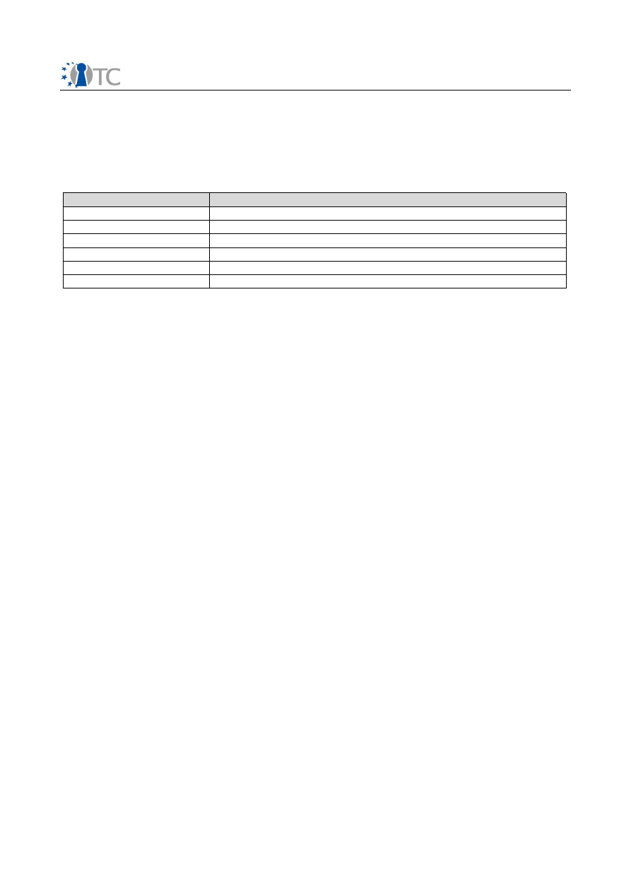
WP03c.9 Enhancement KMA service source code and documentation FINAL 1.10
protected directory.
10 List of Abbreviations
Listing of term definitions and abbreviations used in this document (IT expressions and
terms from the application domain).
Abbreviation
Explanation
KMA
Key and data Management Adaptation layer
SRK
Storage Root Key
NV storage
Non Volatile storage
TCG
Trusted Computing Group
TPM
Trusted Platform Module
TSS
TCG Software Stack
11 Related Work
/1/ TCG TPM Main Specification (parts 1,2,3)
July 9, 2007,
Version 1.2 Level 2 Revision 103
/2/ IETF RFC 4251, The Secure Shell (SSH) Protocol Architecture
January, 2006
/3/ TCG Software Stack (TSS) Specification
March 7, 2007,
Version 1.2, Level 1, Errata A
/4/ OpenTC IST-027635/D03c.4/FINAL 2.00
Key Management Adaptation (KMA) service source code and documentation
/5/ OpenTC D03c.10 deliverable
Adapting IPsec configuration tools and IKE demon source code and document
/6/ OpenTC D03c.11 deliverable
PKCS#11 source code and documentation
Open_TC Deliverable 03c.9
35/35
Document Outline
- D03c.3_TLS_DAA_enhancement_specification_v1.20.pdf
- D03c.3_TLS_DAA_enhancement_specification_v1.20.pdf
- D03c.6_TLS_DAA_enhancement_OpenSSL_design_v2.00.pdf
- D03c.12_OpenSSL_engine_TLS_DAA_enhancement.pdf
- D03c.9_KMA_Documentation.pdf